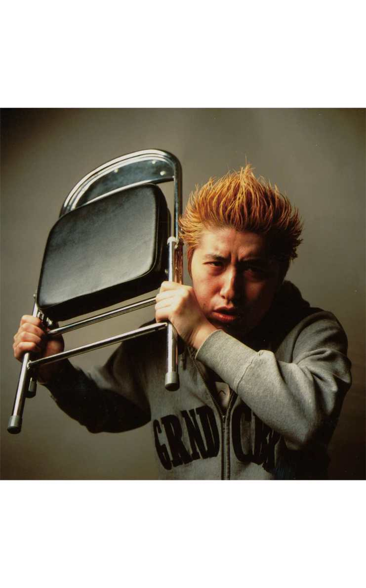
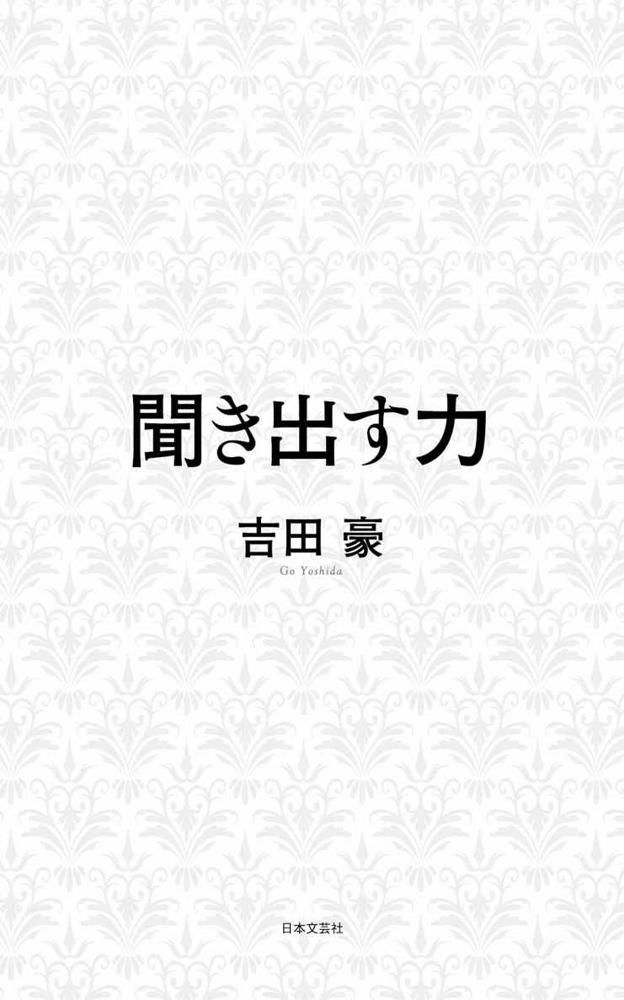
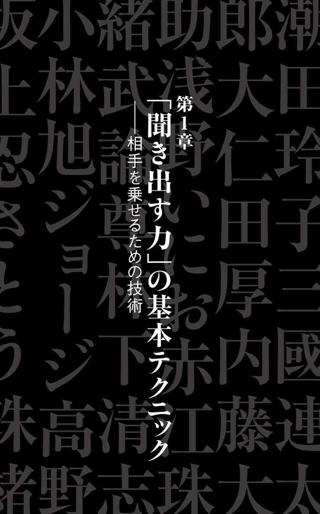
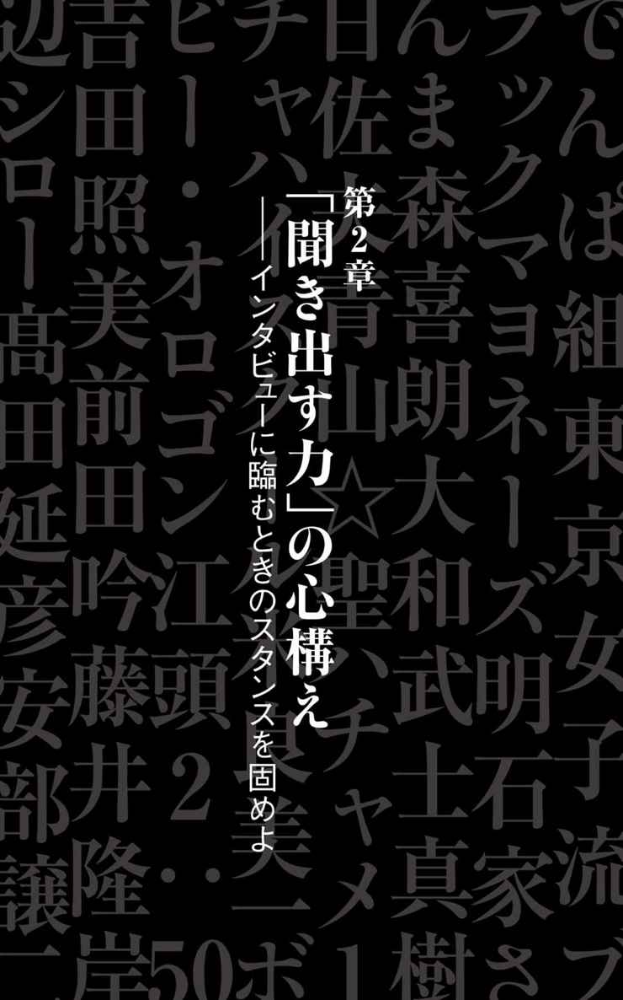
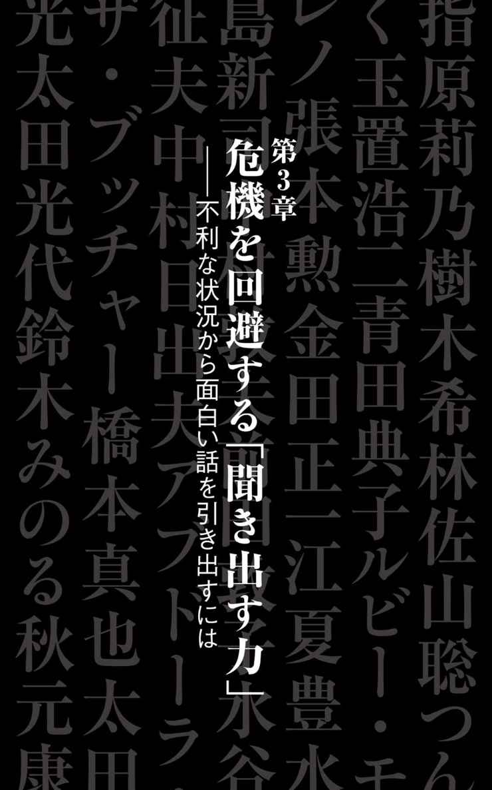
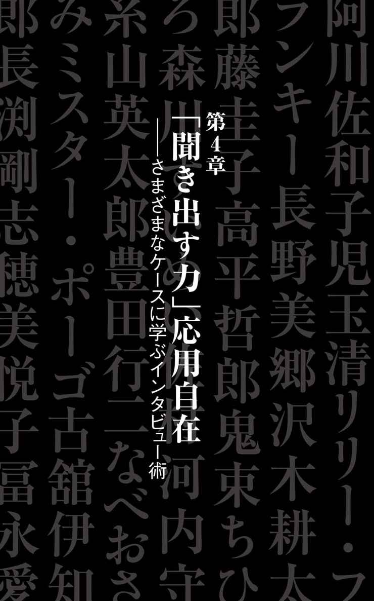
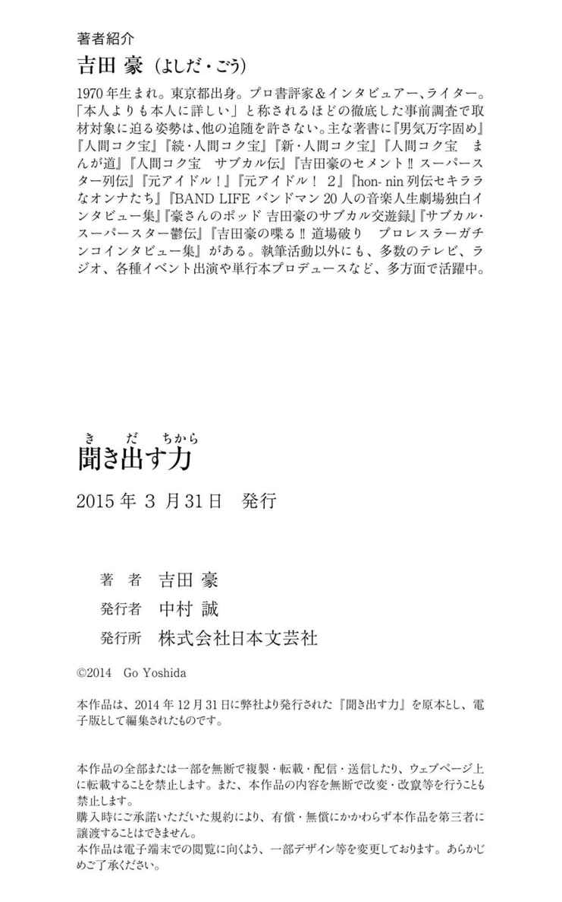

| 聞き出す力 | |
| 吉田豪 | |
| (2014) | |


聞き出す力──目 次
「聞き出す力」の基本テクニック
──相手を乗せるための技術
「聞き出す力」の心構え
──インタビューに臨むときのスタンスを固めよ
危機を回避する「聞き出す力」
──不利な状況から面白い話を引き出すには
「聞き出す力」応用自在
──さまざまなケースに学ぶインタビュー術
本書は、『週刊漫画ゴラク』二〇一二年十一月九日号～
二〇一四年十一月二十一日号に連載されたものに加筆、
適宜並べ替えて一冊にまとめたものです。
カバーデザイン 萩原弦一郎、橋本 雪
著者写真 本多 元

聞き出す力 其の一
いい答えが返ってきたら、
いいリアクションで返すこと
今後、『漫画ゴラク』を送本してもらえたらいいんだけどなあ、編集の人と接点が出来たらもしかしたら送ってもらえたりするかなあと考えて軽い気持ちで打ち合わせに顔を出した結果、スケジュール的にはほぼ不可能なのにそのまま逃げ切れずに突然始まることになった、単行本化を前提とした『ゴラク』の連載。編集サイドとしては、ベストセラーになった阿川佐和子の『聞く力』（二〇一二年／文藝春秋）に便乗して、プロインタビュアーというデタラメな肩書を名乗るボクがインタビュー術を語る内容にして欲しいみたいなんだが、ここでわざわざ語るほどの技術なんか別にあるわけもない。ただ単に、興味がある人に会いに行って、興味があることを聞いているのが、そのまま仕事になっているだけのことである。
正直、それほど興味のない取材をやることになったとしても、その相手の著書なりブログなり雑誌記事なりを読み漁れば、どこか必ず好きになれるポイントが出てくるもの。そんな「よかった探し」（ポリアンナ）の精神でボクは今まで仕事をしてきたのだ。
ところが先日、ボクのインタビュアー人生でもトップクラスの強敵を迎え撃つことになってしまった。その相手の名は潮田玲子。
別に性格も良さそうだし、何の問題もない気もするだろうが、ボクは四十二年間の人生で、オリンピック中継をトータルで三十分ぐらいしか見たことがないし、子供の頃に遊びでバドミントンをやったぐらいしか知識もないし、もちろん彼女の試合も見たことがなく、グラビアでぐらいしか彼女を知らない。オグシオと押尾の区別もつかないぐらいの（それはさすがに噓）反スポーツ主義者だったためである。
それでも雑誌記事をいろいろ読めば何か引っ掛かるかと思ったけれどすべて試合のことしか語ってないし、ブログでは意外なプライベートをさらけ出しているだろうと思って全部読んだら、試合、女子会、ネイル、小型犬の話の繰り返しで、女子力は高いけれど引っ掛かる部分はやっぱり皆無。好きな音楽もＥＸＩＬＥと浜崎あゆみという王道ぶりで、旦那さん（有名なサッカー選手らしいけど、フェイスブックで獣姦動画に「いいね！」とコメントして騒動になったことぐらいしか知らなくて申し訳ない限り）のブログを見たら、ＥＸＩＬＥのライブに行った話が出てきたけど、残念ながらボクはそっち方面には致命的に疎いのだ。
ボクが浜崎あゆみについて知っていることなんて、せいぜい彼女の画力が強烈すぎて衣装のデザイン画と完成した衣装を見比べると最高に面白いということと、サンミュージック所属の頃、相澤（秀禎）会長が自宅にアイドルを下宿させる昔ながらのシステムをやめた理由が、「風呂に入ったら湯船に生理用品がプカプカ浮いていたのを見てもう限界だと思ったからだった」ということ。そのとき下宿していたアイドルは、浜崎あゆみを含めて二人だけだったから、50％の確率で犯人が浜崎あゆみらしいってことぐらいしか知らないのだ。
......って、こんな豆知識を披露して、浜崎あゆみファンと仲良くなれるわけないよ！ 潮田玲子宅のパーティーに当たり前のように石原さとみが訪れているのは本気で羨ましいけれど、これはあまりにも接点がなさすぎる！
それでも、いつもやっているようなインタビュー仕事ではなく、ディレクターのカンペにほとんど従うテレビの仕事だったから、なんとか無事に過酷な闘いも終了。なまじ見た目が良かったせいでマスコミに追われ、人気に実力が追い付いていないとか恋愛なんかしているから結果が出ないとか叩かれ、メダルを取って見返してやろうと思ったらその夢も叶わないまま終わり......という人間ドラマには感情移入出来たから、これはこれで良し！
そして収録後、「私も仕事でアスリートの人をよくインタビューとかするんですけど、プロのインタビュアーはどういうことを心掛けているとかあるんですか？」と彼女にいきなり逆質問されたので、ボクは「噓をついたら絶対にボロが出るから、相手のいいところを探して、そこを好きになって、本当に心から興味を持って聞くこと。そして、いい答えが返ってきたら、ちゃんといいリアクションで返すこと」とか答えたと思う。そういう意味では、取材しているうちに彼女の人間らしい部分に触れられて、ようやく彼女のことが好きになれたというわけなのだ。今回は危ないところだった！
聞き出す力 其の二
普通なら聞きにくい話に
どれだけ踏み込むか
「大ベテランの俳優さんを取材するとき、代表作品を観るだけでも大変だと思うんですけど、どうしてるんですか？」とか聞かれることも多いが、ボクの答えは簡単。「まったく観ないですよ！」の一言である。
そんなの本気で観ようとしたらきりがないし、そもそもボクは映画とか基本的に観ないタイプだし、いまさら短期集中型で知識を詰め込んだところでボロが出るに決まってるんだから、そういう作品論みたいなことは映画に詳しいライターに任せておけばいい。むしろ、ボクがやるべきことは普通なら聞きにくい話にどれだけ踏み込むかってことなのだ。
それは、三國連太郎を取材したときもそうだった。映画の話もそれなりに聞きはするけれど、ボクは、いつ「あの話」に踏み込むか、だけを考えていた。
『三國連太郎おんな探求』（一九七七年／立風書房）という対談集で、「三國さんの臆病って、どこからきてるんですか」と岩下志麻に聞かれたとき、「やっぱり、短小包茎からでしょうね」と答えていたことがあったから、その話が聞きたくてしょうがなかったのだ。
この対談集は様々な女優さんに、自分が短小で包茎で早漏で陰毛が生えていると怖いから剃ってもらうとか余計な話ばかりして嫌がられるという、とんでもない企画だったんだが、おそらく彼が名優になれた理由は股間に存在すると思ったのである。
すると、彼はあっさりこう言った。
「ハハハハハ！ だからコンプレックスがあるんですよ。性的交渉についてもコンプレックスがある。いまでもコンプレックスは持ってます。ホントにダメです、僕は」
一回、包茎手術を決意して病院まで行ったけど、怖くて帰ったというのも事実だった。
「痛そうだからね（笑）。全部、包茎がいけないんじゃないかと思ったんですよ。だいたい早漏ですよね、包茎は。だから相手を満足させられないんですよ。先にイッちゃうわけですから。そのうち女性への恐怖感や性的恐怖感を感じるようになって。結局はいつもひとり芝居だっていう。だから、ひとり芝居が割とうまいんじゃないかな（笑）」
俳優は自信があったらいけないとも言っていたが、彼は自分に自信がないからこそ真っ黒になるまで台本を読み込んだそうなのである。
「自分を正当化するわけじゃないですけど、コンプレックスがない俳優さんって嫌いですね。自信がないから銭湯に行くのも嫌だったんですよ。湯船を跨ぐとき目の前でバーッとやられて、『ああ......俺はダメなんだ』と思って（笑）。ですから、遊郭に行ったりとかも一切ないですね。アムステルダムに行ったときも経験したほうがいいかと思ったけど、日本の恥をさらすのは嫌だと思って（笑）」
取材後、もう十年以上三國さんと仕事をしているというスタッフの人も「噂では聞いたことありましたけど、御本人の口からこの話を聞いたのは初めてです」と言っていた。あまりにも大御所になりすぎたため、みんな包茎話については踏み込めなかったのだろう。
ボクは本人に直撃しただけでは終わらせずに、せっかくだから映画『釣りバカ日誌』でずっと三國さんと共演していた西田敏行さんにもこの件について聞いてみた。しかも、涙なしには観られない映画『星守る犬』（二〇一二年）の宣伝で、共演の玉山鉄二との対談という、まったく関係のない状況でこの話に踏み込んだら、やっぱり相当面白い話が聞けたわけである。
「『襤褸の旗』（一九七四年）っていう映画で三國さんと初めて共演したとき、僕らも一緒にロケ宿のお風呂に入るじゃないですか。古谷一行さんとか俺とか先に入ってたんですよ。そしたら三國さんが来て、見たらパンツ穿いてるの（笑）。『あれ？ パンツは脱がないんですか？』って聞いたら、『芸術家はポコチンが小さいからね』とか言って（笑）。それを聞いて、草野大悟さんは『俺、デケえなあ。芸術家じゃねえんだ』とか言ってましたけど」
映画宣伝用の取材でも、映画の話だけしてたって話がつまらなければ読み飛ばされるので、映画に興味のない人が読んでも面白い記事にするのがボクのモットーであり、結果的にみんなのプラスになるはずなのであった。映画の宣伝担当者には嫌がられるけど！
聞き出す力 其の三
空気が悪くなるとしても、
引かないところは絶対引くな
恋愛でも何でもそうだが、噓をつき通すのは本当に難しい。自分がどんな噓をついたかなんていつまでも覚えていられるわけがないし、そもそも噓なんて大体ディテールが甘いから確実にバレる。結局、その場しのぎの噓ではなく詳細な設定を考えて、自分をまず騙すぐらいにしておかないといけないから、そんな面倒なことやってられないのである。
なので、ボクがインタビューするときのモットーは、「噓をつかない」ことだ。
好きでもない人に「ずっとファンだったんですよ！」とか言ったら、インタビューしているうちにいつかはボロが出たりするので、どうせ言うなら「あなたの●●という作品が大好きなので、安く売られていたときは救出して友達に配ってます！」とか、事実を口にしたほうが相手も喜んでくれるわけで（単に中古で安く買ったとだけ言うのはアウト）。
だから、映画の宣伝の取材であっても、その作品がイマイチだった場合は「面白かったです！」とは絶対に言わない。「あのシーンが良かったです」とかピンポイントで褒めるべきであり、そうすることで「いつも仕事で映画を観るとしんどい思いをすることが多いんですけど、これは本当に面白かったです！」と、たまに言ったとき、そこにリアリティが出るし相手も喜んでくれるわけなのである。
そして、その人の話が面白かったら本気で笑うし、真面目な話になってつまらないときは適度に流して、本気で楽しめる話に軌道修正する。そうすれば相手も、「あ、こういう話のほうが好きなんだ」とわかって話を合わせてくれるはずなので、余計な気遣いは絶対にするべきじゃないのであった。
そんなモットーで取材しているボクにまたもや強敵が立ちはだかった。大仁田厚である。プロレスラーとしても政治家としてもタレントとしても正直あまり好きじゃない相手だが、新日本プロレス参戦時のいわゆる大仁田劇場のように試合以外のトークや開き直りっぷりは抜群に面白いと思っている。その大仁田を取材していたら、突然こう聞かれたわけなのだ。
「......なあ、大仁田って面白いか？」
ヤバい！ どうしよう！ 余計なこと言ったら怒りそうだけど、噓はつきたくない！
そこで、とりあえず「......得体が知れないって感じですね」と言って様子を見ようとしたんだが、大仁田は逃がしてくれなかった。
「得体が知れない？ 何それ？ わかんないの？ わかってほしいなぁ。記者は俺のことわかんないのかなぁ？ べつに普通にやってるよ。俺の試合、面白いでしょ？」
うわ！ とうとう試合の話を聞かれちゃったよ！ ここで、「面白いです！」とか「大仁田厚対長州力の電流爆破デスマッチが見たいです！」とかテレビ朝日の真鍋由アナみたいに言えば喜んでくれるだろうけど、試合を褒めるのは噓になる。そこで、「嫌いでも認めざるをえない何かを持ってるというか、それはすごく思いますね」という本音を口にしたら、「そうか......」と、明らかにガッカリしてたみたいに見えたけれど、しょうがない。
ここで自分を殺して「大仁田さんの試合、面白いです！」って言ってたら、ボクの発言の説得力もなくなるので、そこは空気が悪くなるとしたってやっぱり引けないのである。
ちなみに、大仁田はなぜか蓮舫にも嚙み付いていたんだが、こういうときも黙っていられなくなるのが我ながら損な性分だと思う。
「俺、すごい元気だから。白髪もないし。白髪は生えないし。だから染めてるのかって言われるけど、染めてないし。髪の毛もそんなに薄くはないし。２ちゃんねるとか見ると、整形疑惑があったり、不倫疑惑があったり、もうわけがわからん。もう嫌だよ、違うだろって。耳は手術でくっつけたんだけどさ。そのとき顔が腫れたんだよ。そしたら蓮舫かなんかが、『整形したんじゃないか』って産経新聞かなんかで言ってたの。バカ野郎、耳切っちゃ悪いのかよって」
ここで、
「大仁田さんはたしかに急に目鼻立ちがハッキリしたような印象が正直ありました」
って返すのは、ちょっと自分でも正直すぎると思います！
聞き出す力 其の四
ＮＧネタを
相手のほうから話させる聞き出し方
最近はボクもテレビに出る仕事が増えてきたんだが、そういうときによくあるのが、「吉田さんは相手のことをすごく調べてくるらしいですね！ じゃあ、いまから僕のことをインタビューしてみて下さい！」的な無茶振りである。
雑誌とかのインタビューは本業だし好きな人に会いに行くので下調べもキッチリやるけど、テレビという余業の場合は知らない共演者をウィキペディアでチェックする程度なので、これはしんどい。やってられない。
その点、ＭＸテレビの『５時に夢中！』という番組は、最初から十分間のインタビュー枠を用意してくれていたので、非常にやりやすかった。しかも、相手はボクシング王者時代の内藤大助。動画が公式にアップされているので見た人も多く、「あれは面白かった」といまでもたまに言われる、このインタビューの裏側についてちょっと語ってみたい。
この企画が実現したのは二〇〇七年末、状況としては内藤戦における亀田大毅の反則暴走によって亀田ファミリーへのバッシングが巻き起こっていた真っ只中というか、ちょうどこの生放送の直前に亀田大毅が謝罪会見を行っていたぐらいど真ん中な時であり、内藤大助もまだバラエティ番組にほとんど出ていないぐらいの頃だった。そして、内藤選手サイドからの要望で事前に質問を出すように言われていろいろ考えたら、直前になって「亀田ネタは全部ＮＧ」と通告されたわけなのである！
そんな時期だから亀田ネタについてばかり聞かれてウンザリする気持ちはわかるけど、「亀田戦」というフレーズすら「この前の防衛戦」と言い換えなきゃいけないことになってしまい、それでいて番組サイドからは、「最初は今日の亀田大毅の謝罪会見について聞いて下さい」と言われたわけで。
つまり、いきなりＮＧ項目に踏み込んだら相手のガードが固くなるに決まってるのに、そこから猪木対モハメド・アリ戦ばりにルールでがんじがらめになっている中でいい試合を見せなきゃいけない過酷な状態に追い込まれた、と。
インタビューとかやると、たまに「なんであのことを聞かないんだ！」「吉田豪は守りに入った！」的なことを言われることもあるが、そういう場合は事前にＮＧになっていたり、もしくは原稿チェックで全部削られてたりするってことをわかっていただきたいものなのである。ただ、今回の内藤大助戦は生放送だから、仕掛けようと思えば仕掛けられるけど、信頼関係を作らないと話が盛り上がらない。
そこでボクが使った手段は、「最近は亀田さんの話ばかりされてウンザリしてると思うので、今日はそこら辺には一切触れずに進行します！」と宣言した上で「しかし内藤さん、異常にトーク上手いですよねえ」と彼のトークスキルを褒め称えるというやり方だった。
これはお笑いで言うところのフリである。「一切触れない」と言っておきながらも話の流れで亀田の話に触れるから、そこはあなたの高いトークスキルで上手くいなしてくださいってことだ。それを一瞬で察してくれたから、内藤大助はさすがだった。さすがに最初こそガード固めだったけど、そのうち求められている役割を理解して、 自分から「亀田君は......って、亀田君の話はやめて下さい！」「その名前は出さないって言ったじゃないですか！」と言い出したり、「笑いのセンスがいいとかやめて下さい、ボクサーなんですから！」というネタを連呼してギャグにしたりと、トークでのテクニシャンぶりと柔軟な姿勢をたっぷり見せつけてくれたのである。
最終的にはＮＧを出されていた話にもあっさり突っ込めたし、 向こうも封印したはずだった亀田への怒りを再燃させたしで、インタビューは無事に成功。
しかし、『内藤大助のラジオ・パンチドランカー』というラジオの冠番組のネーミングセンスを絶賛したら、最初は『内藤大助の強くなれ！』『内藤大助のラジオ・ストレートパンチ』といったタイトル案がスタッフに用意されて、そんなつまらないタイトルじゃ誰も聞かないと思ったというのも、実はもともと『内藤大助の俺はラジオ・パンチドランカー』というタイトルにしようとして周りに止められたというのも、亀田兄弟には決して真似出来ないセンスだと痛感させられたのであった。笑いのセンスでも亀田に圧勝！
聞き出す力 其の五
心を開かれすぎず適度に突き放す、
この距離感が大切
「吉田さんみたいな仕事をしていると芸能人と友達になれるからいいですよね！ 芸能人だと誰と仲いいんですか？」と非常によく聞かれるんだが、とんでもない誤解である。ボクに電話してきたことがある芸能人なんて、石原真理子（現・石原真理）と氏神一番ぐらいのもの。
とりあえず取材相手と友達になりたいんだったらインタビュアーとかやらず、スタッフになって接したりしたほうがいいと思う。
ボクの取材は「あなたの敵じゃないです！ 心を開いてくれたら力になれるかもしれないですよ！」というスタンスで相手に近付いていき、実際に心を開いてくれたら確実に面白いインタビュー記事にしてみせるけど、「しかし、あんまり信用されすぎても困るので、実は完全な味方でもないです！」と、適度に突き放すという代物。
初対面で相手の懐に飛び込むための手段として本人も持ってないようなレアグッズや著書を持参して、それをプレゼントしたり、ブログを死ぬ気で読み込んだりするけれど、友達みたいな距離感になったら慣れ合った感じの刺激のないインタビューになるはずだし、そもそも下手に信用されて「あなたは口が堅いだろうから」ってことで洒落にならないオフレコ話とかされるのがいちばん困る。原稿に出来なくてイベントでも話せないような内緒話なんて、教えてもらったところで意味もないのである。
なので、「あの人に話したら一気に広まっちゃうかもしれないけど、でもちゃんと聞いてくれるから、つい何でも話しちゃう」ぐらいの関係性を作るべきなんだと思う。
そして話を引き出すときは、普通ならカットになるような話をどうやって載せられるレベルにするかの闘いもしなければいけないのである。
ボクが元ヤクザで作家の百瀬博教氏を取材していたとき、ドン引きするぐらい物騒な話になっても、そこでこっちが引いたら原稿で削るしかなくなるエピソードになるので、「もう何言ってるんですか！」と突っ込んだり、「ダハハハハ！」と笑い飛ばしたりすることで、「あ、これ笑っていい話なんだ」と思わせるというテクニックを使っていたように。
最近は、こういうことがあった。
『漫画ゴラク』とは縁遠いオシャレ漫画家・浅野いにお先生を取材したときのことである。浅野先生の女装願望について踏み込んで聞いていたら、「......いま、ここに担当編集者がいるので、あんまり込み入った下ネタにいったりするとどう思われるのかなってセーブしてしまいました。ウワッていう話だから言わないほうがいいと思います」と躊躇し始めたから、「教えてくださいよ！」と食い下がると、「......じゃあ、耳打ちでいいですか？ これはホント載せないでくださいね！ 吉田さんの心の中だけにしておいてくださいね！」と言われた、と。
だけど、いざ聞いたらすごく面白い話だからなんとか載せたいと思ったので、「なんだ。これ、全然大丈夫ですよ」とフォローして、「ホントですか？ あーよかった。じゃあ、これから言うようにします（笑）」と安心させた後で、「要は勝手にバラしちゃうと、お姉ちゃんのパンツを穿くとき、段差をなくすため股間にティッシュを何枚も詰めてた（笑）」という話を即座にバラしたわけなのである。これでスイッチが入ったいにお先生は、付き合ってる彼女の顔がタイプじゃないとか、セックスするときも女性器しか見てないとか言い出し、それを読んだ彼女と別れ話に発展するぐらいになったそうなんだが、そんな波乱を超えて結婚したらしいから本当に良かった！ 末永くお幸せに！
ただ、最近二度目の浅野いにお取材をしたら、テレビでアイドルを見て可愛いって思うのも奥さんに禁止されたり、育毛剤を飲み始めたら男性ホルモンを抑制させるやつだったりで、だんだんホモっ気が芽生えてきて、なぜか性転換したいと本気で考えるようになったことをカミングアウト！ そして、「これは使えないかもしれないですけど......」との前置きで、キャバクラにも行ったことないのに初めてデリヘルを頼んだエピソードを話してくれたんだが、奥さんにも内緒にしているその話を原稿に残したままチェックに出したら、なんと削られることなく戻ってきたのであった。
これでまた離婚危機になること確実な予感なんだが、いにお先生を大好きな女子はショックを受け、いにお先生を毛嫌いしているような男は考えを改めることになる、相当おもしろい記事にはなったはずなのである。
なお、いにお先生とボクは『オトナの！』というテレビ番組にも一緒に出るまでになるんだが、そこでインタビュー時には語られていなかったデリヘル話の新ネタを披露したため、そのときも離婚危機になっていた模様。いにお先生、馬鹿すぎて信用できる！
聞き出す力 其の六
打ち合わせなしの
ガチンコインタビューの「つかみ」術
先日、ＴＢＳラジオ昼の『たまむすび』という番組から、聴取率調査週間にゲストで出演して欲しいというオファーがあった。もともと前番組の『小島慶子キラ☆キラ』にも、そのまた前番組の『ストリーム』にもレギュラー出演していた関係で、よく「吉田さん、ＴＢＳラジオに復帰して下さい！」とか言われるんだが、ボクに言われてもしょうがないし、ボクの立場は傭兵みたいなものなので、雇われたとき確実に結果を出すしかない。
今回のミッションは、番組のメインパーソナリティー・赤江珠緒さんと、レギュラー出演者の町山智浩さんの二人をそれぞれ生インタビューして欲しいというもの。
打ち合わせはゼロで、何がＮＧだとか事前に言われもしなかったから、気にせずあえてガチを仕掛けさせていただいた。
どういうことかと言うと、ボクと同じ『キラ☆キラ』レギュラーだった浅草キッドの水道橋博士がＴＢＳラジオに復帰して『Ｗａｎｔｅｄ!!』という番組のレギュラーになったとき、放送第一回目から小島さんネタを仕掛けてみたら、収録のため全部カットされ、「小島慶子は放送禁止か！」とボヤいていた、と事前に聞いたわけである。
それを知った上で、赤江さんへの第一声は「前任の小島慶子さんのことをどう思いますか？ 正直、良くも悪くも面倒な人だったわけですけど」。町山さんへの第一声は「小島さんと赤江さんとでは、どっちがやりやすいですか？」というものにしてみた次第。
とにかくインタビューで重要なのは「つかみ」なのだ。レコード会社のオーディションとかでもデモテープは最初の十秒ぐらいを聞いて、センスの有無や上手いか下手かを判断するらしいけど、インタビューも最初の数行が面白くなければ、ボクはそれだけで読み飛ばすタイプ。今回のミッションは生放送だから、最初の質問だけで、「あ、こいつギリギリのことやる気だな」と思わせなければいけないのである。
その後、赤江さんへのインタビューでは、彼女のドジっ子ぶりを検証していったんだが、どんな失敗も「三秒前は過去」と忘れる彼女のモットーが、「この仕事は、良くも悪くも反応が耳に入ってくる」ので忘れなきゃ前に進んでいけないためだと言った瞬間、チャンス到来。すかさず「いちばんバッシングがあったのって、やっぱり沢尻さんの取材のときですか？」と踏み込んでみた。
そう、『スーパーモーニング』で沢尻エリカを独占取材し、「別に」騒動について泣きながら謝罪する彼女に赤江さんが思わず貰い泣きしたり、それでいて数年後に「涙の謝罪は演技だった」と暴露した沢尻に対して赤江さんが怒っていたとか報道された件について聞くチャンスを、ボクはずっと待っていたわけなのだ！
赤江さんは「これ、話していいのかなあ......」と何度もスタッフの顔を窺いながら、やがて覚悟したように話し始めた。赤江さんのドジっ子感にほだされたのか、沢尻取材はいい感じで進み、もう終わりというところで事務所の人間が三十分ほど沢尻を連れ出して、嫌がる彼女を説得したらしい。そして取材が再開されると、十分ほどの長い沈黙の果てに突然沢尻が泣き出したという展開だったことが、ここで判明。後に沢尻が「あれは間違いでした。前の事務所が謝罪しなくてはいけないと言ったけれど、ずっと断っていたんです。絶対したくなかった。結局私が折れて。でも間違ってた」と言っていた理由がこれでわかった。赤江さんは別に怒っているわけでもないし、ただ単にこのことについて説明する機会がなかっただけ......ということだったそうなんだが、赤江さんと沢尻エリカの好感度が上がる、いいエピソードが引き出せた。町山さんからも、ジャッキー・チェンにダッチワイフをプレゼントして激怒させた有名なエピソードや、町山さんがアメリカ在住になったきっかけが、『キネマ旬報』編集部に乗り込んでパイ投げしたことであり、パイ投げのきっかけが、町内会の運動会で、それまで絶対に負けなかった短距離走で負けてムシャクシャしていたことなんかを引き出してみた。
そう、要はボクのミッションは、小島さんの幻影を引きずって「赤江珠緒は毒っ気がなさすぎて物足りない！」と息巻くリスナーに、赤江さんのいい人すぎてドジっ子で憎めないありのままのキャラクターを伝え、そして町山さんのことをちゃんとした映画評論家の人だと思っている赤江さんと、パートナーの南海キャンディーズ山里さんに、町山さんがいかにデタラメで、愛すべき人なのかを伝えることだったのだ。
ミッションを無事に完遂したボクに番組のスタッフが言った。
「いや〜、さすがですね！ 沢尻さんの件は触れたら駄目だって事前にみんなで言ってたんですけど、そこに生放送で踏み込むとは」
.........それ、全然聞いてなかったよ！
聞き出す力 其の七
全く知らないエピソードを
引き出すための「受け身」術
「プロインタビュアーを名乗るとハードルが高くなっちゃって大変じゃないですか？」
最近、そんなことを言われる機会が増えてきたけれど、実はそうでもなかったりする。
学生時代から、あまりにも堂々とした態度で相手の目をじっと見つめたりすると「豪
ちゃんは、なんでもお見通しだからなあ......」と勝手に相手が誤解して、何も知らないのに赤裸々なカミングアウトをしてくれることが何度もあったぐらいで、とりあえず堂々としてさえいれば意外と何とかなるもの。
インタビュー中、あえて無言になることで相手にプレッシャーを与えて、簡単に終わらせるつもりだったかもしれない話の続きを、強引に聞き出す技術をたまに使うこともあるんだが、あまりにも堂々と、『プロインタビュアー』を名乗る男が不敵な笑みを浮かべながら黙り込んで何かを待つことで相手に、
「......やっぱり話さなきゃ駄目か。プロインタビュアーを名乗るぐらいの人だから、きっとすべてお見通しなんだろうし......」
と思わせる、そのための最大の武器と言うべき肩書なのだ。
これの真逆を行っていたのが、『週刊プロレス』の元編集長・ターザン山本という男である。以前、彼がとあるプロレスラーをインタビューしたとき、マニアなら誰でも知っているようなエピソードに対して「エーッ！ それ本当ですか！ これはとんでもないことを聞いてしまったよぉぉぉぉぉ！」的な受け答えをしていたからビックリして確認してみたら、彼はあっさりとこう答えたのである。
「豪ちゃん、そんなこと俺は当然知ってますよ。でも、ああやって派手に受け身を取ることで、相手の大したことない技を効いてるように見せているわけですよぉぉぉぉぉ！」
いや、ちょっと待て。その結果、読者に伝わるのは「こんな大したことない技で致命傷を負うぐらいに、あいつは何も知らないんだな」ってことだけだよ！ これは完全に逆効果だし、取材相手に対しても「なんだ、この程度のことも知らないんだったら、もうちょっと話す内容をセーブしなきゃ」と思わせちゃうわけで。ボクはむしろ取材中にその手の知っている話が出てきたときは、「ああ、その話、ボクも大好きなんですよ」とリアクションすることで、「そのエピソードは面白いんですけど有名なので、今回はもっと深い話をしましょう！」と無言で訴え掛ける。その結果、全く知らない面白い話が出てきたとき、初めて「えーっ！ それ本当ですか！」と大きく受け身を取るわけなのだ。これが正解！
最近だと劇画原作者の武論尊先生をインタビューしていたとき、そんな受け身を取ることになった。自衛隊で出会った本宮ひろ志先生に誘われて本宮プロに入ったものの、ひたすら麻雀やって酒を飲んでいたという、そのエピソードは大好きだけど、すでにファンの間では有名な話である。「ボクはその先が聞きたいんです！」という電波を出した結果、武論尊先生の原作者デビューが早かったのにはこんな理由があったことが判明したのだ！
「多分にえこひいきもあっただろうし、本宮のところから離さなきゃいけないっていう編集部の意図はありましたよ。だってアシスタントに悪い影響しか与えないからね。暇でやることないし給料も足りないんで、土日になるとみんなに『この馬がいいからこの馬を買え』って言って、みんなから金集めて、それを俺がノミ屋に持ってくんだけど、むしろ俺がノミやってたから。『じゃあノミ屋に頼んでくるから』って言ってそのまま懐に入れて。で、当たっても配当金は払わない！ そりゃ編集部としても離そうとしますよね」
さらには『男一匹ガキ大将』（集英社）連載中、勝手に主人公が死んだことにして、バイクの後ろに女の子を乗せて失踪した本宮伝説についても、こんな新事実が明らかになったのだ。
「あれ噓だと思う。あのとき本宮は女と付き合ってないはずだから、たぶん俺じゃねえかな。ああいうとき必ず俺がバイクの後ろに乗ってた。あいつも結構自分で作ってカッコよく書くから。俺じゃカッコつかないじゃん」
え！ こういう衝撃的な話を聞かされたとき、ボクは大きな受け身を取ることで、
「これはボクも初めて聞く、とんでもない話ですよ！」
ってことを読者に伝えているわけなのである。
聞き出す力 其の八
相手と意気投合するための
「焦点」を見極めよ
先日、盛岡まで行ってビッグダディこと林下清志氏のインタビューを敢行してきた。
正直な話、ボクは彼の本こそ読んではいたけれどテレビ朝日の『痛快！ビッグダディ』という番組は観たことない。それなのになぜ今回の話を引き受けたかというと、代表的な出演作もろくに観ないままの俳優取材とかなら日常的にやっているし（本人の著作やブログなど、作品ではなく自分の話をしている資料を重視するため）、本を読んだ上で面白い記事に出来そうだと確信したためだ。一応、取材前に二本ほど番組も観ておいたが、そっち方面の話や美奈子元夫人との確執の話をする人はいくらでもいるだろうし、ボクはダディを掘り下げることに専念するだけ！ 著書に「俺は同じ年齢の橋本真也が亡くなったときに、これからは一時間だって無駄にしないで毎日を生きようと思ったんです。これは彼が俺にくれた大切なメッセージです」とか、なぜか橋本真也への熱い思いを唐突にブチ撒けてたりするぐらいなんだし、きっとなんとかなるはず！
すると案の定、ダディがボクの本の読者らしいという情報をキャッチ。そして、ボクや杉作Ｊ太郎先生や掟ポルシェや大仁田厚や川越シェフも出演する『夏の魔物』という青森の夏フェス（二〇一三年）にビッグダディの参加も決定！
音楽に興味が無い（『兄弟仁義』ぐらいしか好きじゃないらしい）ダディがなぜ夏フェス参加を決意したかというと、こんな理由だった。
「ちょうど今回の取材の話がきて、その直後に『夏の魔物』のオファーが来て、どういう人がやってるのか主催者の方のプロフィールを見たら略歴の二番目ぐらいに『吉田豪氏と対談』って書いてあったので、これも縁なのかなと思って（笑）。おかげさまで面白い人生を送ってきてますよ、ホントに。吉田さんと会って、俺がこんな偉そうな話し方で喋るなんていうことはあり得ないですから。これも番組ありきですもんね」
こんな感じで完全ウェルカムモードだったわけなんだが、それよりも重要なのは彼の整骨院兼自宅の『ほねつぎ盛岡屋』に足を踏み入れた途端、みちのくプロレスのポスターやパンフが貼られていたのは、まあ同じ東北を拠点とする者同士だからいいとして、やけに室内のプロレス＆格闘技色が濃かったこと！
三人の娘さんはＴＡＪＩＲＩや棚橋やバラモン兄弟の魅力を語りつつプロレススクラップ帳作りに専念し、息子さんが帰ってくると全員でプロレスごっこスタート。本棚には『吉田豪の喋る!! 道場破り』や『木村政彦はなぜ力道山を殺さなかったのか』が並ぶぐらいなので、当然のように記事には全く反映されないそっち系の話でも盛り上がった。橋本真也とは柔道つながりもあって何度も飲み、母校の先輩ということで和術慧舟會の西良典がヒクソン・グレイシーと試合するときはＯＢ会で応援に行き、一番好きな格闘家について聞くと、柔道家なのになぜか新極真会の緑健児を大絶賛！ 奄美時代には交流もあったそうで、せっかくなので六本木で酔っ払って絡んできた髙田延彦を緑健児がＫＯした噂を振ると、ダディは完全にスイッチが入ったのである。
「俺は髙田は大嫌いなんで、その話を聞いてざまあみろと思った。そんなヤツ格闘家でもなんでもない！ あいつヒクソンに負けたあと、泣いてしゃくりあげて花道を引き揚げましたから。泣くような試合で金を取るなよって。無礼だろうと思いますね。で、ヒクソンと再戦したときも、やっぱりクソはクソだなと思いました」
いま髙田に対してこれだけ怒る人が存在するとは！
しかも、それがビッグダディ！
なお、格闘技じゃないけれど同じ地上波のコンテンツになった側の人間としての格闘技論は、シンプルで実にわかりやすかった。
「青木真也が、長島☆自演乙（☆雄一郎）のヒザ一発で崩れた。あの瞬間ってアドレナリンが出て『やったあ！』って感じたし、あのために俺らは高い金を払って見てるわけじゃないですか。技術的に感心するような試合は、金を出して観たくないんです。そういう試合が増えてきてつまらなくなりましたね。『痛快！ビッグダディ』と同じで、やっぱり多くの人間に受け入れられないと成り立っていかないですよ」
こうしてすっかりダディと意気投合した次第なのである。番組観たことなかったのに！
聞き出す力 其の九
タブーを恐れず
取材相手の人間性に斬り込め
東京都で〝暴排条例〟が施行されたのは二〇一一年の十月だったが、その頃ボクは、とある大物のインタビューをやっていた。
相手はあのマイトガイ・小林旭である。若い頃は腹をバットで打たせたらそのバットが折れたというだけあって、七十歳を超えても身体の厚みはハンパじゃないし、黒い交際でも騒がれただけあって、とにかく凄味が尋常じゃない。なので取材現場には、やたらピリピリした空気が流れていた。
最初の写真撮影の時点で雑談はゼロで、「おい！ こんな写真を撮って本当に使うのか？」などと小林旭が口にしたことで現場にさらに緊張感が走る。こういう状態でインタビューするのはやりにくくてしょうがないんだが、それでもやるしかない。まあ、いざやってみたら話し好きでタブーなく何でも話してくれる人だったから大好きになったんだが。
なにしろ後藤組・後藤忠政組長のゴルフコンペに参加したことで結構なダメージを受けた件について、こう言っていたほどなのだ。
「俺自身に関してはダメージは受けてないよ。ダメージなんか受けるもんか、そんなもん！ ただ、正直に弁解をさせる場を持たせないということが、とても一方通行で嫌な社会だなと思う。愚かだなっていうね。もっと失礼かなと思うことは、これは書いても書かなくてもいいけど、彼らを人間として扱ってないってことだよ。たとえ暴力団だとか言ったって、何百人何千人って集めて、ひとつの組織を作るだけの力がある人っていったら、大概の会社じゃ素晴らしい人だよな。人間の徳がある。そのこと自体を認めてあげないと」
くれぐれも言っておくが、これは暴排条例施行後のインタビューなのである。
さらには「俺なんかにしたって、後藤の親分なんかと一緒にゴルフやって何がいけなかったの？ 誰が迷惑したの？ ただゴルフしただけだよ。親分がゴルフ主催して、そこに俺も一緒にいて、和気あいあいと仲よくゴルフして、ケラケラ笑って遊んでただけで、何もそのゴルフ場で刃傷沙汰が起きたわけでもなきゃ、なんでもないよ。何がいけないの？ そういうことがすべからくおかしいよ」などと言い放った結果、このご時世に「オレがヤクザとゴルフしたからって、誰が困るってんだよ」というフレーズがデカデカと使われたページが誕生したわけである。
後日、某大物芸能レポーターに「あのインタビューは面白かった。我々には出来ない」と言われたが、社会正義を追求するスタンスで「ヤクザとゴルフするなんて！」と、叩かなければいけない立場の人たちも、本当はこういう昭和の芸能人が好きなんだと思う。芸能レポーターも含めて誰もが勝新太郎は魅力的な人だったと語るのはそういうことなんだろうけど、勝新みたいに亡くなったことで、もう新たに事件を起こすことがないから褒められる、というのも正直どうかと思うのだ。
小林旭は、かつて拳銃不法所持の疑いで警察の取り調べを受けたことがあるそうだ。本人は「結局、所持もしてなきゃなんにもしてないよ」と語るが、要は映画の中で本物の拳銃を使っていたのが問題になったとのことである。
「それはどういうことかっていうと、警視庁の広報課の人が拳銃をいつも持って来てたわけ。日活の撮影所に調布署の広報の人が紙袋に入れて拳銃を持って撮影所に来て、『お使いください』って出してくれたんだから！ 九州のほうに行けば、九州のどこかの県警なりがちゃんと持ってきて。『渡り鳥』の最後で（宍戸）錠とふたりで向かい合ってビリヤード場で撃ち合いするラストのシーンがあったんだけど、両方とも本物の銃を使ってたよ。だから、あの頃は自由だったし素晴らしかったよ」
最近のヤクザ映画について質問された梅宮辰夫が「リアリティがないね。俺らの頃は本職の人間と飲んだりして役作りしていた」と言ってた話がボクは大好きなんだが、それが二十年前の映画『民暴の帝王』（一九九三年）の頃になると、「逆に本当の話を映画にしようとすると、マル暴の警察の四課だかなんだか知らないけども、東映の本社に来て、『銀行取引できないようにするぞ！』って言われたからね。だから『ストーリーを変えてくれ』って話が本社のほうから来て、なんだかわけのわからない変なものになっちゃった」（小林旭）そうである。それはそれで、ある種の民事介入暴力って気がする！
聞き出す力 其の十
取材相手が話す内容に関してのジャッジは
読者に委ねる気持ちで
ジョージ高野というプロレスラーがいる。
若手レスラーの頃からいきなり菅原文太主演の映画に抜擢されて、さらには石原プロから引き抜かれそうになるぐらい顔もスタイルもいいし、黒人兵とのハーフという血筋ゆえか抜群の運動能力もあるし、練習熱心だし、スターになるしかないような逸材だったんだが、いかんせんどこか致命的にズレていて、そこが最高に面白いタイプだった。
初代タイガーマスクが人気絶頂のまま引退した後、ザ・コブラとしてデビューしたとき、対戦相手が突然試合中に技を受けなくなったため、コブラが場外にノータッチプランチャを放ったときもスカされて派手に自爆。彼のプロレス人生は常にそんな感じだった。
まあ、それもいまは本人曰く、「何が起きるかわからんという、そのスリル。要するにまた観たくなる、リピート感を煽る。あれを、全部きれいにタイガーマスクと同じことやってたら、『あ、なんだ同じなのか』って早く飽きられてたと思う」とのことで、すべては計算ずくとのことらしいんだが。
ボクが初めて会ったのは彼が北海道でＦＳＲという団体を立ち上げ、パワーボムという飲み屋をオープンさせた頃。ＦＳＲとは、つまり、「ファイティング・スピリット・レスリング」が正式名称だから本来ならＦＳＷになるはずなのに「Ｗは発音しないから」とＲにしちゃったり、飲み屋の英語表記もＰＯＷＥＲ ＢＯＭＢのはずなのに「最後のＢは発音しないから」と削除しちゃったりと、ハーフとは思えないアバウトさを発揮していた頃。
当時、恵比寿の駅まで彼を迎えに行ったボクは、インタビューでこれから聞く話に被ってしまうと後でテンションが下がるだろうから無難な雑談をしようと思ったんだが、彼はスタジオまでの十分間ぐらいで「私が今日、話したいのはね......」と重要な部分を全部話し続け、本番が始まるとその話が何度もループ。正直、あれはかなり困った。
二度目に会ったのは大槻ケンヂさん（＆紙のプロ）の『トンパチ』（一九九七年／芸文社）というインタビュー集で、浅草キッドが聞き手でボクが編集者として立ち会ったとき。そのときは、「ジョージさんといえば股間がコブラのように大きいという評判ですけど」とかキッドに聞かれて、「なーんでじゃ！ どーしてじゃ！」という謎のリアクションをしていたのがいまも忘れられない。
なにしろ、いまやジョージ高野のウィキペディアには「男性自身がデカく、前田日明に羨望の眼差しで憧れられ、前田から『長さを計らせろ』と言われ拒否したところ、夜中に前田ら合宿所の仲間に寝込みを襲われパンツを脱がされて長さを計られた。合宿所の仲間と多摩川で花火をやった際には前田にパンツの中に花火を入れられるなど憧れの対象とされた。なお、ザ・コブラの名称の由来は男性自身がデカく、コブラのようだったと言われている」なんてことが書かれるぐらい、チンコのデカさは伝説級なんだが、先日このデカチン問題について本人に突っ込むと、こう答えてくれたのだ。
「見方はいろいろあるから、それでいいんじゃない（あっさりと）？ せっかくそうやって支持されてるんだし、夢を壊さないようにしないと。実際、私も若い頃は自信があったからね。ただ、みんなに脱がされたことはない。私に力ずくなんて一度もないから。そんなことしたら、やったヤツ生きてないよ。我々の出身はもともと九州の一番危ないところで、弟なんてそれはもう恐ろしかったんだから！」
こんな感じで彼は他の人が言っていたことを大体否定する。
ＳＷＳの忘年会で泥酔して大暴れしたジョージが他のレスラーにベッドに浴衣の紐で縛り付けられ、それも引きちぎってまた暴れてたから石川敬士が怒りの相撲タックルをブチかまし、翌日ジョージの顔がボコボコになっていたと北原光輝というレスラーと元『週刊ゴング』編集長・小佐野景浩氏との対談で語られていたことにしても、「作るなって、バカチンが！ そういう噓ついちゃいかんな。こういうこと言ったら撃たれるよ。死にたいのかね？」と全面否定。
ボクはこういうとき、どっちが正しいのか追及することもせず、ひたすら言い分を聞くようにしている。どっちが正しいのかは読む人がジャッジすればいいことだし、そもそも正しいけどつまらない人より、正しくなくても面白い人を評価したいものなのである。
聞き出す力 其の十一
答えを事前に予想しても意味なし。
想定外の答えこそ吉
二○一三年のＴＶバラエティを象徴した人物といえば、おそらく坂上忍だと思われる。
地上波の仕事なんか、いつなくなってもいいし、できることなら仕事自体やりたくないと公言する彼は、視聴者に好かれる気もないからリミッターもなくブス批判を繰り返した。
その結果、逆にバラエティの需要を増やしてきたんだが、ボクに言わせればなんでいまさらこんなにも騒がれているんだという心境で、彼は昔からああいう人だったのである。
ボクが彼を最初にインタビューした○一年の時点ですでに「ブスは殺さなければならない」と公言し、年末になると貯金を全額競艇に突っ込んで使い切るというエピソードも「だいたい大晦日ぐらいになるとお金も大掃除、家も大掃除、女性関係も大掃除」「必要なのはギャンブルと飲み代だけ」と語っていた。つまり、彼のこういう部分を最初に引き出したのはボクであり、それがようやく世間に受け入れられただけのことなのだ（自慢）。
ちなみに、彼は十七歳のときにリリースした著書『地球に落ちてしまった忍』（一九八四年／小学館）の時点でも異常にギラギラしていて、「この世でいちばん苦痛なことは取材だと思っている。芝居も歌もやり終わったあとに充実感があるけど、取材で充実感を味わえたことは数えるほどしかない」と語っていた。
理由はこんな感じだ。
「取材もひとつの大事な仕事である。インタビュアーとの一対一の探り合い。どうしたらぼくの考えてることを理解してくれるか？ 真剣勝負である。雑誌の影響力というのも、これまた強い。インタビュアーがへんなふうにぼくを理解すると、それがそのまま読者に伝わってしまう。インタビュアーにぼくは必ず言うことがある。お願いだから、『ぜ』とか『ぞ』とかを軽々しく使わないでください、と。そういう、へんにかっこつけた言い方は、ぼくはしないからだ。しかし、それもむずかしい。ぼくがちょっとおとなに対して反感をもっていると、こいつは不良タイプで売った方がいいとかいって、その手の記事を書かれる。困ったもんだ」
こういうことって実は意外と多くて、ボクもたまにインタビューを受けると「俺がこう言ってやったぜ！」的な口調になっててビックリすることもあるから、気持ちはわかる！
「最近のインタビュアーのいけないところは、自分で質問と答えを考えてくることだ。よけいなことに、こういう質問をすればこういう答えが返ってくるだろうと予想してしまうのだ。そしてぼくがその予想に反した言葉を返すと、不満がるのだ。勝手すぎるじゃないか。取材する前から記事はできてるのだ」
いや、ホントそう！
予想と違った展開になったとき、どこまでアドリブで対応できるかが重要なのに、予想とは違う内容になることを望まないインタビュアーも多いのだ。
「たまにろくでもない人がくる。だれが見ても軽薄そのもの。てきとうに取材を終わらせてしまおうというのがみえみえな人もいる。こういう人が来ると、ぼくはほとんど口をきかない。ブスッとしている。こっちから求めても無理だからだ。しかしこういう人たちも被害者なのだと思う。この人も前は、生き生きしていたのかもしれない。しかし、アイドルばかりを取材していると、なかには取材に苦労するアイドルもいる。質問に答えられない子もいるそうだ。自分で自分の考えをまとめられないのだ。こんな子らを取材していれば、そんなふうになるのも仕方がない」
正直、アイドル取材だからこんなもんでいいだろ的なスタンスで仕事している人もいるし、話を聞くよりもなんとかアイドルを口説けないかと思ってるような人もいる。子役としてデビューし、歌手活動を始めたらアイドル扱いされていた彼は、当時相当モヤモヤしていたんだと思う。その後も取材嫌いは続いていたようだが、先日、彼と、あるバラエティ番組で一緒になったとき、こう言っていたのである。
「初めてインタビューで本当のことを言おうと思ったのが吉田さんの取材だったんです」
え！ やった！......とテンションが上がったら、
「理由？ いや、この人も俺と同じクズだと思ったから」
と言われちゃいました！ 納得！
聞き出す力 其の十二
あえてリアクションしないことで、
面白い話を引き出すことも
魔性の女と呼ばれる人は、インタビューを受けるときもやっぱり魔性っぷりを発揮するものだ。十年ほど前に、さとう珠緒を取材したとき、ボクはつくづくそう痛感させられた。
とにかく、こっちが話を聞いているはずなのに、目をキラキラさせながら「吉田さん、音楽とかやってるんですか？」とか「すごいライターさんなんですよね」とか、なぜかこっちを質問攻めにしてきて、「自分の話なんかどうでもいいから、それよりあなたのことに興味あるんですよ！」オーラを出しまくる彼女。
取材後、彼女について担当編集者と「ホントにあの人うまいですよね。もっと若かったら騙されてますよ！」と話していたのをよく覚えているぐらいなんだが、数年前に再会したときも、そのキャラに何の変化もなかった。
ただ、そのときは事務所トラブルが表面化して明らかに大変なことになっていたはずなのに、彼女はひたすら吞気で、そしてやっぱり相変わらずボクへの興味たっぷりな感じで、質問を繰り返してきた。
「睡眠時間ってどれくらいですか？ 何してるのかなって気になりますよね。吉田さんの一週間のタイムスケジュール見てみたい！」
いや、絶対そんな興味ないでしょ！ そう思ったボクは本人に何度もそう突っ込んだんだが、彼女は一切動じることなく、
「えー、そんなことないですよー！」
「それより吉田さん、私のブレーンになって下さいよー！」
「今度、一緒に飲みましょうよー！」
なんて攻撃を繰り出してくる。強い、強すぎる！
ただまあ、こういう行為はボクに向けてにだけやってるわけじゃなくて、ある雑誌の編集者は、「僕も手を握られながら『あなたの編集部に行ってみたい！』と言われた」と、証言。
彼女はそれぐらいに魔性の女なのである。
そして、それから二年ほど経った頃、彼女は『日刊ゲンダイ』でＡＶ出演疑惑について聞かれて、なぜかこう答えていたのである。
「もともと（プロインタビュアーの）吉田豪さんが対談で〈珠緒ちゃんって『アサ芸』で一年に一回こういうの出るけど、どうなんだ？〉と言われたのがキッカケ。吉田さんは有名だから、ネットにこの話が載って（テレビで）聞かれる、みたいな流れ。つまり、すべて吉田豪さんのせいなんですよ。吉田さんがあんなふうに言わなかったら...。実際にＡＶのオファーはあったけど、どうでもいい話だと思って話しちゃったらこんなことに」
「すべては吉田豪のせいだということにしておいてください（笑い）」
え！ なんだそれ！ 彼女には昔からよくＡＶ出演の噂が流れていたのが、事務所トラブルでさらにそこにリアリティが出てきただけのことなのに、まさかボクに責任転嫁してくるとは！ そもそもボクは取材相手を「ちゃん」付けして馴れ馴れしく話すようなこともしないし、ＡＶ疑惑にしてもボクが聞いたわけじゃなくて自分から話し始めたのに！
この話を鵜吞みにしたＡＶ業界の人がボクに怒っていたという情報も入ってきたけど、それは完全に冤罪！
そんなボヤキをボクが某ラジオの近況部分で話していたら、その日のゲストだった品川庄司の品川祐がこんなことを言い始めたのだ。
「さとう珠緒さんも言ってましたけど、俺やっぱり、あれ吉田豪が悪いと思う。『そんなこと聞いてない』って吉田豪は言うけど、俺もこの人のインタビューを受けてみて、意外とラジオだとこうやってリアクションいいでしょ？ でも、インタビューのとき、そんなにリアクションよくなくて淡々としてるんですよ。だから、『あれ？ このままじゃつまんなくなっちゃうのかな？』と思って。何か言わなきゃ！って思って、聞かれてなくても自分からしゃべらせるんですよ。だから、さとう珠緒さんと二人で訴えようかと......」
なるほど。
確かにあえてインタビューではそんなにリアクションを取らず、「もっといい話あるでしょ？」と無言で追い込んでいく手口はよく使うので、（そして、本当に面白い話が出てきたときに爆笑する）、確かにボクが悪かった......わけじゃ絶対ないと思うよ！
聞き出す力 其の十三
興味を持てない相手には愚痴から入れ！
重くても受け止める度量が必要
ボクは「人の話を聞くにはどうすればいいですか？」と質問されると「相手に本気で興味を持つこと」と答えるようにしているんだが、先日、「じゃあ、興味を持てない相手と話すときは？」と聞かれて、こう答えた。
「そんなときは愚痴を聞けば大丈夫！」と。
ネガティブなことは言わない主義のベッキーみたいな相手でもない限り、人はみんな誰かに愚痴を聞いてほしいもの。たとえその問題は解決しなくても、モヤモヤしていることを口に出すことで少しはスッキリできるはずなのだ。まあ、こっちは仕事とは関係なく、人の愚痴を聞くのがもともと好きなだけの話なんだが。
なので、友達夫婦が離婚寸前になれば、旦那からも奥さんからも愚痴を聞く。そういうことが苦にならないどころか楽しいと思えるタイプなので、会社に入っても経理のおばちゃんとかとすぐ仲良くなって、いつも給湯室とかで愚痴を聞いていた。「息子がプロレスにハマってて一緒にビデオを見せられるんだけど、流血とか怖くて！ だから、ＵＷＦっていうのはいいのよ」とか、こういう話を聞くのが新鮮でしょうがないわけである。
専門学校時代も喫煙所でよく会う掃除のおばちゃんと仲良くなって、そのうち愚痴を聞くようになった。すると、おばちゃんはこんなことを言い出したのだ。「聞いてよ！ この前、休みの日にここの学長の愛人の家に掃除に行かされちゃって」と。なんだそれ！
これは面白いことになってきたと思って、教師からも愚痴を聞いてみた。すると「給料が安い」とかの定番ネタのみならず、「学校案内のパンフに載ってる体育館、あれ本当はないんだよ」とか「あそこの校舎は違法建築だから看板を出してない」とか「学長が脱税で二度逮捕されてる」とか、いい話が次々と出てくるからビックリ。さっそく裏を取るべく、当時はまだインターネット時代じゃないから図書館に行き、新聞の縮刷版をシラミつぶしにチェックしていくと......無事に二回分とも脱税記事を発見！
そんなわけで、せっかく調査したんだからとばかりにボクは専門学校の卒業制作として学校の暴露本を制作し、こういうエピソードを全部ブチ込んでみた次第なのである。
その結果、これまで卒業生の作品は全部、上野の美術館に展示されるシステムになっていたのに、ボクの代からは代表者のみの展示に変更。「学校の圧力に負けない！」とばかりに、その暴露本を勝手に美術館に展示してくるというテロを仕掛けてみたりで、そんなことばかりしているから卒業式のとき、ボクと、あと一緒に卒業制作を作った友達だけ担任から名前も呼ばれず無言で卒業証書を手渡される羽目になった、と。でも、そういうことがあったほうが後々まで記憶に残って良かったんじゃないかと思う（ポジティブ）！
ちなみに高校の卒業式では冬休みの間に金髪にしてたから、黒いスプレーで髪を染めてみたものの、不自然な黒さになって余計に悪目立ちしたせいで「なんだ、それは！ 嫌がらせに来たのか！」とか言われて、冬休みの間に髪を伸ばした（といっても後ろ髪を結べる程度）メタル好きの友人二人とセットで職員室に監禁されて、卒業式には最初から来ていないことにされちゃったんだが、それもいまとなってはいい思い出！ ただ、高校時代は人の愚痴を聞くような余裕がなくて、むしろ自分の愚痴を聞いてほしいぐらいのモードだったのが、いま考えると良くなかったんだと思う。
高校卒業後の無職期間で人生経験を積み、専門学校では同級生よりも年上になり、だんだんボクの心にも余裕が出来ていった。そして、いま人の愚痴を聞くことがちゃんと仕事になっているのは、心の余裕が保たれているからなんだとボクは思う。心に余裕がないと他人の幸せを心から願えないし、他人を羨んだりするし、余裕があるからこそ黒柳徹子はユニセフとかの活動が出来ているはず。ボクも二十代ぐらいまでは他人に奢るなんてほとんどしたこともない人生を送ってきたが、生活が安定してくると人に優しくもなれるし、愚痴もいくらでも聞けるようになるのであった。
あ、でも仕事関係で一度だけ連れて行かれたフィリピンパブで聞かされた愚痴は重すぎて、ボクにはとても受け止めきれなかったなあ......。
聞き出す力 其の十四
あなたにとって○○とは......
なんて質問は、上級者にのみ許される!!
俳優の古田新太と新生東京パフォーマンスドールがやっている『東京号泣教室』（ＴＯＫＹＯ ＭＸ）という番組にボクが「インタビューの達人」として呼ばれたとき、「インタビューの極意三か条」について話していたのだそうである。すっかり忘れてた！ でも、最近ＤＶＤ化もされたので確認したら思いっきり話してた！
そのときボクが挙げたのは、「本人より本人に詳しくなる」「サプライズを持参する」「敵じゃないことを伝える」の三つ。
出演時はちょうど永六輔取材を終えたばかりだったから、キャリーバッグいっぱいの永六輔本を取材に持参して、永さん相手に「この本が最高でした！」と、五十年以上前に出た幻のデビュー作『一人ぼっちの二人』（一九六一年／えくらん社）を絶賛したやり取りを再現したり、そのときキャリーバッグを開けた本の山のいちばん上に地上波ではタイトル的にアウトな『われらテレビ乞食』（一九七一年／白馬出版）を置いておいたり、数年前の古田新太取材時には、上着のチャックを閉めて気付かれないレベルで古田新太Ｔシャツを着込んでおいたりの流れを再現してみせた。
その後、東京パフォーマンスドールのメンバーが実際に古田新太相手にインタビューをやってみて、ボクが駄目出しをしていったんだが、そっちのほうが実用的なアドバイスが多かったように思う。いきなり「今まででいちばん大変だったことはなんですか？」と聞いた子に対して、そうやって相当考えないと答えが出ないようなことは聞かないほうがいいと注意したりとか、「あなたにとって◯◯とは？」と聞いた子に対して、インタビューでいちばん駄目なのが、その類の質問だと指摘したりとか、ほら、すごく実用的でしょ！
ボクがＴＢＳテレビ『情熱大陸』に密着取材されたときも、そういうインタビュー理論をさんざん話しておいたのに、最後のまとめで「吉田さんはこういう質問を嫌うのをわかった上で聞きますけど、あなたにとってインタビューとは何ですか？」と質問された。そんなの「仕事」の一言でしかないし、そこに付け加えるとしたら、「もちろん大好きだし、このまま死ぬまで続けたいライフワーク」だってことぐらい。
まあ、そんなことを公言しているボクも昔は「あなたにとって◯◯とは？」という質問を多用していた時期もあった。ただし、それは女子プロレス雑誌で仕事していた頃、「あなたにとってプロレスとは？ ちなみにアントニオ猪木さんやブル中野さんは『プロレスはセックスに似ている。信頼関係のあるお互いが高め合っていって、最後にフィニッシュを迎える』とか言ってたんですけど......」と、恋愛禁止を前提とする女子プロレスラー相手に、大物の名前を利用したセクハラ質問をしたかっただけのことだ。この質問に対して、赤面しながら「まだやったことないので、わかりません......」と答えたりするのは、かなり味わい深いし、このやり取りで相手の男性経験の有無までなんとなくわかるのだ。
最近でも元ＡＫＢの前田敦子の取材時、「アイドルには誰でもなれるし、一番楽だと思う」という発言を引き出したら、すぐにももクロ百田夏菜子取材で「前田敦子さんはそう言ってたんですけど、百田さんはどう思いますか？」と質問してみた。こうすることで、ほとんど接点のない、普通なら聞きにくい相手の話に触れることも出来るし、深い話にも展開させやすいし、ＡＫＢとももクロの比較論というデリケートな話題にも転がしやすい。そういう計算をした上での、具体例も含めた「あなたにとって◯◯とは？」なら全然有りだし、どんどん聞くべきだと思うのであった。
ちなみに、アイドル絡みでいうと最近はＬｉｎＱのラジオに呼ばれて、メンバーがボクに逆インタビューをする企画もあった。そのときは制限時間五分だと言われているのに、最初の質問が「まずは自己紹介して下さい」で、「時間がないんだから、そんなのいらないですよ！」と思わず本気で突っ込んだ。グループアイドルの場合、録音された音声を聞いても誰がどの声なのかわからなくなるから、まずは自己紹介が必要なんだろうけど、ボクにはやる意味なし！ しかも、アイドル風に自己紹介するという指定で、そんな確実に火傷するようなこと、わざわざラジオでやるわけないのであった。

聞き出す力 其の十五
自分語りは話を引き出すための道具、
記事では裏方に徹すべし
音楽誌なんかを読んでいてイラッとくるのが、インタビューされる側のミュージシャンよりも、裏方のはずのインタビュアーのほうがたっぷりと自分語りしがちなことである。
アルバムレビューでも肝心の中身については全然触れず、なぜか自分語りをしていることが多いのは一体何故なのか？ 読者が知りたいのはお前のプチ情報とかじゃなくて、そのアルバムやミュージシャンの情報なんだよ！と、言いたくなること多数なので、ボクのインタビューでは極力自分を出さないように心掛けている。
自分の発言はひたすら短く編集し、現場では相手をリラックスさせてさらに深い話を引き出すための武器として自分のエピソードを語ることもあるけど、原稿ではザックリ削除する。ボクの本を読んだ感想として、たまに「相変わらず吉田豪が完全に自分の気配を消している」と言う人もいるが、まさにその通りなのだ。
ちなみに初対面のアイドルの子を取材する場合、緊張したり警戒されたりで、最初は相手の口数が少なかったりするから、こっちからいろいろ話すことも多い。
たとえば学校に馴染めないとかの話になれば、「ああ、ボクもそうでしたよ。だから高校時代は学園祭実行委員になって学園祭を実行しないように動いたりとか、専門学校に入ったら、学長の暴露本を作ったりとか.........」なんてボクも話すけど、そこを原稿に残す必要は感じないというか。わざわざ相手の面白さを消す意味もないし、取材相手とどっちが面白いか勝負しているわけじゃないんだから、余計な自分アピールなんかする必要なし！ そもそも文字数が限られているのに、なんでそんなに自分の情報を入れたがるのかサッパリわからないのであった。
なお、ボクが現場でもそんなに話さないケースもたまにある。先日、『でんぱ組』というアイドルグループを取材したときは、なぜかメンバーが半分ぐらい泣き出しちゃったりの異常事態になったんだが、ボクがそんなにエグいツッコミを入れたりしたわけでもない。前に彼女たちと一緒にイベントをやったときもそうだけど、ボクはほとんど質問もせず、相手の会話を整理したりして多少のコントロールをするぐらいでしかなかった。それでも、彼女たちみたいに自分の話をちゃんと聞いてもらえず生きてきたと思っているような側としては、ボクが興味深そうに話を聞いているだけで喜んでもらえるものらしい。心療内科の先生が、まず患者の話を聞くのと同じようなものなのだろう。
そのときは、ネットのエゴサーチ（自分の本名やハンドルネームを検索し、ネット上での自分自身の評価を確認すること）で傷付いたり憤慨したりしたエピソードで異常に盛り上がった。そもそもアイドル活動を始める前からゲームやコスプレの掲示板で叩かれ慣れているメンバーも居たりで個人差はあったけど、顔を出して活動している人間ならいま誰もが経験することなのだろう。
「まあ、私たちは実名じゃないから、自分とは別のキャラがネットで叩かれているんだと思えばまだいいんですけど......」的なことを彼女たちが言ったとき、ボクがようやく口を開いた。
「ボクは本名で活動しているのにエゴサーチが大好きで、自宅に居るときは下手したら五分に一回ぐらい検索してるんですけど、ただ今度『情熱大陸』（ＴＢＳ系、二〇一二年十二月三十日放送）に出ることになったんですよ。その放送日にニコ生で番組の実況中継もやることになって、ツイッターとかの反応も拾いながら放送するってことで。問題はいままでやってきたニコ生とかはボクのことを知ってる人たちが見てたけど、今回は何も知らない地上波の人たちのコメントを大量に浴びることになるわけで、たぶんこれが人生最大の試練になると思うんですよね......」
そんな自分語りをしたら、「それなら私たちが援護射撃するコメントをいっぱい書き込みます！」とか彼女たちが言ってくれたから、これは文字数に余裕のあるネットでのインタビューなんだし、せっかくだからカットしないでおくことに決定！ ただ、個人的には『情熱大陸』より、むしろ『週刊漫画ゴラク』連載の『女熱大陸』に出たいぐらいなのであった......って、もう連載が終わっちゃったんだ！ そもそも女じゃないから『女熱大陸』には出られないって意見もあるだろうけど、ボクみたいに情熱がなくても『情熱大陸』には出られるんだから、世の中に不可能はないはずなのである。
聞き出す力 其の十六
子供を取材するときは、
こちらが怯えるくらいがちょうどいい
同世代同士だったらいくらでも話は合うだろうけど、この仕事をしていると老人から子供まで取材相手の年齢層はバラバラである。ボクは七十歳オーバーの老人の取材をすることも多く、結果的にその相手の人生最後のインタビューになることもよくある。基本的に老人に関しては、人生経験豊富で話し上手なのだが、記憶がおぼろげだったり、同じ話がループしがちだったり、話が長くて、平気でインタビューが二時間三時間突破しがちなぐらいしか問題はない。
それより大変なのは、子供を取材することなのである。
ボクが子供にインタビューするときに気を付けているのは、絶対にキツいツッコミを入れないということ。三十歳ぐらい年齢が下の相手を怯えさせたらいけないので、「何言ってるんですか！」とかツッコんだりもせず、ひたすらソフトに「はいはい、違いますよー」とか言って訂正していく感じ。
つい最近、平均年齢十五歳の女性グループ・東京女子流を取材したときにも、やっぱりかなり気を遣ったものだ。もともと三年前、まだデビューしたばかりの頃のインストアイベントにボクが行ったとき、あまりに子供すぎて衝撃を受けたこともある彼女たち。そのとき握手会の列に並んだ怪しい長髪の中年男（ロマンポルシェ。の掟ポルシェ）に怯えて、物理的にかなり距離を置きながら握手していたり、ボクがイベントで共演したときに「ＣＤは全部買っててライブにもよく行ってます！」と挨拶したらなぜか警戒して引かれたりと、それだけナイーブな子たちなんだから、インタビューするのも確実に困難！「仲良くならないと、警戒してあまり話してくれない」という評判もあるのでどうしようかと思ったら、ボクのＩＣレコーダーのストラップを見るなり、「あ！ ほら女子流の！」「すごーい！」とみんな大興奮。これは今回の取材のために用意したわけではなくて、日常的に愛用しているものだったんだが、おかげでスムーズに会話へと入ることができた。
そして、音楽的にはすっかり大人っぽい路線になって、椅子を使ったセクシーなダンスやヘソをチラ見せするダンスをステージで披露したりもしているけど、デビュー当時と比べてどんなところが大人になったと思うかなど、「大人」をテーマに取材開始。つい最近、クラブイベントで彼女たちが早朝ライブをやったとき、出番前、みんな舞台袖でよくわかんないけど、ぴょんぴょん飛び跳ねてたりとか、全然大人じゃない瞬間もボクは目撃していると伝えると、リーダーで最年長の山邊未夢はこんな話をしてくれたのである。
彼女、最近は「未夢、大人になったから」が口癖らしいのに、衝撃的すぎる事実が発覚。ちょっと、やり取りを再現してみよう。
山邊 いろいろ考えたんです。今まではほんとにバカだったみたいな感じで反省して。
吉田 一体何やったんですか（笑）。
山邊 毎日ぴょんぴょんしてて。
吉田 毎日ぴょんぴょんして（笑）。
山邊 何かふわふわしてほんともうバカみたいだったなとか思って。なので、やっぱりもう高校二年生に近づいてきてるから、もうそろそろ大人にならなければならないと思い......あのー、......ぴょんぴょんしなくなった（キッパリ）。
吉田 ぴょんぴょんしなくなった！
山邊 ぴょんぴょんしなくなって、あと前まで「鬼ごっことかしたい」とか、結構最近まで思ってて......。
吉田 最近まで鬼ごっこしたかった！
山邊 「鬼ごっことか、かくれんぼしたい！ 」と思ってたけど、最近したいと思わなくなってきたから。もう走ったら疲れるみたいな感じになって（笑）。だから、大人になったのかなって思います。
大人とは何か、改めて考えさせられるやり取りである。
そして年齢差があるからこそ、あえてオウム返しにして発言を強調するやり方をしていたんだが、その後、「鬼ごっこ、この間しました。半年位前」と山邊さんに言われて、思わずボクも「してるじゃないですか！」と大人気なく突っ込んでしまったのであった。
聞き出す力 其の十七
相手を好きにならなければ、
インタビューはできないものである!!
すぐに飽きられるかと思ったのに、『情熱大陸』出演以降も相変わらずボクへのテレビ関係の出演依頼が途切れないでいるのは、正直言って嬉しさよりも複雑な感情のほうが大きい。
理由は簡単で、プロインタビュアーとして番組に呼ばれると、毎回のように「これまで取材した中で大変だった相手は？」と聞かれて、事前に「沢尻エリカ、樹木希林、玉置浩二とかの話をお願いします」と、これまでに何度も話してきたエピソードを指定されたりするし、そのせいで番組を見る側にも「また吉田豪が同じ話をしている！」と思われるしで、どうにもテンションが下がるためだ。
それでも社会科見学気分で、スケジュールの都合さえ合えば仕事は二つ返事で引き受けるのがモットーなので、この前は『ブラマヨとゆかいな仲間たち アツアツっ！』（テレビ朝日系）という番組に出演してみた。
打ち合わせの結果、この番組ではテレビ的にはギリギリな岡本夏生取材のエピソードを話してもいいとのことだったので、それなら面白く出来そうだと思ったんだが、その他大勢的な扱いではなく、ゲストがボク一人だと聞いた時点で、まず嫌な予感がした。そして、番組のウィキペディアをチェックしたところ、そこには当時こう書かれていたのである。
「ゲストはブラマヨと親しい芸人から、ほぼ接点のない芸人まで幅広く出演している」
それ、幅は相当狭いよ！
つまり、ゲストは基本的に、「ゆかいな芸人仲間」で、ボクよりも前に芸人以外で出演したのはＹＯＵと井筒和幸監督のみ。どっちも完全にテレビの人だ。
そもそも「『情熱大陸』に出るには情熱がなさすぎる」「むしろ平熱大陸」とか言われたボクが、「トーク終了後に『どれだけ熱いトークだったか』を観客による温度判定（最高１００℃）で判定、80℃を下回った場合はトークの温度を下げた張本人にしっぺなどの罰ゲームが与えられる」という、熱さが求められる番組に出るのは完全に間違ってるよ！
さらに、収録直前の打ち合わせでいきなり「今日のラスト十分でブラマヨさんを生インタビューして下さい」とスタッフに言われたからビックリ。ボクの武器は下調べなのに！
結局、「お互いのめんどくさいと思う部分はなんですか？」というテーマで話を聞くことにしたんだが、これはアイドルグループとかを取材する場合、年齢差もあってみんな緊張しがちだから、メンバー同士のざっくばらんなやり取りで話が転がりやすくするのと同じやり方。それで盛り上がるのであれば、こちらから変に介入することもせず、会話を最低限コントロールするだけで良し。このやり方でこれまで上手くいってきたから今回もなんとかなると思ったら、そうでもなかった。
ブラマヨ吉田さんとは一度、二人でトークイベントをやったことがあって、そのめんどくさい性質について知っていたからこそのテーマ設定だったのに、「こいつホントめんどくさくて腹が立つんですわ！」的なエピソードが全然出てこない。前半のフリートーク部分でも普段あまり使わないネタを小出しにした結果、女性観覧者がみるみるドン引きしていくのがわかったのに、さらにこの展開！
結局のところ二人のコンビ仲が良すぎるせいでボヤくほどのネタがなかったわけで、それはいいことだろうけど、ボクとしては困る！
そして最近困るのが、こういう「じゃあ、いまからインタビューやってみせて下さい」パターンなのである。
ボクにとってのインタビューは下調べや原稿執筆も含むものだし、イベントやテレビ出演などで、それを求められるのは、ＡＶ嬢がイベントやテレビ出演時に「じゃあ、いまから軽くセックスやってみせて下さい」と言われるようなものだと、松尾スズキさんに「言葉の風俗嬢」と言われたボクは思う。
ホーキング青山さんのイベントに呼ばれたとき、「吉田さん、ボクのことも全部調べて来たんだろうなあ」と言われて、「いや、何も調べてないです！」と返したこともあるボクが、そう簡単に股を開くと思われたら大間違いなのである。......って、「相手のことが好きにならなければやらない」というボクの取材でのモットーって、風俗嬢やＡＶ嬢というより完全にガチ恋系なのかも！
聞き出す力 其の十八
些細なつながりを大事にすることで
インタビューのチャンスが訪れる
阿川佐和子さんと対談したとき、「誰かインタビューしたい人はいますか？」と最後に聞かれて、「明石家さんまさんを取材したいって、ずっと言ってるんですけど、あの人はインタビューが大嫌いだから、なかなかチャンスがないんですよね」と答えたら、「私もまだ取材出来てないから、どっちが先にインタビューするか勝負ですね！」との宣戦布告で対談が終わったんだが、それぐらいボクは明石家さんまという人の影響を受けている。
自分の本を出す気もなければ、映画を撮ったり絵を書いたりボクシングやマラソンを始めたりする気もない、自分の頭がいいように見せる気もなければ、爽やかな真人間になる気もないし、インタビューを受けたりして自分の考え方を残す気もない。テレビやラジオで自分のことを話せさえすればそれでいいという、その笑いに徹した姿勢が大好きなんだけど、だからこそボクの取材も受けてもらえないわけで。
そんな感じで、さんま愛をアピールし続けていたら数年前、ボクがインタビュー連載をしていた『本人』という雑誌の編集長から「さんまさんの取材が決まりました！」という電話が入ってきたからビックリ。
やったー！と、一気にテンションが上がったら、「インタビューは僕がするので、さんまさんに何を聞いたらいいのか教えて下さい」と言われて「めったにないチャンスなのに、なんで！」と一気にテンションが急落したのは言うまでもない。
その後、やっとチャンスが訪れた。さんまさんとナイナイ岡村さんの特番にボクが呼ばれたのである。しかも二回。そこでボクが迷わず引き受けた理由は、こうしてつながりが出来れば取材を受けてもらえるかもしれないからだ。
その結果、ゴールデンタイムの番組に出たら、ほぼ必ず出番がカットされてきたボクが、さんまさんと絡んだときは初めて結果を出すことに成功し、そして遂にとんでもないオファーが訪れたのである。『さんまのまんま』出演だ！
さすがに場違いすぎるし、ゲストが誰なのかも伝えられないまま集まったスタジオ観覧のお客さんにも申し訳ないから断ろうかと思ったけれど、二本撮りのもう一本が伊藤淳史＆小出恵介というボクの分を穴埋めしてくれるようなダブルゲストだったから、それならいいやと出演を決意。そして、みんなボクのことなんて興味ないだろうから、ゲストだけど聞き手に徹することをテーマにしてみた。
結論としては......本当に面白かった！
過去のグッズや著書持参でいろいろ掘り下げていったらさんまさんがあからさまにうろたえて汗をかき、「今年、さんまさんが汗をかいたのは北島三郎さんゲストのとき以来」とスタッフの人に言われたのも感慨深いし、さらには大阪で放送している『ヤングタウン』というラジオ番組でさんまさんがボクのことをネタにするという事態にも発展！
「この間も吉田豪さんっていうインタビュアーでエッセイストの、あの人が『さんまのまんま』にゲストで来てくれて。中学校のときから俺の大阪の『ヤングタウン』、ずーっと聞いてるの、いまも。東京の人ですよ？ 俺のファンでいてくれてるってテレビなんかでも言うてくれはるんですけど、『いまもラジオやってるんですよ』言うたら、『いや、聞いてますよ』って。ほんで、『いまはモーニング娘。さんとかとやってるけど、優しくなってる』って怒られたんです、こないだ。『もっと厳しく、数々の女性を泣かせてきた放送が好きなんです』って、わけのわからん。痛ーいファンです、あいつもね」
これ、中学時代はニッポン放送の『明石家さんまのラジオが来たぞ！ 東京めぐりブンブン大放送』を聞いていて、それから二十年以上ラジオ離れした後、自分がラジオに出るようになってからＴＢＳラジオのヘヴィーリスナーになり、いまは大阪の『ヤングタウン』も聞くようになったっていうのが正解なんだけど、真実はどうだっていい。
とにかく、こうして二人だけでほぼ公開インタビューみたいなことをやりつつ、「いつか取材させて下さいよ！」と本人にも伝えることが出来たので、これでまた野望に一歩近づいたと考えていいんだと思う。こうしてさんまさんにラジオでネタにされたことで生きててよかったとは思えたけど、このインタビューが実現しないことには死んでも死にきれないのであった。
聞き出す力 其の十九
直接会って話すまで、
その人の本当の姿はわからない
ソチ五輪の浅田真央について、東京五輪・パラリンピック組織委員会会長でもある森喜朗元首相が「あの子、大事なときには必ず転ぶ」と発言。これがすごい勢いで叩かれたり、「いや、あの人はマスコミに嫌われているから発言を変に抜粋されただけだ！」とフォローする人が出てきたりの騒動になっていたんだが、全文を読んだ限りでは、あの人なりに気を遣おうとはしているけど致命的にデリカシーがなくて、そこが実に森元首相らしいとボクは思った。
ちなみに以前『週刊ポスト』の企画でボクが直接取材した森元首相の印象は、「面倒見はいいんだけど、口が悪くてデリカシー皆無な親戚のおじさんっぽい」し「良くも悪くも昭和の田舎のオッサン」って感じ。
個人的には絶滅危惧種な昭和のオッサンが大好物なので、その資質が活かせるポジションに就けば何の問題もないと思ってるぐらい、直に会うと憎めない人物なのである。
なにしろボクが取材をオファーしたら、国会議員を引退する前日、つまり最後の本会議の直前にインタビューを受けてくれることになって、国会議員・森喜朗のラストインタビューをするのがこのボクという異常事態に！
取材当日も、会うなり「あしたクビになるからさ（笑）」と言い放ったぐらいフランクで、落語好きだから話術も巧みで、とにかくすごいサービス精神の持ち主だった。これでデリカシーさえあれば国民の支持も得られたはずなのに！
以前、社民党時代の辻元清美を取材したとき、突然森首相から電話がかかってきて、敵対してるのに何の用かと思ったら、「ラグビーの早慶戦で早稲田の応援が足りないから、なんとかならないか」と言われた話を聞いたりで、そういうラグビーの上では超党派な姿勢にもボクはシビレた。この日も「今日はラグビーのことがテーマだっていうから取材に応じたんだよ。そうじゃなかったら、俺の悪口ばかり書いてる『週刊ポスト』の取材なんか受けるはずないじゃない」という理由で取材が実現したのである。
「ラグビーでは激しく戦ってるうちに、不意に何発か手が当たったりする。そうすると、あの野郎、終わったら一発やってやろうと思うさ。それをやり返してたら乱闘がとめどなく続くから、終わったら必ずシャワーを浴びて全員集まって、アフターマッチファンクションっていうのをやるわけよ。試合のあとに全員集まって、まずビールで乾杯。それで、みんな仲良くして、一緒に歌を歌って相手を称える。これをノーサイドというんだよ。だから僕は、野田（佳彦）さんにノーサイドにしようって言ったよね。こないだ安倍（晋三）君も言ったかな。それから菅（直人）が言ったり、鳩山（由紀夫）も言ったかな。でもね、ふざけるなと。ラグビーをしたこともないヤツが。ノーサイドっていうのは相手に敬意を表するからノーサイドなのよ。だから、相手をこの野郎と憎々しく思ってるときはノーサイドなんて使ってもらいたくないね」
どうですか、このラグビーへの過剰なまでのこだわり！
こんなことを熱く話しているうちに一時間ほど経過して、女性秘書が森元首相にメモを渡した。そして彼は「もう本会議が始まります」と書かれたメモを見るなり、「こういうことを入れてくるなよ、いちいちうるさいよ！」と言い切り、気にせずインタビューを続けたのである！ 結局、二時間たっぷり話が聞けたんだが、秘書の人に言わせると、こんなことは珍しいとのこと。なんでそうなったのかと思えば、「肝心な話に全然ならないけど。今日はラグビーのことを聞くんじゃないの？」と、要はラグビーについて全然話し足りなかったみたいなのである。
「まだ時間はある！ だから、ラグビーの話をしよう！」
ホント、デリカシーはないけれど邪気もなくて、無邪気を体現したような人なんだとつくづく思う。インタビューが終わってツーショットを撮るとき、「今、おいくつですか？」「子供は？」「嫁さんは？」などと聞かれ、当時四十二歳で独身で子供もいないと答えると、「いなくても面白いかもしれないけど、家族はいいよ」と言うなり、現場に密着していた『情熱大陸』の女性スタッフを指さして「あれでどうだ？」と一言。それはさすがにデリカシーなさすぎ！
でも、この発言に続けて「ぜひ結婚式のときは呼んでくださいよ。悪口言ってやるから（笑）」と落とす辺り、なんとも憎めない人なのであった。
聞き出す力 其の二十
ハッキリと現実を語ってもらい、
それを受け止めること!!
プロインタビュアーという肩書を勝手に名乗るようになってから、
「最初にやったインタビューは誰ですか？」
と聞かれる機会が増えてきた。こういう場合、どの段階から答えるべきなのか、いつも悩む。
「これまで何人ぐらいインタビューしたんですか？」
という質問に対しては、やっぱりどう答えるべきか悩みつつも、この場合は千人斬りって言い方が松方弘樹とかの女性遍歴みたいでカッコいいからそうしているけど、最初のインタビューとなると......？
この仕事を始めて最初に取材したプロレスラーが獣神サンダー・ライガーだったのと、最初に取材したアイドルが花島優子だったのは憶えてるけど、そもそも高校時代からアンダーグラウンドな老舗ミニコミに参加してハードコア・パンクのバンドの人を取材したりもしていたし、もっといえば中学時代にインタビューしたこともあったわけで。そういう意味では、ボクの原点は〝あれ〟なんだと思う。
ボクが中学二年のときだから、ちょうどアニメブームがピークを過ぎようとしていた一九八四年。劇場映画でいえば『うる星やつら２ ビューティフル・ドリーマー』や『風の谷のナウシカ』や『超時空要塞マクロス 愛・おぼえていますか』なんかが公開されたその年に、社会科の授業か何かで「いろんな仕事をしている人を取材する」という課題が出たことがあった。
クラスのみんなが手軽に近所の八百屋だの何だのを取材しているとき、当時ゴリゴリのアニメ好きだったボクは、近所に東映撮影所と東映動画があるから「アニメーターの取材がしたい」と言ってみた。アニメ雑誌の情報で東映動画見学を有料でやっているのは知っていたから、授業の一環だったらタダで見られるはずだと考えたわけである。
案の定、教師が話を通してくれたことで撮影所をタダ見できることになり、そして今となっては名前も知らないアニメーターの人を取材することになった。場所は東映動画の前の薄汚い喫茶店。瓶入りのコカ・コーラを奢ってもらったことは憶えているけれど、ボクがどんな質問をしたのかについては一切憶えてない。
ただ、彼が話していたことだけは今でもハッキリと憶えている。どういう仕事で、どれぐらいの収入なのかという基本的な情報を聞いたせいなのかもしれないが、とにかく彼はアニメーターが全然儲からない上に過酷極まりない職業で、組合でストライキをしたりで賃上げ要求の闘いを繰り広げているとか、ちょうど『１９８Ｘ年』という近未来に米ソの核戦争が起きるという映画を作っているけど、そんな好戦的な映画に協力したくないから組合で反対しているとか、だからアニメーターになることはオススメできないとか、そんな話ばかりを、この前まで小学生だったような子供たちに語り続けた。「有料の見学だとお土産を貰えるらしいんだけど、ボクもセル画とか貰えたりするかなあ」という吞気な考えは消え去った。
このインパクトが強すぎて、授業で必要な具体的な仕事の内容についての記憶も一切ない。ストライキの意味もまだボンヤリとしかわからなかったが、小学校の卒業文集で将来の夢に、「日本サンライズのアニメーター」と書いていたボクはこの瞬間、夢を捨てた。
そしてすぐにアニメファンを辞めて、アニメ雑誌やプラモやオモチャや関連レコードなんかをすべて破棄して過去を抹消すると、デストロイな気分になってパンクに開眼。バンドをやろうとしたら体力もないし、どうにも冷静すぎてステージで弾けることも出来ないしで、書く側のほうが向いていると思ってミニコミでミュージシャンのインタビューを始めたことで、今の仕事につながる流れが出来ていくわけだから、いまにして思えばあのとき夢を破壊してくれた名も知らないアニメーターに感謝！ 彼のおかげで、今のボクが存在しているし、下手したら今ごろ年収二百万円ぐらいで地道に動画とか描いていたかもしれないのである。なので、インタビューを受ける側としては、インタビュアーがたとえ子供であろうともハッキリ現実を口にすること。......って、このアドバイスは全然応用が利かない気がする！ ボクも子供のインタビューは受けたことないからなあ......。
聞き出す力 其の二十一
直接話を聞けない相手の心境に
想いを馳せることも時には大事
二〇一三年五月、覚醒剤使用の疑いで逮捕された大和武士。彼の姿は梶原一騎の実弟・真樹日佐夫先生関係のパーティーで何度も目撃していたが、コワモテ揃いの会場の中でも異様な迫力だったので、常に遠巻きに眺めるだけだった。
そんな彼を、二〇〇八年に寿司屋の店主への暴行で逮捕された直後にインタビューしたことがある。
取材場所に指定された西麻布の開店前のバーに赴くと、悪そうな仲間を大勢引き連れた彼が居てどうしようかと思ったが、久し振りに芸能人っぽいことをする姿を仲間に見て欲しかっただけだったようで、「この人は、もともと俺に西麻布でケンカを売ってきたんだけどね。ケンカして仲良くなるのが一番いいですよ」などと仲間を紹介し、パーティーで何度も見掛けたと伝えると「そうですか！ 声掛けてくださいよ、いつでも！」と一言。
社会的には悪い人なのかもしれないけど、子供っぽくて憎めない。そんな人だった。
世の中に『あしたのジョー』みたいだと語られるボクサーは多いが、矢吹丈以上に壮絶な人生を送っていたのは彼や坂本博之ぐらいだろう。もともと父親は死んだと言われていて、ほとんど家に帰らない母親が、ある日、刺青を入れた恋人を連れて帰ると、その男に木刀で殴られたりドスを突きつけられたり、二十四時間正座させられたりの虐待の日々がスタート。野球のグローブが欲しくて新聞配達で貯金すれば全部使い込まれるしで、「俺はカンボジアの難民よりもつらい」「死にたいと思ってた。いつもどっかのマンションの屋上に行ってた。飛び降りようと思って」と述懐する彼がグレるのは必然だったのだろう。
中学には盗んだ車で登校し、校門では警察が待ち伏せするぐらいの状況になっていく。
「俺が通ると全部検問。逃げ場は病院の屋上とか、なんか絶対屋上なわけですよ。尾崎豊なんかもみんなそうだったんじゃない？ 同い年だし。みんななんか行き場がなくなると屋上で何かを思ったんじゃないですかね。尾崎豊と遊びたかったね、ホントに（笑）」「真樹先生に出会えてたらな、当時。まあ、いま会えてるから。最高のオヤジですよ！」
中学二年で家出して大阪に行き暴走族に入ると、「すごい楽しかった。バイク乗ってるとき、もう死んでもいいやと思った」のも束の間、中学三年になると山口組の親分が刑務所を出るときに出迎えに行くまでになる。
「ああ......とか思ってさ。自分で自分のことはハッキリとわかってるわけ。これはよくないぞ、と。気が付けばもう少年院で、少年院でまたイジメですよ。そこで飯を取られるわけ。『こんなんじゃダメだ、空手だ。極真しかない』と。それで極真入門を全部読んで」
その少年院で、沢木耕太郎の『一瞬の夏』（一九八一年／新潮社）に出会い、ボクサーを目指して上京する。
「日本チャンピオンにならないと絶対にもう無理だ。じゃないと、またヤクザしかない、刑務所を行ったり来たりの人生だろうって」
そして八八年に第三十八代日本ミドル級チャンピオンとなり、八九年には『どついたるねん』で俳優デビュー。九一年の日本アカデミー賞新人俳優賞に選ばれたりと順調に成功への道を歩んでいったようでいて、防衛戦の頃には家庭が壊れ、取り巻きも離れたりで地獄のような状況になり、死んじゃおうかと思ったし、薬に手を出したこともあるそうなのである......。
そして役者業を始めて間もなく、三池崇史監督のＶシネマの原作者として真樹先生に出会い、交流が始まったというわけなのだ。
寿司屋での暴力事件で仕事がなくなった直後の取材だったから、彼はこう言っていた。
「まあ、一年間は俳優の仕事は無理でしょうね。でも、役者しかないからね。役者、あと空手命！ もう俺は役者と空手しかないよ」
「やっぱり真樹先生だよね。あの人はすごい！ カッコいいよ。俺もあんな人になりたい。あそこに近づきたいね。ブレないもん。いまは、もう信用してるのは先生だけ」
このとき真樹道場の支部を出して支部長になりたいという夢も熱く語っていたんだが、そんな真樹先生が亡くなったことで、彼はとうとう数少ない信用できる先輩も夢も失ってしまったんだろうな、と。
そういう彼の心境については、また直接インタビューしないとわからないのである。
聞き出す力 其の二十二
多感な中高生アイドルの取材には
細心の注意を払うべし!?
アイドルを取材する場合、二十歳を過ぎたグループだと話もしやすいし、下ネタとかも自粛しないでいいから話題も広がるしで楽しいんだが、中高生グループの、会話もろくに転がらないぎこちなさこそがアイドルらしさでもあるので、取材しやすければいいってものでもない。そういう意味では、いま、ラジオ日本の『ザ・カンムリラジオ』という番組で共演中の、『青山☆聖ハチャメチャハイスクール』という平均年齢十八歳ぐらいのグループは、アイドルらしさこそあるけれどインタビューを成立させることがかなり困難なグループだった。
最初に会ったとき「私たちは世界一ハチャメチャなグループです！」とか言ってたから「そうやってハードル上げ過ぎると後で困るから、ほどほどにしたほうがいいですよ」とアドバイスしつつ、「じゃあ、具体的にどんなところがハチャメチャなんですか？」と聞くとみんな言葉に詰まり、「この前、すごく面白いことがあったんだけど忘れちゃいました」「私たち、控室だと面白いんですよ！」とか言い出す始末。「それじゃ駄目なんですよ」とか注意してたらメンバーみんなヘコんじゃったみたいで、一回目の放送は正直言ってかなり微妙な出来に。
ファンの人のブログに「リアルタイムで聞いていたら、いたたまれなくなってラジオの電源を切りたくなるレベル。インタビュアーの吉田豪さんの苦笑いをリアルに感じられて、聞いてて胃が痛くなりました。メンバー各位は、家族、親戚、友人にポッドキャストを聞いてもらって、正直な意見とアドバイスをもらった方が良いと思います」と書かれるほどのことになっていたようだ。
それでもマネージャーさんがプリントアウトしたボクの顔写真をお面にしてファミレスで仮想インタビューをやったりで対策を練ってきた結果、二回目はそれなりに話が嚙み合って、「今日の吉田豪さんはすごく優しかった。仲良くなれた」とメンバーに言われるまでになった。そして、「面白いことがあってもすぐ忘れちゃうみたいだから、ネタ帳を作ったほうがいいですよ」とアドバイスしたから次回はもっと上手くいくかと思えば、それによって大変な事件が起きたわけなのである......。
三回目の収録が始まるなり、「みんなでネタ帳を作ってきたから、読んで下さい！」と言われて全員分のネタ帳を渡されたボクは、素直に読み上げていった。手書きで何が面白いのかわからないものが多い中で、ｉＰｈｏｎｅに書かれていたものは読みやすくて、何か当たりがありそうな気がしたから、それをメインにピックアップ。
「『そろそろアイプチ卒業したい』って、これはちょっと面白いんじゃないですか？」と言ったところ、あるメンバーが「それ、読んじゃ駄目なやつなのに！ ひどい！」とシャウト！「読んじゃ駄目なやつはネタ帳に書いちゃ駄目ですよ！」と注意しつつ、そのまま番組を進行していたら、何か物音がするのでふと見ると、その子が洟をすすりながら遠くを見つめていることに気付いたのだ......ガチで泣いてる！
以前、『さんまのまんま』出演時に、明石家さんまという人がどれだけアイドルを泣かせてきたのか検証したばかりなのに、まさかボクもアイドルを泣かせることになるとは！ いや、カウンセリング的な取材をしていて相手が泣くことはあるけれど、このパターンはさすがに初めて！
「いや、アイプチぐらいアイドルでやってる子は多いし、たぶんこのグループにも他にいますよ」とフォローして、その子も「そうです、います！」と言ったのに、他のメンバーが完全にスルーして見殺しにしたのも興味深い。
収録後、みんなで写真を撮るときも「吉田さんの隣は絶対に嫌！」とその子に言われ、帰り際に挨拶したときも一人だけ無視されたんだけど、果たしてボクはそこまで悪いことをしたんだろうか？ ネタ帳を作ったほうがいいとアドバイス→ネタ帳を読んで下さいと言われる→読む→それは読んじゃいけないやつなのに！と泣かれるというトラップは逃げようがないし、恐ろしすぎるよ！
この日、「吉田豪さんを血祭りに上げる」というのが彼女たちのテーマだったようだが、確かに血祭りに上げられたんだと思う。でもまあ、こんな展開も含めて実にアイドルらしいから、これはこれで良しだと思うのであった。
聞き出す力 其の二十三
インタビュー前の下調べは
プロとして最低限の礼儀なのだ!!
吉田豪さんは取材相手のことを、とことん調べてくる、インタビューのプロなんですよ！
テレビなりイベントなりに出た際、こんな感じで紹介される機会も多くなってきたが、これは「吉田豪さんは手書きじゃなくてパソコンを使って原稿を書いている、ライターのプロなんですよ！」と言われるぐらい当たり前の話でしかないので、実は非常に居心地の悪い思いをしている。ろくに下調べもせず、アイドルとか相手にタメ口で馴れ馴れしく取材するタイプのライターも確かに多いけど、そっち側を基準にしてどうするって話で。
でも実際、ボクも取材を受ける側になってみると、「あなたは何の仕事をしてるんですか？」的な感じでウィキペディア程度の基礎知識すらも入れずにインタビューする人が存在することに気付かされる。それも結構なベテランで。某夕刊紙で取材されたときもそうだったんだが、そういう失礼な人は、とことん失礼だから原稿チェックもなければ掲載紙すら送ってこなかったりするので、実際どんな記事になったのかいまだに謎だったりする。
最近、柳美里先生への原稿料未払い騒動で話題になった『創』という雑誌で格闘技についての取材を受けたときも、かなり衝撃的だった。ＰＲＩＤＥブーム真っ只中だった頃なので、格闘技業界のブラックな裏側とか八百長の有無とかにジャーナリズムで鋭く切り込むのかと思ったら、かなりのベテランっぽいライターにいきなりこう言われたのである。「最初に確認しておきたいんですけど、ＰＲＩＤＥとＫ‐１ってどう違うんですか？ 寝技がないのがＫ‐１？ それとも逆？ あと、どっちも、いつどうやって始まったんですか？」と。
その段階から話さなきゃいけないんだ！ もはや古代ローマのパンクラチオンぐらいから話すべきなんじゃないかと思えてきたが、さすがにそんな時間はないので割愛させていただいた。そして、取材を終えると謝礼として渡されたのがビール券五枚！ しかも、基本的にノーギャラなのでライターが自腹を切って支払っていたことも後に判明したのだ！
まあ、取材謝礼の件は話を聞く技術と関係ないから置いておくとして、せめて最低限の知識ぐらいは持っておいてもらわないと困るし、下調べをするからプロというよりも、下調べをしないのはプロ失格ってだけのことなのだ。
なお、ボクがいつものようにいろいろ調べた上で取材したらえらい感心されて（＝いつもは全然調べてない人間が取材に来ているということ）、「俺のリサーチャーになってくれよ！」と安部譲二に頼まれたこともあるんだが、要するにそれなりのキャリアになると下調べは人任せにすることもある模様。でもまあ、さすがにこのスケジュールでテープ起こしやインタビュー起こしと呼ばれる作業を自分でやるのは物理的に不可能だけど、下調べや原稿作成ぐらいは今後も自分でやっていきたいし、それなりのキャリアでそれを自分でやり続けているのはボクぐらいってことなんじゃないかと思うし、そこまでやるからプロを名乗れる、だからこそギリギリな面白さが出せるはずなのだ。
いや、だってホント起こしの技術はピンキリで、それ専門の業者もあって起こすスピードも早いんだけど、専門用語を何も知らないし文章も固いしで全然使えないし、編集部のバイトみたいな子が起こすパターンも多いけど、そういう場合は専門用語はわかっていても日本語が危うくて、やっぱり使い物にならない。なので結局、ボクは自腹を切って専属の起こし担当者にチェックしてもらってるぐらいなんだが、そこまでこだわるという意味でボクはインタビューのプロを名乗っている次第なのである。こういうところでケチらないから、また仕事を頼まれるわけなんだろうし。
なお、インタビューの原稿料は文字数で換算されることが多いので、半ページとかの連載だと起こしを外注にしたら、それだけで儲けはなくなったりする。なので、普通は自分で使いそうなところだけ起こしたりするんだが、外注で全部起こしてもらうからこそ、後で何かその相手がスキャンダルに巻き込まれたときに、その起こしをチェックしたりして伏線を探すことも出来る。そんな積み重ねでボクの仕事は成り立っているのである。
聞き出す力 其の二十四
下調べをキッチリしてこそ
「予定外の展開」が生み出される
ボクがテレビのゲストに呼ばれるようになって痛感したのは、事前の打ち合わせが多すぎて同じ話を本番でするときは、すっかりテンションが下がりがちだということである。
さらに、その打ち合わせというのが、「この前、あの番組で話してたネタが面白かったから、ウチでも話して下さいよ」という他局のネタの使い回し要請だったりするから、テンションはさらに急降下。
ずっと放送の世界で生きてきたフリーアナウンサーの吉田照美が、「やっぱり生放送って、予定外のことが一番面白いと思うんです。せいぜい十五分ぐらいのゲストコーナーで通りいっぺんの話を聞くよりも、こっちのほうがはるかに面白い。〝何が起きるかわからない〟という面白さに勝るものはないんじゃないかな」と、著書『ラジオマン』（二〇一三年／ぴあ）に書いていたのはホント同感で、こっちも予定通りのやり取りには一切興味はないのだ。
......と思ったら、吉田照美はこう続ける。
「僕がゲストについてあえて下調べをほとんどしなかった、というのもそれが理由なんです。本当にまったく知らない人は、そのままだと会話もできないから、多少は調べたりもしますけど。でも、あんまり細かく調べるより、その場で発見したほうが面白いんじゃないかと。ゲストの人も、プロフィールに書かれたような話題を振られるのは慣れているだろうから、『今ここで初めて聞いてこんな話をした』という話題を振ったほうが楽しくなると思うんです」
......え？
「僕がリスナーからのハガキやメールを一切下読みしないというのも同じ理由です。ハガキを事前に読んでしまうと、本番で読むときは〝演技〟になってしまうんです」というのはまだわかるけど、ゲストの下調べはちゃんとしておかないと、結果的に何度も聞かれて相手がウンザリしているような質問をゲストにぶつけることになりかねないよ！
そしたら案の定、こんな事件が起きていたみたいなのである。『仮面ライダー』の死神博士としてお馴染みの俳優・天本英世を文化放送『吉田照美のやる気ＭＡＮＭＡＮ！』のゲストに招いたときのこと。ちょうど『平成教育委員会』（フジテレビ）という番組でお茶の間にも知られるようになった頃だったので、どこに行ってもこの番組の話と、彼が愛するスペインの話ばかりされることにウンザリしていた天本英世は、打ち合わせでいきなり「君らはこんな話を聞くために僕を呼んだのか！」と、大激怒！
そこで吉田照美は、「わかりました。本番ではその二つの話以外の質問をしますから」と説得し、いざ本番。
「さて何を聞こうかなとプロフィールを見たら、『アナーキスト』と書かれている。ここをイジったら面白い話が聞けるかなと思って、『天本さんはアナーキストだそうですけど、国がアナーキー状態になるのはあまりいいことじゃないですよね、たとえば泥棒が横行したり、女性がレイプされたり......』。ここまで言った瞬間、〝プチン〟って何かがキレる音がして、そこからはもう激昂ですよ。『君はアナーキストのことをそんなふうに思っていたのか！』って」
......そりゃあ天本英世も怒るよ！ この解釈だと、アナーキスト大杉栄がレイプしたくてしょうがなかったエロ泥棒みたいなことになっちゃうから！ ろくに下調べもせず、プロフィールに書かれていたことをろくな知識もないまま聞いたことで起きた事故だから、この件に関しては10対０で吉田照美が悪いと思う！
その後、天本英世が『笑っていいとも！』の『テレフォンショッキング』に出たときも、「この間ラジオに出たら、吉田照美というバカなアナウンサーがいて......」とボヤいて客席を凍りつかせたり、『サンデー毎日』の「あいつのここが嫌い」という特集に登場して、また吉田照美の悪口を言ったりの展開に発展したそうなんだが、そんなエピソードを紹介した後で彼は最初に引用した、「予定外のことが面白いからインタビューで下調べはしない」って話を始めたからビックリ。天本英世が何で怒ったのか全然わかってないでしょ！
キッチリ下調べをした上で、さらに深い話が出来るようにしたり、いつもなら聞かれないようなことを質問したりするのが、予定外のやり取りを生み出すコツだとボクは思っているのである。
聞き出す力 其の二十五
ネットは便利だが過信は禁物。
自分の足で探した情報を信用すべし!!
ボクがこの仕事を始めた頃、原稿を書く上で必要なものといえば辞書とタレント名鑑と映画やアニメや特撮番組のデータ本だった。
人名や作品名の表記や内容を正確に書くにはそれが欠かせなかったし、でもかなりかさばるものだったからウィキペディアが登場したときは便利な時代になったと正直思った。
しかし、便利になったらなったで、いまはウィキペディア情報だけで取材をする人ばかりになってきたわけなんだが、くれぐれもあそこの記述が間違いだらけだってことをわかっておいて欲しいものなのである。
......と、他人事みたいに書いてはみたが、ボクもウィキペディアで痛い目に遭ったことがあった。ギターウルフのセイジさんというボクの大好きなミュージシャンの人と一緒にイベントをやった後、飲みに誘われて、「どうしても豪君に前田吟さんを取材して欲しい。あの人は絶対に面白いはずなんだよ！」と直接言われたためだ。正直、なんで前田吟？とは思ったが、調べてみると確かに面白い。
いまも前田吟のウィキペディアには「父親は同盟通信（現在の共同通信）山口支局に勤務する記者、母親はタイプライター教師であった。家庭環境不良のため、生後間もなくして前田家の養子に入るが、五歳の時に養母を亡くし、十二歳の時に養父を亡くす。その後は知り合いの家を転々とし」なんて感じでハードな生い立ちが書かれているが、本当はそれどころじゃなかった。彼は京大卒のエリートだった父親の顔も知らず、父親が妻子持ちで彼の母親とは不倫関係だったため、母親の家に働きに来ていた伐採師の夫婦に養子に出され、その義理の父母もすぐに死去。その時点で多少の蓄えがあったのに、義母の妹が彼を預かることになると、その夫に金を博打で使い込まれ、今度は違う親戚の家で朝から晩まで働かされ......って感じでたらい回しにされまくった、と。そして高校を一年で中退すると大阪へ放浪の旅に出て、「こんな俺でも大物になって見返してやるぞと思えるのは俳優しかないんじゃないか」と考えるに至るのだ。
この後も、俳優になろうとしたら実の母親に「ヤクザになるならもう絶対に帰って来ないで」と言われて絶縁されるし、俳優養成所に入ったら月謝の持ち逃げ事件が起きて養成所がいきなり消滅。一時は大阪の浮浪者街に流れ着き、娼婦の呼び込みを手伝ったりしていたらしかったりと、過去の雑誌記事を集めたり本人から話を聞いたりすると壮絶なエピソードが次々と出てくるんだが、ウィキペディアからそのことが全然伝わってこない。
そして前田吟にとって最大のミステリーが、ウィキペディアに書かれていた「マグマックス・ファイブというグループ・サウンズのバンドにヴォーカルとして加入した」というエピソード。これがあるからこそセイジさんもボクにインタビューするべきだと言ってきたはずなのに、本人に直撃すると「......え？ ＧＳバンドって？ ないないない！ レコードとかは出してるけど、バンドはないね」「キンクスの『ユー・リアリー・ガット・ミー』をカヴァーしていたことも？」「ない。デマじゃない？ そんなの初めて言われた。怖いねえ（笑）」「荒木一郎のバックバンドの二代目ヴォーカルになったって話だったんですけど......」「それはない。歌に興味はあったし、演歌歌手の人とデュエットとか、レコードは五〜六枚出してるけどそれだけ」とのことで、ウィキペディア情報がただのデマだったことがあっさりと発覚！ 他のエピソードが面白かったからいいけど、この話だけを目的にして取材していたら大変なことになってたよ！ 危なかった！
なお、この時点で彼が十年ぐらいちゃんとしたインタビューを受けたこともなく、ゴルフ絡みの記事にしか登場しなかったのは、一度離婚して、別れた奥さんとまた再婚したりのプライベートについて話したくなかったからってことらしい。そして、そんな事情にも踏み込んだ結果、この記事はマネージャーをやっている奥さん的にはアウトだと判断されちゃったようで、雑誌には載ったけれど単行本掲載はＮＧになった、と。でも、ウィキペディアは訂正されたからそこは良かった！
聞き出す力 其の二十六
インタビューにはテクニック以前に
一般常識が非常に大事
先日、ＮＨＫ教育テレビというか、いわゆるＥテレで小学生にインタビューのコツを教えるという不思議な仕事を頼まれた。しかし具体的な体験談を話すにしても、ボクがこれまで取材してきた人は小学生が知らない人ばかりだし、ＮＨＫだし、子供相手に言っちゃいけないことも多いから、「ムツゴロウを取材したら、話すのは賭け麻雀とセックスとバイオレンスのことばかりで......」とか、いつも話してるようなことは全部使えないことが判明。
その状況で何を教えればいいのかと思っていたら、番組スタッフの人からインタビューのやり方について書かれている小学生用の教材を資料としていただいた。なので、せっかくだからその資料を使ってインタビューとは何なのかを考えてみたい。
それによると「インタビューしたい事がらについて、前もって本やインターネットなどで調べておく」とのことだから、やっぱり下調べを一切やらない吉田照美は間違ってた（参照）！
そして、「『はい』『いいえ』だけで終わらない質問を考える」とのことだから、どうやら「あなた●●なとき●●したんですってね」と、ゲストが「はい」と答えるしかないようなことを連発する黒柳徹子も間違ってるっぽい！
それ以外にも、「明るく元気よくあいさつしよう」とか「はっきりした声で、ていねいな言葉を使って話そう」とか「相手の目を見て話そう」とか「終わったらお礼を言おう」とか、それはインタビュー云々じゃなくてただの一般常識じゃないかってことも多数書かれていたんだが、結局のところ、この仕事で重要なのは一般常識だってことなのである。
ちゃんと相手のことを下調べするのも一般常識なんだけど、それが出来ていない人が意外と多いから「吉田豪は相手のことをすごく調べる」とか殊更に言われるようになったんだと思われる。よっぽどの才能や人気でもない限り、常識がないと仕事はなくなるのに！
何年か前、『週刊プロレス』元編集長のターザン山本から文章講座のゲスト講師としてボクが呼ばれたときに話したのも、そんな話だった。
もし同じレベルの文章が書ける人間がいた場合、編集者がどちらを選ぶかと言ったら、一般常識がちゃんとあったり、見た目がちゃんとしてたりするほうになって当然。非常識でも仕事をちゃんともらおうなんて、よっぽど才能なり愛嬌なりコネなりがないとまず無理だってこと。
講座の参加者は「俺はそんなつまらないことを聞きにきたんじゃない！ 文章の巧さだけで仕事を取るやり方を教えてくれ！」とか思うだろうけど、そういうつまらないことこそが重要なんですよ、と。
で、そういうつまらないことを無視して好きにやった結果、ほとんどの仕事を失ったのが、この文章講座を主催していたターザン山本だったのである。
ボクが原稿執筆を担当していたターザンの人生相談連載の最終回のとき、いくら待ってもターザンが現れないことがあった。
編集者が電話しても連絡がつかず、しょうがないから取材は中止にして編集者がターザンの自宅まで行くと、「ふざけるな！ おまえ今回の取材場所の連絡しなかっただろ！」とブチ切れ中。しかし、編集者は前日にちゃんと地図をＦＡＸしておいたそうで、つまりターザンが当時の彼女とラブホテルで一泊して家に帰らなかったからＦＡＸにも気付かなかっただけだと判明。それでも「俺はギリギリまで外で連絡を待ってたんだ！ だから、いいからいますぐ土下座しろ！」と自宅前で編集者に土下座を強要。さらには、その顚末を全部ネットで発表した上で、「俺は全然悪くない！ 全部編集者が悪い」とアピール。
この編集者は、次はターザンにどんな連載をしてもらおうかと話していたのに、当たり前のように新連載の話はなくなり、最終回の記事も掲載されなくなった。いまターザンの仕事がほぼなくなったのは、こんなことを各地で繰り返した結果なのである。
なので、ボクが小学生に伝えたいのは、大事なインタビューの前日にラブホテルで外泊するなってこと！ あと、編集者に土下座を強要するなってこと！
そのレベルの一般常識も含めて教材に書いておいてほしいものなのである。それをターザンに読ませるから。
聞き出す力 其の二十七
遠足同様、家に帰るまでが取材。
取材以外の場所で相手との距離を詰めろ
ついさっきまで芸人さんと都市伝説的なトークイベントをやっていて、お客さんが「テレビを主戦場にしている人だと、イベントで受けた話をさらに練ってテレビで話すことを目的にしているけど、吉田豪は最初からテレビで話せないことしかイベントでは話さないからスタンスが全然違う」とかツイートしていたんですけど、いや、ホントその通り！
最近なぜかボクもテレビに出る機会が増えているものの、テレビ的なルールに順応していく気はサラサラないし、そもそも、放送ではカットされるようなエピソードを現場で聞いたり、大物取材のパイプ作りのために潜入取材しているようなものなので、「この収録で見聞きしたことは外に漏らさないように」って念書を書かされる番組も一回あったけど、そんな番組には二度と出る気はないのである。
ボクが米良美一さんを取材できたのも、テレビ出演のおかげだった。
『さんま岡村の日本人なら選びたくなる二択ベスト50！ＳＰ！』（日本テレビ）という特番で米良さんと隣の席になったので、収録中に「米良さんの本、読みました！ すごく良かったです！」と伝えたら「ありがとうございます。いまならもっと踏み込んで書けますよ」と言われたり、「ボク、新宿二丁目在住なんですよ！」という余計な自己紹介をしたら、「あら、懐かし〜！ 最近、全然行けてないんですよ」と返してくれたりの雑談で距離を詰めていき、収録後に記念写真を撮りましょうと言って快諾してもらうことに無事成功！ しかし、収録がかなり押したため、収録が終わるとそこに米良さんの姿はなかった......。
なので、なんとか今度こそ米良さんとツーショットを撮りたい！
そんな思いでインタビューをオファーしたらあっさり快諾していただき、取材当日は記念写真を撮らずに帰ったお詫びの和菓子持参で米良さんが登場。
「吉田さんは、ずっとウォッチしてきてくれてるでしょうけど」という感じで、すごくいい距離感の取材が出来た。「いま僕、吉田さんとラブなんです」と米良さんが言うぐらいに。
なんでそこまで信用されることになったのかというと、実は理由があった。
米良さんが最近、外見的にも内面的にも変わってきているのは、とある東洋医学の先生を人生の師と仰ぎ、いろいろアドバイスされるようになったからとのことなんだが、その先生に米良さんはこうやって怒られたそうなのである。
「じつは僕のお世話になってる先生が、吉田さんと僕がテレビで並んでるのをご覧になって、『なんで米良さんはあんな冷ややかな顔して偉そうな態度で座ってんだ！』って、またそこでたくさんのダメ出しをいただいて。『その場を楽しんでない。なんであんな顔になるんですか！ それはあなたが偉そうだからだ！ まだ腹の中がゼロになってない！』って言われて。そういう先生の厳しい言葉が僕を変えてきたんです。で、その先生が実は吉田さんのファンで、インタビュー集も読んできてるから、『米良さんは吉田さんの取材を受けなきゃダメだ！』と言われたんです」
つまり、見知らぬ読者が取材に協力してくれていたことが判明！ この先生のおかげで米良さんは腹を括り、これまでの取材でまず確実に最もオープンな記事にすることができたわけである。先生ありがとうございます！
さらにはインタビュー終了後、「豪さんは、こうして話していても引き出し方がいいから。豪さんの愛情と敬意をすごく感じます。私も豪さんに敬意と愛を感じつつ。今度、ぜひお食事でも！」と誘われ、米良さんとのデートも決定！
こうしてマネージャーさんも一緒に三人で食事させていただいたわけだが、米良さんからのデートの誘いにはすぐ乗るのに、さとう珠緒取材時（参照）、「吉田さん、私のブレーンになってくださいよ！」「吉田さんのことがもっと知りたい！」「吉田さんは結婚しないんですか？」「今度、飲みに行きましょうよー！」とか言われたときは一切誘いに乗らない、自分のその基準もどうかと思う。でもまあ、こういう場所でネタに出来ないエピソードは必要ないってこと。誰でも誘ってそうなさとう珠緒よりも、めったに人を誘うことがなさそうな米良さんのほうが貴重だし！
家に帰るまでが遠足なのと同じで、こういうアフターケアが終わるまでがボクにとっての取材なのである。
聞き出す力 其の二十八
インサイダー情報は、
どう記事にするかではなく、どう使うかが重要
プロインタビュアーという、ウサン臭い職業をボクが勝手に名乗り始めて十数年、芸能事務所にも所属しないまま、なぜかスターでも何でもないのに『ＴＢＳオールスター感謝祭』に呼ばれるまでになったから世の中わからない。
まあ、ボクの本業はあくまでも文筆業であり、テレビに出る目的も、取材したい相手と接点を作って取材申請を通りやすくさせるためだったり、収録の合間に共演者の雑談に聞き耳を立てて情報収集するためだったりするから、これはこれで面白い展開。
ちなみに今回の番組の収穫は、ボビー・オロゴンがオフマイクで収録中にボヤいている内容が異常に面白いということと、ボビーがよくテレビに出している狭っ苦しい自宅は取材用のもので、実は他にも複数のちゃんとした家を持っているらしいとか、そんなことでした！ 凄え！ そんなボビーに首ったけ！
そんなわけで、今回のテーマは取材前のリサーチである。昔は暇だったから取材相手の本は全部読むし、ブログも全部読むし、関連記事も取り寄せるしで、かなりの手間を掛けていたけど、いまはさすがにリサーチに使える時間も減ってきた。でも、その代わりインサイダー情報は手に入れやすくなったし、取材相手に警戒されず懐に飛び込みやすくなったからそこはプラマイゼロなんだとは思う。
インタビューは情報戦なので、闘いは取材を始める前から始まっているし、隠し持った情報をどのタイミングで出すかが非常に重要。要は、ヒクソン・グレイシーが一瞬の隙を突いてタックルを決めるように、相手を驚かせるような情報を出した瞬間、その隙に一気に距離を詰めて自分に有利な流れに持ち込むのが正しい戦術なのである。
たとえばボクが江頭２：50を取材したときは、関係者からかなりの情報を集めた上で取材に臨んだ。そして、江頭さんがああ見えてスタイルもいいし私服のセンスもいいしで実はモテるらしいという疑惑に踏み込むべく、適度なタイミングで「そういえば江頭さん、とあるグラビアアイドルの女の子と付き合ってたことがあるって聞いたんですけど......」というインサイダー情報をブチ込んでみた。
すると、「え？ え？」と、わかりやすいぐらい狼狽する江頭さん。「正直な話、テレビでウケなかったときは自殺しようかなと思います（あっさりと）。このコンクリートにぶち当たって死のうって。もうダメなんですよね、手を抜こうと思っても」などの、芸人として格好良すぎる発言をこの取材で連発しまくっていた人だとは到底思えない反応である。
そして、ボクが続けて何か言おうとすると、江頭さんはそれを一方的に遮って、突然こんな話を始めたのだった。
「あのね、豪さんのインタビューは大好きで、僕もすごい影響を受けたんですよ。『人間コク宝』シリーズとか、そこに出てくる角川春樹さんや木村一八さんのインタビューなんかは、お二人と一緒に仕事するときはすごい役に立ちましたし、最近あの雑誌に載ってたインタビューもすごく面白かったですよ！」と、なぜかボクを褒めまくる江頭氏。
何かと思えば、「なんで突然こんな話をするかわかりますか？......さっきの話は載せないでほしいんですよ！」とのことで、どうすればボクが言うことを聞いてくれるのか考えて、褒めちぎればいいという結論に至ったわけなのだ。なるほど、その手があったか！
この攻防、芸人としての覚悟は誰よりもあるけれど過去の女性問題をいじられる覚悟はないのかと一瞬思うが、実はそうじゃない。
震災後、江頭さんが人知れず被災地に物資を運んだ話が世間で美談みたいな扱いになったとき、すごい反発したのと同じで、実は美女にモテるというエピソードは芸人として人を笑わせる上でマイナスだと判断したわけなのだろう。
そして、そんな話題を姑息な手段でカットしてくれと頼むことで、理想的などうしようもない芸人になれると考えたはずなのだ。
だからこそ、全体的に格好良くまとまりそうだった記事にも適度な駄目な感じが加わって、「らしさ」を保つことが出来たんじゃないか......というようなことが、インサイダー情報を使ってガチを仕掛けることで引き出せたわけだから、重要なのはその情報をそのまま記事にすることより、どう使うか、ってことなのであった。
聞き出す力 其の二十九
近いうちにインタビューする相手の悪口は
なるべく言わないこと
永江朗氏の『話を聞く技術！』（二〇〇五年／新潮社）という本に、黒柳徹子、田原総一朗、ジョン・カビラ、糸井重里といった大物たちと並んで、なぜかボクも登場しているんだが、つまり世の中で聞き上手といえばこういう面々になるってことらしい。
......黒柳徹子といえばスタッフが集めた資料を片手に、
「あなた、●●なんですってね！ それで、これこれこうしてこうなったんですってね！」
って感じでゲストに「......はい」としか言わせない会話術の持ち主として有名なのに！
ついでに言えば田原総一朗の司会術もゲストの話をちゃんと引き出すことより、波風を立ててテレビ的に面白くすることを目的とした、元テレビディレクターならではのエンターテインメント性が高いスタイルなので、普通の人がそこに学んだらトラブルが起きかねない。
「あなた聖徳太子って知ってる？」
と、突然質問して、「......馬鹿にしてるのか！」とゲストを本気で激怒させるような田原総一朗スタイルに学んじゃダメ、絶対！
黒柳徹子みたいに平日の帯番組でゲストの話を聞き続けている人は、そりゃあ聞き上手だと思われてもしょうがないのかもしれないが、それならタモリの脱力した会話術のほうが学ぶべきポイントは多いんじゃないかと思われる。
下調べとかは一切せず、スタッフから事前に資料も受け取らないまま、それでいて肩の力が抜けきった状態で相手に身を任せる合気道的なやり取り。
タモリの話を聞く技術ではなく、ゲスト側が面白い話を準備してくることが重要視される状況を作り上げたのが、タモリのすごいところなんだと思うのだ。
そもそも、そんなタモリも初期の『笑っていいとも！』では全然こんなスタイルじゃなかった。毒舌アングラ芸人として、とにかく番組に参加した素人に毒づき、ゲストに毒づき、名古屋とかニューミュージックとか各方面に嚙み付きまくった。
ボクも、すごい顔をしているとかで、タモリにいじられた素人が一瞬で真顔になったりする瞬間を何度も見てきたが、そのうちさんざん悪口を言っていた小田和正をゲストに迎えなきゃいけない流れになり、それに懲りて余計な毒は吐かなくなったんだと思われる。
そして、前のめりな感じで面白いことを言おうとしていた姿勢から現在の脱力したスタイルへと変化していったわけなのである。
そこから学べるのは、いつかインタビューしなきゃいけない相手の悪口はなるべく言わないほうがいいってこと。
ボクも基本的に余計なことを原稿で書いたりラジオで言ったりしてるから、それまでさんざんネタにしてきた相手を取材するときにはかなりの緊張感に包まれるわけで。というか、それでも取材が組めるだけマシで、インタビュー自体が実現しないことも多々ある。
最近だと板東英二が過去に出した本で「社長になって〝脱税〟せえへんか」「ついでに非合法な節税の仕方も教えまひょ」などと書いていたことをネタにした結果、予定されていた取材が何度も延期されてウヤムヤになったばかり。
まあ、そういうのは正直よくあることなんだが、現場まで行って取材がキャンセルになったのはジャガー横田の夫・木下医師のときぐらい。
なお、なぜ取材がキャンセルになったかというと、ジャガー横田のヘアヌード写真集を木下医師がオークションで落札しまくってて、世の中からジャガー写真集を存在しないものにしようとしているという情報をキャッチ。実際、オークションだと毎回なぜかＩＤに『ＫＩＮＯＳＨＩＴＡ』という名前が入った人がジャガー写真集を落札するし、その噂を聞いた人が試しにジャガー写真集を出品してみたら、案の定落札したのが木下医師だったとか、木下医師が金に物を言わせてガンガン落札した結果、なぜか雑誌の高額写真集ベストテン企画にジャガー写真集がランクインしちゃったりの事態に発展。
そういうことをラジオで面白おかしく話してたら取材をドタキャンされてもしょうがないのであった。
でも、反省はしない！
聞き出す力 其の三十
インタビューで取材対象の人生が変わることも！
だからといって萎縮は厳禁
この仕事を始めて良かったことといえば、ボクの発言によって何かが変わることもあるってことだろう。たとえば藤井隆さんと番組で共演したとき、あなたの音楽活動がどれだけ素晴らしくて大好きなのか、そして『ライムスター宇多丸のウィークエンド・シャッフル』というラジオ番組でも歌手・藤井隆が特集されていたことを撮影の合間に伝えたら、それによって彼が音楽活動を再開させ、さらにはレーベルも立ち上げることになったりというように。
後にインタビューしたとき、「いや、めっちゃうれしかったんですよ。前にもいろいろ言ってくださってて。冗談抜きでホントに頑張れたんですよ。宇多丸さんの番組でもそんなふうに言ってくださってるって吉田さんに教えてもらって、あとで聴かせていただいたら、こんなふうに思ってくださる方がいらっしゃるんやと思って。それから真面目に頑張ったんですよ。あれがホントに活動を再開する大きなきっかけです」と藤井さんに言ってもらえたんだから、それを思うと何でも言っておいて損はないってことなんだと思う。
現在大ブレイク中の坂上忍にしても、いまの毒舌ブス嫌いキャラを最初に面白がって拡散させたのはボクだと自負しているし、岸部シローのネガティブなブログが面白いと言っていたら、それが再ブレイクのきっかけになったこともあった。ただし、岸部さんの場合はそれで疲れ果てて再び仕事を減らすことにもなってしまったからちょっと責任も感じていて、それもあって自宅まで取材に行ったら「いま現在落ちぶれてると誰も近付こうとしないもん。吉田さんが近付くぐらいのもんで」「バラエティで会っても、絶対に俺だったら『いまの生活どうしてるの？』って聞くよ。暇なんだから、一回ぐらい電車に乗って遊びに行って話でも聞いてみようかと思われてもいいような人も来ないね。やっぱり俺に会っても得するっていうことはありえないから。なんか災いはあるかもしれんけど（笑）」と岸部さんから言われちゃったわけなんだが。
明らかにボクの本を参考にしてゲストのキャスティングをしている番組もあったりするから、そういう意味でも責任重大な仕事だと思う。
そういえば『紙のプロレスＲＡＤＩＣＡＬ』という雑誌で谷津嘉章というプロレスラーをインタビューしたとき、「三沢光晴なんか目をつぶっても三十秒で勝てる」「総合格闘技も余裕」ぐらいの発言を連発したため、それがきっかけで谷津嘉章がＰＲＩＤＥに出場したこともあった。もちろん勝てはしなかったんだが、ボクの取材が人の運命を変えるきっかけにもなりかねないわけなのである。
たとえば、これも『紙プロ』時代の話なんだが、髙田延彦率いるＵＷＦインターナショナルとずっと不仲だったのが、ある時期から交流が始まって、よくＵインターの鈴木健社長が『紙プロ』の山口日昇編集長に相談の電話を掛けてくるようになってきた頃のこと。
当時、提携関係にあった東京プロレスというインディー団体に髙田延彦を貸し出さなきゃいけなくなったんだけど、どんなカードにすればいいのか。そんな相談を持ち掛けられていたようなので、横で仕事していたボクは迷わずこう言った。「そんなの髙田延彦対アブドーラ・ザ・ブッチャーに決まってますよ！ 若手時代、新日本に引き抜かれてきたブッチャーとは微妙な接点もあるし、ブッチャーのパートナーだったバッドニュース・アレンをＵインターが新日本から引きぬいた因縁もあるし、もうこれしかない！」と。
すぐにそのまま電話で山口日昇が伝えたら、このカードが地方大会であっさり実現！
試合自体は正直、微妙だったみたいなんだが、後に髙田延彦が金子達仁作『泣き虫』でこんなことを言っていた。Ｕインターが経営危機になり、やむなくブッチャーと試合をしたがすごい屈辱で、こんなことやってられないってことでヒクソンと闘うことを決意した、と。
つまり、世紀の対決が組まれたきっかけがボクの軽はずみな発言というか、もっといえばＰＲＩＤＥという巨大な格闘技イベントがスタートしたのもすべてはボクきっかけ！ 髙田延彦には本当に悪いことをした......とは全然思ってないです！ ホントいいことした！

聞き出す力 其の三十一
人と接する上で
ハードルは限界まで下げておけ
最近、アイドルグループが増えすぎて個性を出さなきゃ目立てなくなってきているのはわかるが、個性を作るために作ったはずの特殊なギミックがよそのグループと被りがちになっているから考えもの。
ラップするアイドルとかヘッドバンギングするアイドルとかステージダイブするアイドルとかアーミー系アイドルとか、そんなのが複数存在するのが現実だから、それで「私たちってすごい変わってるんですよ！」と言われても困るし、「私たち普通のアイドルと違って、むしろ芸人に近いんですよ！」とか面白アピールされるのも正直しんどい。
これはインタビューとかに限らず、人と接する上での基本だと思うが、自分からハードルを上げるのは損でしかない。
その点、現在ＨＫＴ48の指原莉乃はちゃんとわかっていた。あれだけバラエティへの対応力があってキッチリと結果を残しているのに、ボクが取材したら「私なんてホント普通ですよ！ よく『芸人になれば？』とか言われるんですけど、とんでもない！ 本物のプロを見ていると、私なんかそういう人たちに面白くいじってもらってるだけですから」と謙遜しまくっていたし、こうやってハードルを下げたほうが笑いは取りやすいのだ。
指原は基本的に、「自分なんかがホントすいません！ ただのブスで気持ち悪いヲタなのに！」って感じで自分からひたすらハードルを下げまくるタイプだから選抜総選挙で一位になっても恨まれないし、何をどういじってもいいという姿勢だからバラエティの共演者にも好かれるし、タブーなく何でも答えてくれるから取材相手にも好かれる。これで、「私は芸人アイドルなんで、何でも話しますよ！」という姿勢だったら完全アウトなのである。
ハードルを上げられたら酷い目に遭うということはボクも樹木希林の取材で嫌というほど痛感させていただいた。テレビとかで何度も話したことなのでザックリ説明すると、最初に彼女の自宅前で写真撮影をしていたとき、アップを撮るカメラマンに「私、寄りの写真って嫌いなのよ」と冷たく言い放つ彼女に、「希林さんには近寄りたくなる魅力があるんだと思いますよ」とボクがフォローすると、こっちを睨んで「......あのね、私は冗談で言ってるんじゃないの」とさらに冷たく言い放たれたりで、普通なら完全に心が折れてる！
その後も「これギャラはいらないからね。マネージャーもいないのに請求書を書くのが面倒だから」とか、「ただし、これを単行本にするとか絶対に言わないでね。嫌だから」とか、ピリピリして喧嘩腰なことを連発しまくる彼女が、ボクの単行本の帯文を見ながら、「あなたは本人よりもその人に詳しいそうだから楽しみにしてます。私が知らない話が出てくるのを」と宣戦布告！
インタビューが一時間を過ぎても、「私の知らない話がまだ出てこないんだけど？」「まだ佳境にも入ってないから休憩しましょう」とか言われる始末で、ボクもキャリア十年以下だったら確実に泣いてたんじゃないかって思うレベル。
すべてはボクのインタビュー集『人間コク宝』の帯に、「本人よりもその人に詳しい芸能本史上最強のインタビュアー」と書いた編集者が悪い！ そんなこと自分では一切言ったことないのに！
責任転嫁していると思われるかもしれないけど、ボクは書評の連載にも「書評とは名ばかりの引用書評コーナー」って自分で書いてるぐらいで、ハードルは下げるのがモットー。
だからある雑誌の担当編集が出したインタビュー依頼のメールに「あなたのことをあなたよりも知っている吉田豪という男が取材に行きます」とか書いてあるって聞いたときも戦慄したけど、ホント勘弁して！
ボクの感覚としては「あなたに興味がある男がちょっと雑談しに来ました！」ぐらいのものなので、変に構えられたくもないし、相手に気を抜いてもらって好き放題に話してもらうのがテーマなのに、いきなり警戒させてどうする。
あまり信用置けなそうな金髪＆ジャージ＆短パンの中年男が妙に自分のことに詳しいからこそ「なんでそんなこと知ってるんですか！」的な効果が生まれるのに、「この人はあなたのことに詳しいですよ！」と前置きされたら、またいつ樹木希林戦みたいなことになるかわからないのであった。......まさか、それを期待した編集者に仕組まれてる？
聞き出す力 其の三十二
インタビューは取材後が勝負。
無難にさせないための戦いに勝利すべし!!
インタビューは、いい話を聞ければ、それで終わりなわけではない。
取材後、事務所もしくは本人による原稿チェックが行われるため、いい話に限ってそこを大幅にカットされることも多く、そんな事情も知らずに「このインタビュー全然おもしろくない」とか言われると正直釈然としないものだ。雑誌のインタビューを読んでいて文章のつながりがおかしい場合、それはライターの文章力が足りないか、大幅なチェックが入って話がつながらなくなったか、そのどちらかだと考えていい。
少しでも原稿を刺激的かつ面白くしようとする書き手サイドと、とにかくスケジュール重視で進行したい編集サイド、そして少しでも無難にしたがる事務所サイドとの過酷な闘い。それは読者のことを第一に考える書き手サイドと、取材対象のことを第一に考える事務所サイドとのスタンスの違いによって生じるトラブルなんだろうが、ただ無難なだけで面白くもない記事にしてたら取材された側もインタビューの依頼が激減して結果的に評判を落とすだけなのに！
ボクが何度も取材してきた初代タイガーマスク佐山聡も、マネージャーが変わった途端にややこしいことになってしまったのである。
人気絶頂時にキャラを守るため自由な発言が許されなかった反動なのか（当初は国籍不明という触れ込みだったので日本語の使用すらも禁じられていた）、彼は自らマスクを脱いでから、驚くぐらい自由になっていった。
といっても、マスクを被っていた頃から顔バレしないのをいいことにストリートファイトも平気で繰り返していたみたいなんだが、そういうことをあっさり話すようにもなったし、プロレスの仕組みについて当時としては相当なレベルで言及した著書『ケーフェイ』（一九八五年／ナユタ出版）も出版。「あれを書いたのは僕じゃないでーす！ あれは僕がいつも言ってたようなことをまとめられただけ」と、そんなことも暴露するようになった。総合格闘技や武道を追求しつつ、プロレスもたまにやり、その度に「試合、いや芝居をやってきました！」と言い放ったりする、タチは悪いけど抜群に面白い人だったわけなのである。しかも、ここ十年ぐらいは右翼的な発言を繰り返したり、選挙に出馬して「暴走族は撃ち殺せ！」と宣言したり、「僕は右翼じゃないでーす！ 極右でーす！」と口癖のように言ったりと、ファンの間でもそういう人として認識されているわけで。
当然、最近ボクがやったインタビューも相変わらずの調子で面白かったのに、ひたすら無難にするための直しが入った結果、佐山聡が「真剣にプロレスのことを考える口数の少ないプロレスラー」みたいになっていたからビックリ！
思想の話と物騒なバカ話を順番にしてくれる佐山聡に対して、ボクが「こうやって話をしてても、佐山さんは固い部分と柔らかい部分のバランスが絶妙なんですよね」と言ってたのが、固い部分しか原稿に残ってないから完全におかしなことになってるよ！
いや、これから幻想を作らなきゃいけない新人レスラーとかだったら無難にしておく意味もあるだろうけど、もう二十年以上、このタチの悪いキャラでやってきた黄色い悪魔・佐山聡をいまさらなかったことにするのは絶対に無理！
いつもなら「ここは直しますけど、その代わりここは復活させて下さい」とかマネージメント側と交渉することも出来るんだけど、マネージャーは一切の交渉を拒否。他のプロレス誌の編集者に探りを入れたところ、「ウチも原稿チェックがあまりにも厳しかったから、もう取材しないことにしました」と言っていた。あんなに面白い人の、これまでのように面白いインタビューが読めなくなってしまったことが、本当に残念なのである。
原稿チェックをくぐり抜けて、果たしてどこまで面白くできるのか？ 刺激的で良くも悪くも話題になるけれど、取材相手にもメリットのある記事にすることぐらいしかボクらがやれることはない。ただし、いまチェック前の原稿を読み直してみると、そのマネージャーさんが合コンでハメを外したとか、その写真も撮ったから明日の記者会見で全部暴露するとか、佐山さんがそんなふざけたことばかり言っていたから、「これは佐山聡はともかく、私にとってメリットは一切ない」と思われた可能性大。
でもそれ、悪いのはボクじゃなくて、ひたすらマネージャーいじりを続ける佐山さんのはずなのに！ だから、やっぱり佐山さんは最高！
聞き出す力 其の三十三
どんなトラブルにも
悠然と流れに身を任せる度胸を持つべし
自分がインタビューのプロを図々しくも名乗れるポイントがどこにあるのかというと、技術的なことがどうだとかいうよりも、どんな危機的状況でも動じず、流れに身を任せることができるのが大きいんじゃないかと思っている。
そもそもインタビューとは、取材相手に指定された場所に行けば必ず出来るというものではない。
たとえば先日、つんく取材を横浜のスタジオでやることになったときは、シャ乱ＱのＰＶ撮影が押して開始予定時刻が一時間半ほど遅くなり、しかもボクは次の取材が入っていたため間もなくそのスタジオを出なければならないし、次の取材の相手も後のスケジュールが詰まっているから遅刻するわけにもいかないしで、担当編集者は本気でピリピリしていたんだが、ボクは、「変に焦ってどっちの取材も中途半端になるのがいちばん良くないから、ギリギリまで待って間に合わなければ撮影だけ済ませて取材は後日やり直しましょう」と提案。その日は軽い雑談＆インタビューカットを撮影しただけで後日再取材したわけだが、何度もこういうことがあったおかげでトラブルには慣れているのである。
わかりやすい例が、玉置浩二＆青田典子夫妻のベッドイン・インタビューを彼のマンションでやったときのことだ。ボクらが指定された時間に彼のマンションのロビーに行ったら一時間待たされたあげく、マネージャーが深刻な表情で現れてこう言った。
「いまちょっと取材出来る状況じゃないみたいで、明日また同じ時間に来てもらえますか？ ただ、明日も取材出来るとは限らないんですけど......」と。
当然、担当編集者は相当焦っていたんだが、ボクは「いや、ここは流れに身を任せましょう」と提案。すると、解散して帰宅するなり一時間後に、「いまいい状況なので、すぐ来て下さい！」と呼び出され、結果的にノリノリの玉置浩二がワインを飲んで酔っ払いながらベッドで青田典子とディープキスしたり、インタビューを始めようとしたら車に乗せられて、車中で酔っ払った玉置浩二が和田アキ子とかの悪口を連発したりする最高の取材が実現したわけで。
そして、「玉置浩二さんの話をしてほしい」というテレビ出演のオファーが何本も来て、最終的には、ボクが話したこのネタを、スタジオで隣に座っていたけれど会話すら交わさなかった品川庄司の品川祐が「これはボクの知り合いのライターさんから聞いた話ですけど......」と他の番組でパクり、なおかつスベる事態にまで発展！
流れに身を任せた結果、こんな面白いドラマまで生まれるなんて！
まあ、いくら待たされても取材場所に現れるだけまだマシだ。
ルビー・モレノの取材のときは、約束の時間に、彼女の所属事務所である稲川素子事務所に行ったものの、彼女が来ないどころか連絡すらも取れなかった。
彼女は昔から仕事のすっぽかしが多く、失踪事件として騒がれた件もどうやらすっぽかしが原因だったみたいなので、芸能界に復帰しても相変わらずだなあと思って焦らずに待った。そして、ようやく電話がつながって稲川素子社長が「今日の午後四時半に来るって言ったのは自分でしょ？ 自分でお願いしておいて、もう皆さんお見えになってるわよ」と言ったら、「今日はウチのパパが出張するのに成田まで送ったから行けない」とあっさり返答。「どうして？」「化粧してない」「こっちに来てから化粧すればいいの！ 今年は仕事するからって言うから、こうしてまた一生懸命スケジュール入れようと思ったのに、またすっぽかしじゃない」「すっぽかしてないよ！ だからいま行けないって電話をかけてる。昔は黙ってすっぽかしていなくなったのが、行けないっていうのを言ってるからすっぽかしじゃない」なんて言い合いを電話で繰り広げていたので、しょうがないから急遽、稲川素子社長をインタビューすることを編集者に提案。ルビー・モレノをマネージメントする苦労について語ってもらったら抜群に面白かったんだが、要はそういうことなのだ。
タレントと取材する側との間で板挟みになっているだけのマネージャーに文句を言ったところで何にもならないし、記事として面白くなるのであればどうなったっていいんだから、取材相手が来なかったら来なかったでなんとかすればいいだけのことなのである。
聞き出す力 其の三十四
知識が皆無な取材時には、
話を上手く合わせて聞き出す余裕を持て
よく「吉田豪さんに野球選手のインタビュー集を出してほしい」と読者の人にリクエストされるんだが、それが実現することはまずないんじゃないかと思われる。理由は簡単、ボクの野球知識が皆無と言っていいためだ。
これはボクが小学校に入る前のことだったと思うが、草野球でセカンドを守るように言われたとき、バッターが打ったら迷わずサードに向かって走ったため、「しょうがないから、豪ちゃんは走っていい守備ってことにしよう」という特別ルールが適用され、勝敗と一切関係なく試合中ずっとグルグル走り回っていたぐらい野球への興味がなく、人生で野球中継を見た時間がトータルで一時間もないため、ショートという存在が理解出来なくて、守備を左右対称に並べてみるとどうしても十人いるのは何故なのかと、比較的最近まで悩んでいたりもした。そんなボクが野球についてインタビューするのは無謀の一言なのである。
そんなわけで、ボクが張本勲を取材したときは野球の話にほとんど付き合わず、ひたすら力道山＆大山倍達との交流やら、喧嘩の話やら、高校時代の親友がヤクザの組長になった話やら、そういう物騒なことばかりを掘り下げてみた。
その結果、力道山対木村政彦戦について、「力道山が試合中に暴走したのは木村さんが民族差別的なことを言ったからだって噂もあるんですけど」と聞いたら、「いや、それもあったんですね」とあっさり答えられたりで面白かった......とはいえ、張本さんは明らかにもっと野球の話をしたそうだった。何度も野球の話をしようとする張本さんと、その度に物騒な方面へと話を戻すボクとのスリリングな闘いが繰り広げられたが、それでも原稿チェックは人名の訂正ぐらいだったから、さすが！
金田正一を取材したときもカネやん伝説を検証するのがテーマで野球の話は全然しなかったし、石原裕次郎と銀座の公道でカーレースをしたことについて「あの頃は車にひかれてもひかれたほうが悪いって時代やったから」と真顔で言い放つカネやん最高！ 力道山＆北原三枝＆カネやんが表紙の『ＲＩＫＩ』という本を持参したら「懐かしいなあ！ これは三枝ちゃんが、まだ処女の頃や！」と言ったりとトークスキルも高いのになぜテレビにあまり出なくなったのか聞いたら「放送禁止用語を言うから」との答えに納得。実際、取材を始めて五分で放送禁止用語が飛び出してたから、これで生放送はまず無理！
江夏豊を取材したときも酒と女とギャンブルの話ばかりで、ＮＨＫの『独眼竜政宗』に出たときプロデューサーとケンカして途中で降板したことについて聞いたら、「あのときはプロデューサーに呼び出されて、暴力団と付き合うなって言うから、『プライベートはほっといてくれ。俺は人に迷惑かけてるわけじゃない。そんな話だったらやめます』って言ったわけ」と、黒い交際が原因での降板だったことが判明！
ドラッグ＆バイオレンス絡みの話は原稿チェックで大幅に削られたとはいえ、やっぱり昭和の野球選手は最高！
だからこそボクは愛甲猛と物騒な話ばかりするイベントを何度かやったりしてきたわけで、結局のところ野球のルールをわかってなくても意外となんとかなるものなのである。
なお、野球絡みの取材で最もハードルが高かったのは、『野球狂の詩』の岩田鉄五郎と『あぶさん』の景浦安武の対談企画だった。
普通、この手の企画は架空対談なので作者なりライターなりが勝手に創作するものだと思うが、水島新司先生はさすがだった。声色を変えながら「安武はこう言うな『パ・リーグに来てＤＨでやってみたら？』。すると鉄五郎はこう答えるわけだよ。『わしはパ・リーグは性に合わん！ 投げるだけっちゅうのは好かんのじゃ。子どもの頃から、ずうっとピッチャーで四番だったからな』」って感じで一人二役で勝手に対談を成立させるのだ！
ボクと編集者とカメラマンしか観客がいないのに、すごい豪華なショーを見せてもらっているようで最高だったんだが、爆笑しつつも引っ掛かっていたのは「ＤＨとは何か」ということ。どうやら話の流れからいってダイエーホークスではないらしいってことはわかったので、話を合わせていたらなんとかなった。これならボクも野球本が出せるかも！
聞き出す力 其の三十五
対面せずに取材するときにこそ
常識や礼儀が大事
「吉田さんがインタビューしていて相手を怒らせちゃったことってあるんですか？」
これはボクが最近よく聞かれる質問なんだが、日常生活での会話ならともかく、インタビューの場合は相手も仕事なので、よっぽどのことでもない限り怒られることはない。
たとえばの話、自分が仕事で一〜二時間だけ会う程度の人に怒ることなんてまずないだろうし、ちょっとカチンときたとしても一瞬でクールダウンするはず。もし取材中に本気で怒る人がいるとしたら、こっちが失礼なことをしたとかとは一切関係なく突然怒り出す類の、テレビ的にアウトな人を集めた『アウト×デラックス』（フジテレビ）にも呼ばれないレベルの、ガチでアウトな人だと思う。
ボクが手違いで一時間くらい遅刻したときも、『世界一性格の悪い男』をキャッチフレーズとする鈴木みのるですら怒らなかったわけだし。ホントいい人！
ボクも書評の仕事で怒られたことは何度もあったが、書評の場合は勝手に自分の本を取り上げた上で酷評された以上、そりゃあ頭にきたってしょうがないとは思う。
それと比べて、面と向かってのやり取りなら多少のトラブルがあっても大体なんとかなるはずなのだ。
そういう意味でも恐ろしいのが電話インタビューである。相手の顔色がわからないから地雷を踏む可能性が高まるし、基本的にどんな都合にも関係なくいきなり電話が掛かってきたりするから相手が取材に乗り気じゃないことも多いし、そもそも電話取材のギャラは安いし、下手したらノーギャラだったりもする。
いまから二十年ほど前、ある雑誌でギャンブル特集をやったとき、電話コメントの人選を好きにしていいと言われたので、まずは競艇マニアとして有名な中村敦夫さんに連絡してみた。どうやら大好きな競艇の話をしたくてしょうがなかったみたいで、面倒な電話取材を快諾してくださり、ノリノリで万舟を取った思い出とかを語ってくれたんだが、どうしてもボクに悪戯心が出てきた。当時、中村敦夫さんは統一教会と闘うジャーナリストとしても活動していて、その活動自体は正しいと思っていたけれど、ちょっと引っ掛かることがあって、ボクは最後にこう言ったのだ。
「すいません、最後にちょっと聞いておきたいんですけど、競艇って笹川良一さんがやられてるじゃないですか。中村さんが敵対している統一教会って、笹川さんと組んで勝共連合を作ったりとかしているわけですよね。その辺りについては、どう思われてますか？」
すると、それまでの楽しげだった空気が一転して、「それとこれとは関係ないだろ！」と怒鳴られ、そしていきなり電話を切られてしまったのである......。まだギャラの話も何もしてなかったのに！ ホントすいませんでした！
これで反省したボクは、続いて当時『週刊プロレス』編集長だったターザン山本に電話してみた。競馬狂のターザンへの電話取材自体はそれなりに上手くいき、今度は余計な質問で怒らせることもなく、ちゃんとプロフィール写真も送ってもらったが、カラーページなのにモノクロ写真だったから送り直してほしいと頼んだら、「ふざけんな！ こっちは忙しいんだから、お前が直接取りに来い！」とマジ切れ。ベースボールマガジン社まで飛んでいくと、写真を投げつけながら罵声を浴びせられたのを、いまでもよく覚えている。
......って、そのときは対面でも怒られてるじゃん！
なお、それから何年か経ってボクがプロレスマスコミの世界に入ったことで、ターザン山本と仲良くなって二人で何度もイベントをやるぐらいの関係になるんだが、過去にマジ切れされたエピソードは完全に封印しておいた。そして、ターザン主催のライター講座のゲストに呼ばれたとき、この仕事で大切なのは礼儀や常識であり、編集者を怒鳴り散らしたりしたら仕事が激減するからくれぐれも真似しないようにという前置きで、このエピソードを紹介したのであった。
その後、ターザンは懲りずに編集者に土下座させたり（参照）ＶＩＰ待遇を要求したりを繰り返し、順調に仕事を減らしていったように、常識や礼儀は本当に大事だし、電話取材でいきなり面倒な質問をしてガチを仕掛けるのも高額なツボを売りつけるのと同じぐらい非常識だからダメ、絶対！
聞き出す力 其の三十六
相手から怒られるくらいのことを
聞く覚悟が必要
樹木希林に石原真理子（現・石原真理）に岡本夏生と「インタビュアー泣かせ」の異名を持つ芸能人も多いが、最近そう呼ばれているのが前田敦子である。
ＡＫＢ時代よりは取材もしやすくなったとの噂もあれば、それでもどんなに仲がいい相手との対談でも三十分で飽きるとの伝説もある。そんな強敵との対戦が組まれたから、もちろんボクも喜んで引き受けてみた次第。
ＡＫＢを辞めてからの彼女を見ると、映画好きぶりに拍車がかかっているから映画についてのインタビューならなんとかなりそうだとは思う。だけど、今回の仕事は新曲のプロモーション。いつものように音楽のことにはそれほど触れず、アイドルビジネスの話とかを振ってばかりいたら、関係者に「もっと新曲の話をして下さい！」と何度も怒られた。
いや、その気持ちはわかるけど、そもそも彼女自身が「歌は、自分からは、やらないかもしれないですね。でも、自分で歌から離れる必要もないのかなと思って。そこで好きになってくれた人もたくさんいるので、『私はもう歌なんて歌いません』って言いきって勝手に違うところに行くっていうのも違うんじゃないかなって」「歌手になりたいって言ってＡＫＢを辞めてる子もいるわけで、そういう子とは違う形を取りたいと思って。『私は歌一本でやりたいんです』って人にホントに全力でやってほしいんです」
これはつまり、女優業には全力だけど音楽活動は適度に肩の力を抜いてやっていると公言しているようなものなわけで。本気で歌をやろうとしている人に対する気遣いだとすると、確かに筋は通っている。でも、「好きな音楽はバラード」で昔から女優志望な彼女に音楽のことだけを聞いて四千字のインタビューを成立させるのは、かなり困難！
なので、怒られるのも気にせず新曲とは関係ないこと、つまり「アイドルをやるのって大変じゃないのか」と聞いてみたら、「いや、アイドルになることが一番楽だと思います。人気が出る出ないはわからないですけど、アイドル自体は誰でもなれるし簡単だと思います」という答えが返ってきたから本気でシビレた。
日本で一番大きなアイドルグループの頂点に立ち、誰が見ても大変そうに見えた人がこう言い切ることに意味がありすぎるのだ。
正直、『ドキュメンタリー・オブ・ＡＫＢ48』で裏側を見ると過呼吸でブッ倒れたり、選抜総選挙で危険なレベルでブルブル震えてたりで、当時の彼女は壊れる寸前に思えた。
それについても「あ、全然大丈夫ですよ」とあっさり返答。ボクの周りはみんな心配して、秋元康に直接「ちゃんとメンタルケアすべきだ！」と迫る奴も出てきたりしたぐらいなのに、と伝えると「えーっ？ 秋元さんにそんなこと言ったんですか？ 変わってますねー（笑）」と鼻で笑う始末。本当に大丈夫だったのか、危険だったけどこう言い張っているのか、正解がどっちなのかはわからない。でも、彼女のこの姿勢はカッコ良すぎ！
ちなみに軽くフォローすると、いきなり変人扱いしたというよりも、スタイリストの伊賀大介さんとか松江哲明監督とか水道橋博士とかマキタスポーツとか、彼女がボクの知人たちと仕事で絡むようになってきていることを伝えたので、「さっき仲がいい人の名前を聞いただけでも変だなって思った（笑）」と判断されたわけなんだが、水道橋博士の著書『藝人春秋』（二〇一二年／文藝春秋）が「ちゃんと読んだ本はあれが初めてで、あれ以来読んでないです」「もらったんで読まなきゃと思って（笑）。でも、秋元（康）さんもおもしろいっておっしゃってたんで」というぐらい、彼女はとことんマイペース。
映画評論家の町山智浩さんの本にサインをもらったこともあったくらいなのに、「あれ、読んではいないんです。本は伊賀さんにもらったのでサイン下さいって（笑）」って感じで、ボクが前に取材した指原莉乃とのあまりの正反対ぶりに衝撃を受けた。
収録で一緒になったとき、ボクの『元アイドル！』（二〇〇五年／ワニマガジン社）という本を渡しておいたら、次に会ったときその感想まで教えてくれる指原莉乃と、誰の本も基本的に読まない前田敦子。空気を読みすぎるぐらい読む指原莉乃と、全く読まない前田敦子。その両極端などちらも秋元康が面白がる気持ちはわかるけど、インタビューする上では圧倒的に指原がやりやすかったのは事実。結論。前田、最強！
聞き出す力 其の三十七
インタビューで重要な
「話しやすい流れ」を作って本音を聞け
ギャンブルで重要なのが流れなのと同じように、インタビューで重要なのもやっぱり流れである。ボクはよく「もっと質問攻めにされるのかと思いましたよ」と取材相手に言われたりするんだが、相手の警戒心を解き、余計な発言は控え目にして話しやすい状況を作るようにしているのも、相手の発言を否定せず基本的に肯定するのも、すべて流れが重要だからだ。
こうして流れを邪魔せず、話しやすい状況を作ってこそ相手の本音も聞き出せるというものだし、もちろん取材場所のセッティングも重要。いつも使っているのは喫茶店の個室だが、相手が取材慣れしていない場合は場所を変えて酒を飲みながらの取材に移行。ただし、相手が気を遣って取材場所をセッティングしてくれた場合はそれに従うものの、それはそれで面倒なことになったりもするのだ。
その昔、アントニオ猪木が「いつ何時、誰の挑戦でも受ける」と公言していたことに対して、「だったら俺の鎖鎌の挑戦を受けろ！」と嚙み付いてきた水谷征夫という空手家が存在した。
これは面倒なタイプだと思った猪木の右腕・新間寿は、すかさず「そんなことより猪木と一緒に空手の流派を作りましょう」と提案。こうして猪木寛至と水谷征夫から名前を取った寛水流が誕生し、これが後に猪木と極真空手＆梶原一騎とのトラブルへと発展していくんだが、そんな寛水流の二代目館長をボクがインタビューしたときのことである。
待ち合わせ場所に現れたのは、揃いの辛子色のスーツに身を包んだ強面集団。取材場所の喫茶店の入り口やテーブルの周りに門下生を整列させた上で二代目館長が「ワシが先代から跡目を継いだときは......」と話すから、客観的に見たら完全にアウト！ 寛水流出身のプロレスラー・松永光弘が「寛水流はヤクザが空手をやってるようなもの」と言っていたが、完全にそういう人種だとしか思えないわけなのだ！
先代の会長が犬の鳴き声と花火の音が大嫌いだったから、近所で犬が吠えると叩き殺したとか、子供が花火をやっていると川に放り投げたとか、そういう物騒な話ばかりを聞かせてもらった後、門下生の方々が運転する日の丸のステッカーが貼られた黒塗りのワゴン車に乗せられると、そのまま炭焼きの高級ステーキ専門店へと連行された。その個室に二代目館長と入り、店の外と個室の入り口にやっぱり門下生がズラリと並ぶ中、マンツーマンでボクの皿に次々と松阪牛を入れてくれるからサービス満点！ ありがたい限りなんだが、問題はボクがベジタリアンだということ。しかし、この状況で「肉はちょっと......」なんて断れるわけもないし、流れを壊すのも悪いので、「このお肉、柔らかくて美味しいですねー！」と言いながらバクバク食べたのは言うまでもない。
ジャイアント馬場がテーブルいっぱいに料理を並べて、それを美味しそうに食べる人間しか信用しなかったせいで、プロレスラーと同じ量を食べまくったターザン山本が糖尿病になったように、そういう場では流れを乱さずにしっかり食べることが重要なのである。
たとえば大山倍達にも匹敵する伝説の空手家・中村日出夫の取材をしたときは、自宅の庭でホルモンを焼きながら話をしてくれたんだが、もちろんそれも食べながら......と言いたいところだが、しばらく肉を食べていない人間にホルモンはハードすぎた。なので、ホルモンをたべるフリをしながら味がなくなってきたその肉を手に隠し、中村日出夫総師が飼っているパグを撫でるフリをしながら食わせるという作業を頑張ってみた。ちゃんと犬が食べても大丈夫なように、下ごしらえをちゃんと済ましておいたつもりだったんだが、そうやってバレないように犬との交流を頑張っているとき、中村日出夫総師が物騒な話をし始めたから異常な緊張感！ これがバレたら垂木をスパスパ素手で斬る中村日出夫総師のことだから命の保証はないかも！と思いながら犬と交流していたわけなのである。
いまこの原稿を書くために調べていたら、中村日出夫総師が二〇一三年の頭に亡くなっていたことも判明。果たしてボクのやったことは最後までバレずに済んだのか？ それとも、あれだけの武道家だからすべて見抜いた上で大人として流れを崩さずにいてくれたのか？ その答えはもう、永遠にわからないのである。
聞き出す力 其の三十八
いついかなるときも、どんな場所でも
インタビュアーは沈着冷静であれ
最近、「変わった状況でのインタビューにはどういうものがありますか？」とラジオで質問されて、思い出したことがある。十五年ぐらい前、アブドーラ・ザ・ブッチャーをインタビューしたときのことだ。
当時は天龍源一郎率いるＷＡＲという団体に参戦していて、大雪の中、茨城の体育館まで取材に行った。
たしか通訳はレフェリーのレッドシューズ海野氏がやってくれたんだと思う。試合前の控室でインタビューを始めようとした瞬間、ブッチャーはこんなことを言い出したのだ。
「おい、インタビューの前に今日のギャラはどうなってるんだ？ 団体に払った？ 俺はまだギャラを貰ってない！ いいか、ギャラを受け取るまで俺は何も喋らないぞ！」
ブッチャーが金にうるさいということは梶原一騎先生の劇画とかで読んではいたけど、ホントだったんだ！......と一瞬テンション上がったけど、これじゃ取材にはならない。
結局、海野さんがどこかへ行ってギャラを持ってきてくれたんだが、それまでの間、ボクは茨城のクソ寒い体育館の控室でブッチャー＆編集者と取り残された。もちろんブッチャーはひたすら無言。そして、ギャラを受け取るなり笑顔になったブッチャーは、
「お前ら、今日は普通のインタビューとリアル・ストーリーのどっちが聞きたい？」
と質問してきた。普通のよりリアルなほうが深い話をしてくれるんじゃないかと思ってそっちをリクエストしたら、ブッチャーはこんなことを言い出した。
「お前ら、神様は信じているか？......え？ 何も信じてない？ そんなんじゃ駄目だ！ ちゃんと神に祈らないと！ それと、両親は大切にしているか？ 親孝行しないと！」
え！ リアル・ストーリーって、そういう意味のリアルなの？ さっきまでギャラで揉めてたような人間に道徳なんか説かれたくないよ！
まあ、年齢詐称疑惑を突っ込んだらパスポートも見せながらちゃんと答えてくれたりと、いろんな意味でリアルな話をしてくれたのは事実。
梶原一騎先生との想い出について聞いたら、「一緒に風呂に行った」と言い出したので「ソープランドですか？」と突っ込んだら、「......風呂だ」と答えたのも印象的。
そして、同時期に取材した別のブッチャー（あだ名）、いまは亡き破壊王・橋本真也のインタビューも忘れられない。
ボクも破壊王も東京在住なのに、なぜか「北海道で取材してくれ」と新日本プロレス側から指定され、それでも当時は出版界にまだ余裕があって、編集者が同行しなければエロ本なのに出張費が出たから、飛行機で北海道に向かった。どうせなら前日入りして古本屋巡りをしようと自腹で宿も確保。翌日、たっぷり買い物もしたボクが新日本の宿舎を探すと、明らかにボクの宿よりも駅から遠い。そして、地図を頼りにだんだん近付いていくと、そのホテルの入り口には「休憩●●●●円、宿泊●●●●円」と書かれていたのである！
これ、明らかにラブホテルじゃん！
しかし、そのラブホテルから安田忠夫が出入りしたりしていたので、取材場所がここなのは間違いないはず。部屋番号を聞いてエレベーターに乗ると、気分はデリヘル嬢である。破壊王に「入れ！」と言われ、ラブホの室内に破壊王と二人っきり。さすがに気を遣った破壊王が「ドアは開けておくぞ！」と言い放ち、ベッドサイドの小さな冷蔵庫から「何か飲むか？」と飲み物を出してくれた。もし破壊王にホモっ気があったなら、仕事とはいえラブホの部屋で二人っきりになって何かあれば、自己責任の一言で終わらせられていたはず。
そこで防衛本能を働かせたボクが「すいません、全然関係ないんですけど、ボク、性病じゃないかと思って......」と唐突に言い出して、「だから手を出さないで下さい！ 危ないから！」という電波を出してみたところ、「お前、近寄るなよ！」と突き放しつつ、「ちょっと待ってろ。いい薬があるから。絶対に胃薬と一緒に飲めよ！」と、「かなりキツい抗生物質をプレゼントしてくれた。破壊王、いい人！......と思ったら、数日後に同じ雑誌の女の子が新日本に電話したら、「聞いたよ。おたくの会社の吉田豪って性病らしいね！」と広報の人に言われたそうなのであった......。
さすがは破壊王！
聞き出す力 其の三十九
最初は要注意人物と思われていても
気にしなくて良い？
芸能界で一筋縄ではいかない女社長といえば、哀川翔夫人と太田光代社長だと某テレビ局の人に言われたことがあるんだが、その二人から気に入ってもらえているのがボクの数少ない自慢である。
なにしろ太田光代社長なんて、ボクが最初に爆笑問題を取材したとき、当時は完全にタブーだったダウンタウン絡みの話を振ったら現場が凍り付き、原稿チェックでその辺りのやり取りはカットになったのに、そんなことがあったと、そのままラジオで話しちゃったから、「吉田豪っていうのはなんなんだよ！」と、太田光さんがボヤいて、それがきっかけでボクを認識したとのこと。
つまり、最初は単なる要注意人物だと思われていたわけなのだ。
その後、ツイッターでの光代社長のほろ酔い＆ハイテンションぶりがキュートで萌えキャラだと騒いだ上で、そんな彼女と一緒に飲みながらのインタビューを企画。そうしたら「そんな楽しい企画があるなんて！」と快諾してもらい、二日酔いになったのは最初に飲んだ小学生のときだけと豪語する彼女は、四時間たっぷり飲み続け、「一緒にカラオケに行きましょう！」と誘われたんだけど、そのときは会社の人が光代社長をそのまま連行。
ただ、酔っ払うと旦那さんを蹴り飛ばして病院送りにするとかの恐ろしい面だけじゃない、キープオン少女な萌えキャラぶりは本物だと確信したので、それを客前でも披露してほしくて、トークイベントで一緒に飲んだりしているうちに仲良くなり、やがて光代社長にはツイッターで「吉田豪さんと結婚し直したい」と書かれるまでになったのだ！
「だって萌え萌え言ってくれる人が......。私、人生の中でそんなふうに言われたことないんですよ。だから、きっとこの人だったら大事にしてくれるはずだと思って。いま（夫に）大事にされてない感じがしちゃうじゃないですか。愛情表現がまったくない人だから、萌えとかそういうのは言わないし......」
そして、その次にインタビューしたときは事務所でシラフのままやることになり、取材後は阿佐ヶ谷の飲み屋を二軒ハシゴしてから「私が庭で鉄棒する姿を見てほしい」と言って自宅に招待され、深夜一時過ぎに寝間着姿の太田光さんとも歓談させていただくという、おかしな展開にも突入。そのまま飲み続け、朝四時ぐらいに突然光代社長がいなくなったのでようやくお開きになったんだが、翌日、なぜか「私、昨日、吉田さんとパンツの交換しました？ 今、私がはいているパンツが毛糸のパンツなんですけど、私のじゃないんですが......」という謎のダイレクトメールも到着。そんなサッカー選手のユニフォーム交換の下着版みたいなことするわけないのに！
その後も光代社長との不思議な交流は続いた。阿佐ヶ谷という彼女の地元でイベントをしたら、そのまま飲み屋に連行されて、「お姫様抱っこされるまでは帰らない！」と言い張る彼女をお姫様抱っこして車に運んだり、やっぱり阿佐ヶ谷でイベントをしていたら「ワインを作ったからウチに来て！」と言われて、それまで彼女と一緒に飲んでた日本テレビの偉い人と二人、ガンダムのララァ・スンのように優雅に踊るように歩いて行く彼女の後ろをついていき、なぜか彼女の寝室で飲む羽目になったりと、このままだと『東スポ』の一面に「略奪愛！」とか書かれかねないレベルだとさえ思ったが、ボクは旦那さんのことが好きすぎて、どんなくだらないことにも本気で嫉妬したりする光代社長の姿に萌えているので、その関係性を壊す気はゼロ。
すると、旦那さんと初めてテレビで共演する機会が訪れ、司会の明石家さんまさんに「吉田さんは結婚しないの？」と話を振られて、とうとうこれまでのやり取りを活かすときがやってきたと確信。「いや、実は太田さんの奥さんに『吉田さんと結婚し直したい』って言われていて、彼女をお姫様抱っこしたりしてるんですよ」と告白してみた。確実に笑いは取ったけれど、太田さんの信用はさらに失っただろうとも覚悟した。
だからこそ数ヶ月前、ボクが太田さんとテレビで二度目の共演をしたとき、「今日は『言いにくいことをテレビではっきり言ってみたＳＰ』だってことだけど、この吉田豪って男は言いにくいことしか言わないんだよ！」と太田さんに言ってもらえて、すごく嬉しかったというわけなのであった。これからも夫婦仲良く！

聞き出す力 其の四十
無邪気さは、
時には大いなる武器となる
阿川佐和子・著『聞く力』が二〇一三年の出版界で唯一のミリオンセラーになったおかげで、ボクの仕事は明らかに増えた。吉田豪版の『聞く力』を新書で出さないかというオファーも数社から来て、さすがに全部断ったけど『聞き出す力』という、あからさまに便乗したこの本の企画も始まったし、テレビやラジオに「プロインタビュアー」として呼ばれる機会も増えたし、ボクの『情熱大陸』出演が決まったのも明らかに彼女のおかげ。
つまり、ボクが自転車で仕事に向かうとき、パトカーから「こんにちはー」と声を掛けられて、「こんなときに防犯登録のチェックか。急いでるのに面倒だなあ......」と思ったら、その警官に「『情熱大陸』見たよ！」と言われたのも、「......すいません。プロフェッショナルの方ですよね？ 名前は思い出せないんですけど、二ヶ月ぐらい前にテレビで見ました。握手して下さい」とボンヤリした知識で声を掛けられたのも、全部彼女のせい！
そんな彼女とボクが遂に対談というか、お互いをインタビューし合うガチバトルを行うことになったのである。
阿川、ブッ潰す！
......いや、ちょっと言ってみただけで、もちろんそんな感情は一切ない。彼女とボクの唯一の接点は、講談社が社運を懸けて創刊して、あっさり討ち死にした『ＫＩＮＧ』が「キング文章王」という企画を立ち上げ、阿川佐和子、児玉清、リリー・フランキー、佐藤江梨子、長塚圭史、峯田和伸、そしてボクが選考委員になって、最初の会合が行われたときだけだ。しかも、みんな集まってるのにリリーさんがいつまで経っても到着しない。最初は「なんだか渋滞してるみたいで......」とかスタッフが説明してたのに、二時間近く待たされてから「すいません、体調不良みたいで......」と言い出したとき、それまで阿川さんになだめられていた児玉清が激怒した。ちなみに、このまま決して交わらないと思われていたリリー×児玉清が『龍馬伝』で共演を果たすことになったのは、両者と仲がいい福山雅治の仲介によるものだと言われている。
要は、これまでの唯一の接点の記憶が「遅刻の果てにスッポかされた」のみだと思われる彼女との対談を、ボクは寝過ごして一時間ばかりも遅刻したわけなのだ！
そんな流れでバトルになんかなるわけもなく、対談は終始、ボクが恐縮したまま進行したんだが、こうして直に話して、よくわかったのは彼女のインタビューのやり方がボクとは決定的に違うということ。
ボクは相手を調べ尽くした上で取材するけれど、彼女はデーモン小暮を取材して「ヘヴィメタルってどういう音楽なんですか？」と聞いたりする。これは何かというと、いい意味で「女の子」的なセンスを持ち続けているということである。
ボクと彼女の共通点はというと、独身で子供もいなくて、同性愛的な噂も流れていること。ボクは新宿二丁目在住だし、彼女はおすぎとピーコと仲良しで、檀ふみと親友二十周年記念に指輪交換しようとしたけどレズっぽすぎるので断念したこともあるぐらいなので、これだと男性とも女性とも中性とも適度な距離感で接することが出来るのだ。そしてボク同様、結婚という通過儀礼を済ませていないからこそ、普通なら聞けないような基本的すぎる質問も「女の子」スタイルによって平気で出来るんじゃないか、と。
そんな彼女の無邪気さゆえの恐ろしさを痛感させられたのが、『週刊文春』誌上でO倉氏を取材していたときだった。
なんと彼女は「O倉さんはカツラをどれぐらい持ってるんですか？」とド直球で無邪気に質問！ そこからは「別に隠してもいないし、皆知ってますよ」とは言いつつも、文章を読むだけでも明らかに空気が緊迫したことが伝わる展開になり、取材後記はもはや謝罪文に近い代物になっていた。
ボクもO倉さんを取材したことはあるけれど、そういうネタには一切踏み込ませないオーラが漂っていたから、失礼なことをズバズバ聞くと思われがちなボクでさえカツラの話は断念したぐらいなのに、そこへ無邪気に踏み込めるのが阿川佐和子という人なのである。
なお、ボクはもったいないからO倉さんのプロフィール部分に「カツラの話はタブーだと思われがちだが、すでに何度か雑誌でも告白していて、装着している理由は病気のため」と書いたら、事務所サイドの原稿チェックでバッサリと削られてました。当たり前！
聞き出す力 其の四十一
話が合っても盛り上がるのは程々に。
相手に信用されないほうが良し？
相手が誰だったのか、いまとなってはもう名前も思い出せないが、どうしても忘れられないインタビューがある。
いま、ネットで検索して十年ぶりぐらいに名前が判明したものの、ここでは伏せておいたほうがいいだろうし、そもそも名前を出しても読者の方々はまず知らないと思う。
今から十五年ほど前、とある雑誌で若いアイドルの子を取材したときのことだ。
たしかプロレスというか格闘技というか〝リングス〟が好きらしいという、その情報だけで取材を組んだと記憶しているが、いざ会ってみると想像以上に話が嚙み合った。なにしろ愛読書がボクも連載していた『ＢＵＲＳＴ』という、パンク＆刺青＆ボディピアス＆死体写真の本であり、「私も刺青とかボディピアスとかしてみたいって社長に直訴したら、『乳首だとか外から見えないところにするなら許す』って言われたんですよー！」と、いきなりのアイドルらしからぬボヤキに大爆笑。
「それは刺青やピアスをしたがるアイドルに対して、完璧なアドバイスですよ！ いい社長さんじゃないですか！」とボクも返したり、ツーショットも二人で仲良くカメラに向かって中指を立てたりで楽しく取材が終わったんだが、それからしばらくして事務所に原稿チェックを頼んだら大変なことになった。
原稿チェックで大幅に削除されることはよくあるけれど、「あの内容では一切雑誌に載せられない」とのことで掲載不可能になったのは、これが初めてのことだった。
しかも、彼女はこの取材の後ほとんど活動もしないまま、ひっそりと引退......。どうやら裏方になって事務所のスタッフとして働いているらしいという噂を耳にしたが、真相はわからない。ただ、この経験によって「取材相手とあまり話が合いすぎても大変なことになる」と痛感させられた次第なのである。
一体、何が問題になったのか？
間に入った担当編集によると「全部」ってことだったらしいが、ボクにはひとつ心当たりがある。
彼女の所属事務所には、スタッフも含めてレズビアンの人しかいない的な噂が昔から根強くて、それなのに彼女が「男の人の裸が苦手なんです！ だから体育祭の騎馬戦とかで上半身裸になってるのも気持ち悪くて！」と本気で嫌がってるのもアレだろうし（それでいてなぜ上半身裸の男たちが寝技で絡むリングスが好きなのかは謎）、「刺青もボディピアスも乳首なら良し！」発言も中年男のセクハラジョークではなく、そっちの噂が根強い事務所の〝女〟社長に言われたとなると意味合いが微妙に変わってくるはず。そんなこともあって幻のインタビューになったんじゃないかとボクは勝手に推測しているのだ。
そして、これは今から五年ほど前。とある美容＆ファッション系の女性誌でボクのインタビュー連載が始まることになったときのこと。連載一回目のゲストが平子理沙に決まり、ボクは彼女の音楽活動が大好きだったので、過去の作品がいかに素晴らしかったのか伝えるとすごく喜んでくれて、「今からレコード会社の前の担当者に会って、また音楽をやりたいって言ってくる！」と言い出すぐらいスイッチを入れることにも成功。彼女の洋楽マニアぶり（エアロスミス好きで有名だけどパワーポップにもうるさい）＆映画マニアぶり（著書で『バス男』が傑作なのに酷い邦題にされたことに怒るぐらい）もたっぷり引き出し、ブログにフリーメイソンの墓のことやフォトンベルトのことを書いてたりの陰謀論＆超常現象的な話も拾ったりで、インタビューはすごく盛り上がった。なにしろ、携帯の番号を書き加えた名刺を取材した女性に渡されたのなんて確実にこのときぐらい！ 夫である吉田栄作よりも話が合ってる気がするほどで、これは何か間違いでも起きるんじゃないかと思えてくるぐらいだったんだが、これもまた原稿チェックに出したら大変なことになった。
やっぱり色々と素直に話しすぎていたみたいで、大幅に直してなんとか掲載こそされたものの、前後編の後編は掲載不可能になり、さらに連載はこれ一回だけで終了！
そういうわけで、話が合いすぎるとアイドルが引退することもあるし、連載が終わることもあるから、ほどほどにしておかなきゃいけないし、ボクも相手からもっと信用されなくなるような言動を心掛けなきゃいけないのである。
聞き出す力 其の四十二
他のインタビュアーと同じ条件の中で
違いを出すのが腕の見せ所
以前、『めざましテレビ』のお天気キャスター・長野美郷さんを取材したら、
「私にとって豪さんは憧れの方なんですよ。私もたまに番組でインタビューさせていただいたりするんですけど、すごく難しくて。インタビューってきっと奥深いんだろうなって思えたので。それのプロっていうことなので、今日は豪さんから勉強しようと思って」
と、言われたからビックリ。ボクのやり方に学んで地上波テレビインタビューなんかしたら大変なことになるのに！
そもそも彼女がやるようなインタビューの場合、テレビ番組の中で三分ぐらいの企画で使われるだけだからボクみたいに無駄話をする余裕もないし、たとえ無駄話をしたところで編集でカットされるし、ゲストも基本的に映画なりドラマなりＣＤなりの宣伝に来てるだけだし、そもそも「取材日」に流れ作業でインタビューやったところで、なかなか上手くいくものじゃないのである。
「取材日」とは、スターのスケジュールを一日押さえて、スタジオなり会議室なりに次々とマスコミがやってきて順番にインタビューするという、取材を受ける側にしてみれば極真空手で言うところの百人組手みたいな代物だ。次々とやってくる相手が、次々と同じ質問をしてくるんだから、そんな取材やってて楽しいわけもない。だからボクは宣伝担当のスタッフに怒られるのも気にせず関係ない質問ばかりするようにしているんだが、それが許されるのは一部の媒体ぐらいなのだ。
ただし、これは「取材日」に限った話でもなくて、そもそも今に始まった話でもない模様。
一九七九年、ちょうど沢木耕太郎が『テロルの決算』を書き終え、『一瞬の夏』の執筆に取り掛かっていた頃、彼は芸能界を引退することになった藤圭子をインタビューして新しいスタイルのノンフィクションを作ろうと計画した。それは一切の地の文も入れない、二人の会話だけで成り立つ作品だったらしいんだが、完成したところで彼は出版中止を決意......。
それが藤圭子が亡くなったことで遂に刊行された（『流星ひとつ』二〇一三年／新潮社）からさっそく読んでみたところ、いきなりこんなやり取りが飛び出してきたのだ。沢木耕太郎に「インタヴューは嫌い？」と聞かれて、藤圭子はこう答えていたのである。
「好き、ではないな」
「いつでも、同じなんだ、インタヴューって。同じ質問をされるから、同じ答えをするしかないんだけど、同じように心をこめて二度も同じようにしゃべることなんかできないじゃない。あたしはできないんだ。だから、そのうちに、だんだん答えに心が入らなくなってくる。心の入らない言葉をしゃべるのって、あたし、嫌いなんだ」
「新曲を出せば、どんな感じの曲ですか。年末になれば、今年の一年はどういう感じの年でしたか。新年になれば、今年の抱負は、って調子だもん、いつだって同じだよ」
「新聞や雑誌だって同じ。少しも変わらないよ。訊くことはみんな一緒。しゃべるのがいやになる。疲れるだけだよ」
こう言われた彼は「決まりきったことを訊いて、決まりきったことを答えさせるなんていうのは、インタヴューでもヘチマでもない」「すぐれたインタヴュアーは、相手さえ知らなかったことをしゃべってもらうんですよ」とブチ上げ、二人きりで酒を酌み交わしながらじっくりとインタヴューを進めていくのである......って、あれ？ どうやら編集者もマネージャーも同席させず、二人きりでホテルニューオータニのバーで取材しているっぽいんだが、そんなシチュエーションならそりゃあ相手の口も軽くなるよ！「取材日」という同じ条件の中でどんな違いを出せるのか闘っている側からすると、これはズルすぎ！
そう思ったら、『笑っていいとも！』のスーパーバイザーであり、インタビュー集を何冊も出している髙平哲郎氏を取材したところ、嫌な取材相手について、とある大物俳優の名前を出してこう答えていたのである。
「あれは嫌だった。だって取材場所が事務所で、マネージャーが同席してるんだよ？」
ボクは思わず「当たり前ですよ！」と突っ込んだが、マネージャーも同席せず、飲みながら取材するのが当たり前な時代なら、そりゃあ本も面白くなるに決まってるのである。
聞き出す力 其の四十三
手強い相手に対する最終手段、
それは気弱で素人なインタビュアー!?
二〇一三年、ボクが最も衝撃を受けたインタビューは『ユリイカ』というお堅い雑誌に掲載された鬼束ちひろの記事だった（二〇一三年五月号）。
森川すいめいというインタビュアーの本業が精神科医なので、おそらく編集サイドは精神面がヤバそうな鬼束ちひろをカウンセリング的に掘り下げさせてみようと考えたんだろうが、そんな手口にハマる鬼束ではない。その結果、「『インタビュアーの森川さんです』と紹介されたときに、鬼束の目が暗くなったのだ。鬼束は、『わたしは難しいことわかんないよ』とぶっきらぼうに言った。（中略）鬼束から聞いた二言目は『ＳＥＸ』だった」という最初のやり取りだけで、彼はいきなり鬼束に飲まれてしまうのだ！ セックス！
さらには「私の緊張している雰囲気を鬼束は、きっとあっという間に感じ取ったのだと、その表情からわかった。鬼束は、明らかにめんどうくさそうにしていたし、苛立っていた。最初に、『一五分ね』と、ぶっきらぼうにインタビュー開始の合図がなされた」と突き放す鬼束！
そのとき聞き手は「鬼束がファンをとても大事にするという情報にすがって、私は自分がファンであることを伝えれば、もしかしたら鬼束がファンに伝えたいことを自然と話してくれるのではないかと期待をしたのだが、鬼束は話に乗ってくることはなかった。それどころか、『ファンの人はね、私のことをネットで調べてくる』と、私が鬼束の好きなものに詳しくないことも簡単に暴かれた」らしい。
「鬼束と会う前に、私は事前学習をしていた。鬼束の曲を聴くだけでなく、鬼束がインタビューされている映像も見た。鬼束の書いた本『月の破片』も読んだ」「（インタビュアーに抜擢されてうれしくて）そして、鬼束のことを改めてインターネットなどで調べ始めたのである。鬼束の本も読み、曲もほとんど全部を聴いた。コンサートも行った。ニコ生も見た。ニュースなどでのインタビュー映像も見た。そうしていくなかで、鬼束が、洋楽を聴くことやファッションにすごくこだわりがあること、鬼束がアメリカのおもちゃらしきものが好きだということもわかった。でも、洋楽の話もオモチャの話も一般的な知識さえなかったから、付け焼刃で勉強したのがボロが出た」
下調べの結果、得られた情報がそれだけかよ！
そもそも彼は、さんざん自分が鬼束ファンだとアピールしておきながら、「じつは東日本大震災の頃はまだ鬼束さんのことを知らなかったんです」と言い出すからビックリ！
そして、とんでもない展開へと突入することになる。
被災地支援ボランティアもやっている彼が「震災があって気持ちが落ちて涙が止まらなくなったときに友達から鬼束さんの曲を教えてもらって初めて聴いた」「被災者の方から死にたいという言葉を何度も聞いて、そのうち自分もつらくなってしまって」と告白すると、鬼束は「そういう気持ちになるなら行かなきゃいいんですよ。それは意地悪で言ってるんじゃなくて、自分のために」「あなたが行くとみんながもっと落ちる。不幸オーラが出てる」と言い放つ。
そして、森川はインタビューを続けられなくなり、取材中に突然「僕、降ります」と言い出すわけなのだ！
完全に事故である。
しかし、さすがに言い過ぎたと反省したのか、ここで鬼束が「きっとハートのすごく温かい人なんですね。一回厳しいことを言ったらすぐ涙ぐんだり、『死にたい』と言われても被災地に行き続けたり。すみません、不幸オーラが出てるなんて言って。でも出てるのは確か。ちなみに私はヘルオーラが出てます」と歩み寄り、被災地にも「私、歌いに行くよ」とキッパリ宣言。
彼がホームレスの支援もしていると聞くと、「私、ホームレスにめっちゃ優しいよ。ホームレスはプライド高い気がするから、気づかれないようにサッと水とか置いて通り過ぎてく」「一回、ホームレスに水あげたら、タンゴ踊ってくれって言われて、私は口悪いから『図々しいぞ』って言ったら、『若いネエちゃんに飢えてるんだよ』って言うから、変なことしないならいいよって言って一緒に踊った」という新事実も判明。
こういう知られざる〝鬼束いい話〟を聞き出すためには、不慣れで口下手で気弱な素人をぶつけるという手段も使えることがこれで判明したのである。
聞き出す力 其の四十四
インタビュアーもゴーストライターも
「引き出す力」が重要なのは一緒
現代のベートーベン・佐村河内守氏のゴーストライター騒動がまだ世間を騒がせていた頃、そんな流れでテレビ朝日の『侃侃諤諤』という東京ローカル深夜の討論番組のゲストに呼ばれてきた。
ゴーストライター反対派の爆笑問題・太田光＆伊集院光＆若狭勝弁護士組に、ゴーストライター賛成派のボクが立ち向かうという、あまりにも不利なハンディキャップマッチ。
当然のようにボクが完敗したわけなんだが、「今回は『言いにくい事をハッキリ言っちゃうＳＰ』ってことだけど、この吉田豪っていうのは、言いにくいことしか言わない男なんだよ！」 と太田さんに言われたのが、このときのことだった。
そして、ボクが過去にゴーストライター経験があると紹介されると、「そうやって自分がゴーストライターだったとバラすのはフェアじゃない！」と太田さんが言っていたんだが、実は、バラしたのには理由がある。
ボクの場合は、ダーク・ヒロカズという手品師兼催眠術師の人の『催眠術師になりたい』（一九九五年／竹書房）という本を、彼のゴーストライターとして作ったら、その十年後、夢で見たモテる呪文によって女性十一人とハーレム生活を送っていた『自称占い師』の自宅からこの本が発見されて、「どうやらこれが元凶らしい」というちょっとした騒動に発展。ダーク・ヒロカズ氏が叩かれたりしていたから、
「犯人はボクです！ しかも、全然そういう本じゃないです！」
と名乗り出た、というわけなのである。
さて、ちょっと調べてみたらゴーストライターといえば有名なのは、実業家・糸山英太郎と作家・豊田行二とのトラブルらしい。
糸山英太郎というのは、ちょっとウィキペディアを見るだけでも異常に面白い人生を送っていて、「遊興費欲しさにポルノ写真を売ったのが人生最初のビジネスだったが、売りつけた相手が刑事だったためにわいせつ物頒布罪で富坂警察署へ連行」。
その後も暴力三昧で父親から勘当されたり、恐喝事件で告訴されたりを経て暴力の世界から足を洗い、ビジネスの世界へ。そっちでも順調に成り上がり、笹川良一の姪と結婚し、政界に進出。
「中曾根康弘の秘書を経て、七四年、石原慎太郎の後押しにより自由民主党から第十回参議院議員通常選挙に全国区出馬、三十二歳で参議院議員に初当選するが、選挙期間中から金権選挙ぶりがマスコミの耳目を集めた。さらに当選直後に大規模な選挙違反が発覚」。
そして「百四十二人が逮捕され、千二百八十七人が検挙される」......って、スケールが大きすぎて笑うしかないよ！
さらに七三年の幻となったローリング・ストーンズ来日公演をプロデュースしたときには、「私がこの公演計画に参加したのは、このグループの音楽をかねてから好きだったからにすぎない」、「過去にミック・ジャガーが不良だったなら、この糸山英太郎も不良だった。それはそれでいいじゃないか」と発言していたとか、いちいち全部カッコ良すぎるでしょ！
そんな彼の自伝『怪物商法』（七三年／ベストセラーズ）を書いたのが豊田行二で、これが売れたから二作目の『太陽への挑戦』（七三年／双葉社）も豊田行二に依頼された。
しかし、猪野健治・編著『ゴーストライター』（七八年／エフプロ出版）という本によると、「書いても書いても原稿が足らないといわれ、豊田氏は追加取材を何回か繰り返すのだが、新しいものは何も出て来なかった。すると糸山氏は、面と向かっていうのである。『豊田さんの引き出し方がへたなんだな』。むろん豊田氏も負けずにいい返す。『私はインタビュアーじゃないんだ。元来、本というのは、自分が訴えたいものを吐き出すもので、私が引っ張り出すものじゃない」という口論に発展。
ただ、豊田氏は「不良中学生時代に繁華街を『徘徊した』という表現は『ウロウロした』にかえられていた。『ウロウロ』の例で分かるように、片仮名の幼稚な表現が増え、文章の調子も文脈も、至るところで踏みにじられていた」などと怒ったらしい。
だけど糸山英太郎の不良性を活かすなら徘徊ではなくウロウロを使うのが断じて正解のはずなのであった。
聞き出す力 其の四十五
聞いてはいけない深い部分を引き出すのは
諸刃の剣でもあることを心得よ
プロインタビュアーという肩書が知られてくるとプラスなこともマイナスなこともあって、ボクのインタビューは絶対に受けないと公言している芸能人も何人か出てきた模様。
知っている限りでは徳光和夫＆伊集院光がそうらしい......といっても別にボクのことを嫌って取材拒否にしているわけじゃなくて、二人ともボクの本をちゃんと読んでいて、面白いと思ってるし好きではあるんだけど、どういう男なのか知っているからこそ吉田豪の取材対象にはなりたくないんだそうである。
なるほど、そういう理由なら納得できる。
他にも、取材は受けてくれたけどつい余計なことを喋りすぎちゃって、そしてそれをボクがついそのまま原稿にしすぎたせいか、雑誌に載っても単行本掲載は不可能になるパターンも意外と多い。
最近、『やくざと芸能と 私の愛した日本人』（二〇一四年／イースト・プレス）という物騒なタイトルの著書を出したなべおさみもそうだった。
取材後に何度かメールをくれたり、いまも年賀状をくれたりと、なべさんはボクのことを気に入ってくれていたはずなのに、なぜ単行本収録だけはＮＧなのか？ こんなコンプライアンス的に完全アウトな本を出すぐらいなんだから、それぐらいは大丈夫でしょ！
......と思ったけど、いま読み直したら確かにギリギリな内容でしたね、あれ。
息子さん（なべやかん）ルートで「親父は元愚連隊」的な話を聞いていたからその辺りを突っ込むと、銀座で暴れ回っていた過去をあっさりカミングアウト。十七歳のとき、ヤクザになるか役者になるか悩んでいたぐらいだったそうなんだが、そんなとき親友の兄貴だったヤクザから「お前はちゃんと大学に行け」「弟に悪影響を与えるな」と、銀座から所払いを命じられたそうなのだ。
「それで渋谷でまた一からやらなきゃならなくて大喧嘩の連発をしてたときに、麻雀屋で喧嘩を吹っかけたら、ある男が立ち上がって『こっち来い』って言われてね。いまの西武デパートのところに渋谷松竹って映画館があったの。その裏に大きな屋敷の焼け跡が塀だけ残ってて。そこに......月光のきれいな夜だよ、満月に照らされて『おい、渡してやれ』って言うと若い衆がこれぐらいのヤッパをくれて。向こうがまたデカい男なんだよ。『思う存分に渡り合え』って言われてさ（笑）。これをやったら父が渋谷警察に呼び出されて、学校にも知れて、また停学かな。俺、停学が解けたばっかりだったから、また停学になったら学校クビかなとか思ったんですよ。向こうもなんか思ってて、お互い恨みつらみがある仲じゃないから、突っ掛かれないでいたんですよ。『よし、それまで！ こっち来い！ お前、いまこれで突っ込んじゃったら親父が警察に呼ばれちゃうかな、学校クビになるかなと思ったろ？ 俺たちの世界はな、そういうことが頭に浮かばないヤツらばっかりが生息する世界なんだよ。お前らは育ちがいいんだよ。こんな世界に入るな。盛り場は面白いよな、遊びにおいで。でも揉めるわな、お前みたいに男気があったらケンカになるよ。そのときは俺の名前出していいよ。覚えときな。俺は安藤組の花形っていうんだよ』って。それが花形敬さんだったの！」
こういう話を聞いてビックリしたんだが、実はこの辺りの件は今回の本にもちゃんと載っている。載ってないのは、「この世界に入って水原弘の付き人になったときは、もうホントに爪を隠さなきゃならないっていう闘いがつらかったです」「爪引っ込めてるつもりなんだけど、内の殺気みたいなものは、獣として静かに収められないところがあるのかなって」「うるさい大御所を僕が我慢できないで叩いてるから、その大御所と生涯一緒に出れないんだもん」なんて発言......だけではなく、替え玉受験の深い部分にまで踏み込んだせいじゃないかと思われる。
ボクのインタビューでは「それは僕が人に言ってない裏の社会があるから。警視庁もなにも全部わかってる。だからバレないように俺で潰せってなって、俺が全部一人で被ってきたの」なんてことを言ってたのに、今回の本では替え玉についてサラッと流してたから、おそらくそういうことなんじゃないかと確信したのであった。
深い部分に踏み込んでもプラスとマイナスがあるなー！
聞き出す力 其の四十六
プロインタビュアーと名乗る以上、
自分のスタイルは守り抜く
ボクの「プロインタビュアー」という肩書は、「フリーライター」だとあまりにも漠然としすぎだし、自分の仕事のうちプロを名乗っていいレベルなのは「書評」と「インタビュー」ぐらいだと思って「プロ書評家＆プロインタビュアー」と名乗り始めたという、完全に自分発案による前例のない代物なんだが、まさかそのフォロワーが登場するとは！
二〇一四年五月六日に発売された『１万人インタビューで学んだ「聞き上手」さんの習慣』（飛鳥新社）の著者である佐藤智子という人が、表紙や広告などで「プロインタビュアー」を名乗っていたのである！
しかも、この本、表紙によると「キャリア20年のカリスマ・インタビュアー」が「１万人インタビューで学んだ」「毎日が10倍かがやくコミュニケーションのコツ」を教えてくれるものらしい......ヤバい。
あちらのプロは素人も計算に入れているとはいえ、こっちは一万人も取材してないし、カリスマでもないし、この連載でも毎日がかがやく便利な話ではなく、インタビューおもしろ話ぐらいしか提供出来てないし！ しかも、インタビューのセミナーもやっているから巻末のプロフィールでは「インタビューコーチ」を名乗っているしで、肩書も豊富。
ボクもなんとかしなきゃと考えて、とりあえずこの本を買ってみた。
するとビックリ。「はじめに」部分でインタビューのコツを語り始めるなり、「私はマスコミの人間じゃないし、他人に取材する機会なんてないから関係ないよ」という読者の反論の声（おそらく幻聴）に対して、こんなエピソードで対抗していたわけである！
「数年前のこと。私は、水彩画を習いたくなりました。しかも、できればすぐに。インターネットで検索すれば、絵画教室はいくらでも見つかるでしょう。でも、『私の希望どおりの先生』となると、なかなか思うようにはいきません。じゃあ、どうするか」
そこで彼女は画材屋に行き、店主に「この近くで、水彩画を教えてくれる画家の方はいませんかね？ キャリアがあって、やさしくて、安くて、すぐにでも教えてくれる先生がいいのですが......」と聞くと、すぐに画家に電話して紹介してくれたという話なんだが、なんだこれ？
要はこの本、インタビュー技術を教えるのではなく、質問によってインターネットでは得られない情報を入手することを勧めるためのものだったようである。
鉄道マニアの集いに参加すれば「ダイエットに適している電車や沿線ってありますか？ 乗っているだけで揺れて、お腹まわりのエクササイズになるような......」と質問したりと、女性誌で「美容、健康、恋愛、旅などの記事を、企画立案から取材コーディネート、取材、構成、執筆までてがける」仕事をしてきたためか、かなり女子なスタイルで仕事している彼女。
宍戸錠に健康法について取材したときも、「俺はなあ、いつ死んだっていいんだよ」「食べるのが面倒くさいんだよ」などと健康については一切答えてくれなかったが、「けっして機嫌が悪いわけでも、インタビューを嫌がっていらっしゃるわけでもないことに私は気づきました。その証拠に、フンフンと私が相づちを打ちながら笑顔でうかがっていると、しかめっ面をしながらも、次から次へとエピソードを披露してくださったのです。それらの多くは宍戸さんの女性遍歴やいわゆる『下ネタ』で、いずれも記事にできる内容ではないのが泣きどころですが、少なくとも、ご本人は上機嫌なのですね」。
ちなみにボクが宍戸錠を取材したときは、最初から下ネタを中心にするというテーマだったので、インタビューは上手くいった。
あと、彼女は「今までインタビューした芸能人で、いちばんステキな方は誰ですか？」とよく聞かれて、その度に「みなさん、ほんとうに性格のいい、ステキな人ばかりです。誰がいちばんというのはないですよ」と答えているらしいが、自分が聞き手だった場合、その答えぐらいつまらないものはないから、最近だと誰がどうステキだったとか、過去には誰が最悪だったとか、具体的なエピソードを交えて話すべきだとボクは思うのであった。そこがまたスタイルの違いなんだろうなー。
聞き出す力 其の四十七
取材対象と会って終わりではなく
始まりに過ぎないと心得るべし
今日はこれからボクがアイドルの子にインタビューされ、彼女にインタビューのやり方を教えるという不思議な仕事が入っている。
アイドルというのは特殊な職業で、現役のときは歌とダンスの技術が求められるのに、辞めた後でその技術が活かせる道に進めることはほとんどない。
せいぜいバラエティの道に進むか女優になるか、もしくは結婚するかぐらいで、女優といっても演技の勉強をちゃんとやっている人間にはまず勝てないから、たまに舞台に呼ばれて、アイドル時代の知名度を利用してファンにチケットを売りつけることだけを期待される程度。
日本にもっとミュージカルという文化でも根付かない限り、歌って踊れる元アイドルの活きる場所はないのである。
それなら握手会などで学んだ対人スキルを活かして、違うビジネスにでも進んだほうがいいんじゃないかと思っているので、アイドルがインタビューを仕事にするのはいいことなんじゃないかと思う。なにしろ、その子はただ話を聞くだけじゃなくて、テープ起こしも原稿制作も全部本人がやるみたいだし、そこまで本気なんだったら何だって教える次第だ。
でもまあ、結局はインタビューする上で、自分にとって何が武器なのかってことが重要なのだろう。
ボクの場合は膨大な数のタレント本をベースにした情報量と、相手の懐にスッと入り、警戒心がなくなった頃に聞きにくい話に踏み込むことと、その空気感を活かした原稿にすることが武器なんだろうけど、その子の武器はどう考えても現役でアイドルをやっているという部分。
たとえば同じアイドルを取材する場合、同業者というだけでいくらでも懐に入り、給料も含めた事務所の待遇のこととか迷惑なファンのこととかアイドルを辞めようと思うときとか恋愛のこととか、ちょっと聞きにくいことにも「わかる！ 私も......」って感じで踏み込めるだろうし、そんな記事ならボクも読みたい！
それに、男性ライターと女性アイドルが慣れ合った感じのインタビューをしていたらイラっとくるだろうけど、アイドル同士でキャッキャキャッキャしている分には何の問題もなし！ 正直な話、あまりにも下手すぎる男性ライターの仕事を、こういう女の子がどんどん奪っていって欲しいと本気で思うぐらいなのだ。
昨日、とあるアイドルのフリーペーパーを貰ってビックリしたんだが、その編集長がやっているインタビューがまあ酷かった。勝手に引用すると、アイドルのインタビューの書き出しがいきなり、「私家族の団らんが本当に好きで、家族みんなでご飯食べるのが理想の朝なんですよ」だったりするのである！
インタビュアーの質問ではなくインタビューされる側の発言から入るという特殊な構成にしたいのなら、「（いきなり）そうそう、私、家族の団らんが大好きで！」って感じでテンション高く話しているような表記にでもしないとしっくりこないし、そもそも「私」の後に読点がない時点でモヤモヤする！
さらに、別のアイドルのインタビューの書き出しに至っては、聞き手の「まあ、ＭＣは漫才ですけどね？」という質問から始まっていたわけなのだ！「まあ、」から文章を始めて日本語としておかしいと思わないのか？「ライブを観て思いましたけど、ＭＣは完全に漫才ですよね？」ぐらいの書き方にしないと、その一行だけで記事を読む気がなくなるよ！
普通のコラムとかと同じで、インタビューも最初に良い振りがあって、最後にオチがなければいけない。思わず続きが読みたくなるような最初の質問はあらかじめ考えておいて、これで締められそうだというオチになりそうな発言が出たらそこでインタビューを終える。
ボクはインタビューとはそういうものだと思っているんだが、アイドルに仕事で会えて嬉しいって時点で仕事が終わっちゃってて、文章として面白くする気がない人は意外といるんだろうなあ......。だからこそアイドルがインタビュアーとしてやっていける余地はあるはずだし、そもそも可愛い女の子相手ならいくらでも心を開く男も多いので、男性相手のインタビューにも向いているはずなのであった。
......いや、それなら男性編集者受けもいいだろうし、下手したらボクの仕事も奪われかねない気がしてきた！ アイドルギザコワス！
聞き出す力 其の四十八
インタビューにビビりは禁物。
どんなに恐ろしい相手にも果敢に切り込め!!
相手がどれだけ年上であろうとも、どれだけ怖そうな人であろうとも、インタビューでは気にせず踏み込むべき。そうしなければ記事は面白くならないし、腹を括るしかない。
そして、踏み込んだ結果おかしなことになったら、その状況を面白がればいいだけ。
それは具体的に言うと、こういうことだ。
派手なメイクをして火を吹き、鎖鎌などの武器で対戦相手を血塗れにする、ミスター・ポーゴという悪役レスラーがいる。彼を最初に取材したのはボクが二十五歳のときで、彼は当時四十五歳。かなりの大ベテランなので、どうやれば心を許してもらえるか考えた結果、居酒屋で飲みながら取材することに決定。
取材場所に指定された彼の拠点・埼玉県本庄市に早めに乗り込み、居酒屋に話をつけてから約束の時間に待ち合わせ場所に行くと、ノーメイクの彼に、あっさりこう言われたのだった。
「駄目だよ、こんな明るいうちからお酒なんか飲んだら！ 俺の知り合いがやってるサウナがあるから、そこで取材しようよ！」
そう。ポーゴは、実はものすごいちゃんとした人なのである。サウナで「おー、ポーゴさん！」と、フリチンの老人が次々と挨拶にやってくる中、チンコに紛れてインタビューをしたのはこれが最初で最後だろうが、面白いから何の問題もない。ただ、この取材はダブルクロスという会社で作っている雑誌『紙のプロレス』のリニューアル記念のインタビューだったので、生まれ変わった『紙のプロレス』に向けたメッセージを頼んだとき、ついボクのイタズラ心が芽生えてきたのである。
「ちょっと待ってくれ。......よし、いくぞ。（ここから声色を作って）おい、コラ！ お前ら、雑誌が新しくなったらしいが、もしこの俺様をダブルクロス（裏切り）しやがったら、この鎖鎌で切り刻んでやるぞ！（ここで素に戻って）......って感じでどうだ？」
映像を撮っているわけでもないのに、インタビューでここまでやり切ってくれるポーゴに感動しつつ、あえてさらに踏み込んでみることにした。
「せっかくこれから仲良くしましょうって言ってるのに、酷いじゃないですか！」
ボクがそう返すと、「いや、これはあくまでも雑誌用の発言であって......」とうろたえるポーゴ。取材後は帰りの電車の時間を調べてくれたりと、ポーゴは本当にいい人！
その後、一緒にイベントをやったときも遅刻したら良くないからと言って二時間ぐらい前に会場入りしたり、控室で「今日は自分のことを俺様って呼んでもいいですか？」と確認してきたり、どこまでちゃんとしているんだと思うが、そういう部分をいじることでポーゴの新しい魅力が発掘できたと自分では思っている。松永光弘というライバルと揉めたときの話でも、何年も前に松永が送ってきたメールをガラケーで見せながら「ほら、あいつ、酷いんだよ！」とボヤいたり、「松永の野郎、頭にきたからマイミク切ってやる！」と豪語したり、そういうポーゴがボクは大好きなのだ。何十年も悪役をやってきた、いい年の大人だからこそ出せる落差。
何度目かのインタビューでは、こんなエピソードも飛び出した。プエルトリコのテレビ局で試合の煽り用のインタビューを収録していたとき、裏で悪口言っていたのを聞きつけた先輩のケンドー・ナガサキが乗り込んできて、こんなアクシデントが起きたのだ！
「いきなり来て『なんだお前！』って胸ぐらつかんでボカーンと殴られて、俺ビックリしてウンコしちゃって。しかもパンツ穿いてなかったから。あの頃は空手着をそのまま穿いてて、そこからウンコがバッチリ出ちゃって」
そのまま摑み合いの喧嘩になり、レスラー仲間に止められ、インタビューもせず帰宅。
「その日の晩、地方で試合だったんですけど、俺、恥ずかしくて行けないじゃん。ウンコちびったなんて。だけど、勇気を振り絞って行ったんですよ。そしたらドレッシングルームでみんなが『よく来たな！』って拍手してくれて。どうせもう辞めて来ないと思ってたから」
ウンコを漏らした小学生が頑張って学校に行ったような話を「どうだ！」とばかりに披露する六十歳の悪役レスラー。こういう話が聞きたくて、ボクは仕事をしているのである。
聞き出す力 其の四十九
相思相愛のインタビュー相手に
出会ったときこそ油断は禁物!!
先日、なんとあの古舘伊知郎直々の指名で彼をインタビューさせていただいた。彼が雑誌媒体で取材を受けるのは約十年ぶり。『報道ステーション』（テレビ朝日）のキャスターを務めるようになってから、余計なことを言って波風を立てられても困るというテレビ局側の要望もあったらしいんだが、「だから北朝鮮の核施設にちなんで無能力化って言ってるんですけど（笑）。もうとにかく、口にさるぐつわした状態。それが十年経ったわけです」「さすがに十年を節目にして、ちょっとさるぐつわを取らせてくれ、一瞬でもいいから、と」。
つまり、いろいろ話したくてしょうがない状態になってきたので、それを全部受け止めてくれるのは吉田豪だろうと考えたらしい。
「『紙のプロレス』という雑誌をずっと読ませてもらってたんですけど、吉田豪さんという人は表現力、言葉の使い方、それから皮肉、痛烈さ、ツッコミ、核心、的を射てる。そういうのがホントめくるめく、まさにもうワンダーランド状態で。ただ、プロレス関係とは違うのもお書きになるので、僕は初め、二人いるのかと思ってたんです。同じ字だしおかしいなと思いつつ、タッチも似てるけどジャンルが違う。こんな幅広い人いるかなとか。そこで僕は圧倒されたんですね。ホントに素晴らしいと思ってた。今回もダメ元で吉田さんと対談できないかなとか言ったら、ススッと話が進んだのでホントうれしくて」
いきなりここまで絶賛されるのは珍しいパターンである。その後もなぜかボクへの質問を連発していたんだが、もちろん読者はそんなの求めてないから原稿では全部カット。
こういう場合、こっちが何もしなくても向こうが心を開いてくれるから取材は圧倒的にやりやすい。そして、彼が「本当のことを言うと迫害されるじゃないですか。ガリレオ・ガリレイ以降」と口にした瞬間、ボクの脳裏には八〇年代の『ワールドプロレスリング』がフラッシュバックした。ニュースだと、こういう本来の古舘伊知郎的言語センスが封印されたままなのが本当にもったいなさすぎるよ！
「世の中って噓八百で成り立ってるし、本当のところは新聞も雑誌もテレビも伝えないし、たまに言外に漂わせたり、匂わせたり、スクープで追及したりってことは時折あっても、ほとんどがお約束で成り立ってるわけですね。プロレスですよ、世の中は。世の中は完全にプロレスだと思う。ガチではない」
お互いにプロレスを通過した人間として、読者も無視して「プロレス」をキーワードにいろんなことを話し込んだ。もちろん報道もプロレスだし、自分も報道の世界でガチをやる気はないけれど、でも決め事だけのプロレスはやっててつまらないから、かつてアントニオ猪木がやっていたような、一歩踏み越えた過激なプロレスをやっていきたい。彼が言いたいのは、そういうことだったんだと思う。
原稿チェックでも直しはほとんどなくて、その男気は非常に素晴らしいんだが、同じプロレス実況アナ出身者でもある徳光和夫氏が「吉田豪の本は大好きだけど、彼のインタビューは受けない」と公言していることを伝えたら、そこで古舘伊知郎の表情が変わった。
「ああ、それって痛いところを突かれるからですよね。そうか、僕も怖がらなきゃいけないんだ！ 十年ぶりのインタビューに吉田豪さんを指名......やっぱり無茶しすぎますね。警戒心は全然なかった。ごめんなさい。いま僕は後悔してます。たしかにそうです。徳さんみたいに警戒しなきゃいけないんだと思うんですよ。だって明日しゃべり手人生を閉じようと思ってないんだから。欲があるんだから。でも僕は、これは勘違いかもしれないし、生意気ですけど、ちょっと同類の匂いを感じさせてもらった。あんな文章は書けないんですけど。斜めに切り込んでいくとか、本質に迫ってやろうと一応アプローチするっていうところに、なんかちょっと匂いを感じちゃったんだよね。だから俺には優しいだろうと思ったんだよ。吉田豪に対する根拠のない自信、これがありましたね。だから会ったこともないのに会ったつもりになってるし」
ここまで褒められたら優しくなるに決まってる！ それも含めて古舘伊知郎恐るべし！
聞き出す力 其の五十
不自然なインタビュー記事は
クレジットをチェックし、色々想像するべし!!
ボクもこの仕事を二十年以上続けてきたが、普通のインタビューとは明らかに違う、かなり貴重な体験をさせていただいた。某大手女性誌から長渕剛インタビューをオファーされて二つ返事で飛びついたところ、送ってきた資料の数がいきなりすごかった。ＣＤがアルバム四枚、シングル二枚、ＤＶＤが三枚。これが前日に届いて、その日はイベント司会＆取材が入っていたから全部チェックするには睡眠時間を削るしかない。大変なことになったと思っていたら、こんなメールが届いたのである。「明日は飼っているワンちゃんと一緒に写りたいという要望があったので、長渕さんより大きい犬が来ます。奥様の志穂美悦子さんが連れて来るとのこと。それと、撮影アドバイザーとしてモデルの冨永愛さんがいらっしゃるそうです」って、なんだそれ！
調べてみたら、ちょっと前に冨永愛が長渕剛の弟子になったという報道を発見。その時点で謎だらけなのに、「撮影前に長渕さんがちょっとした運動をするかも。しない可能性もあって、当日にならないと分からない」とのメールも到着。そして取材当日、実際にスタジオに行ったら普通に冨永愛がいるし、志穂美悦子が大型犬を、娘さんが小型犬を連れて来てるし、フォトスタジオをトレーニングジムに作り変えて長渕剛がハードなトレーニングをしているしで、明らかに異常事態！ プロレスラーや格闘家の取材時、軽く腕立て伏せとかやって、筋肉の張りを良くするパンプアップをやるのは何度も見てきているんだが、それとは明らかにレベルが違うよ！
その上で、自分の筋肉の陰影がいちばん出るライティングを求めて何度も撮影にダメ出しをしたりと、長渕剛の本気ぶりはすごいことになっていたのである。この姿勢でインタビューにも挑まれたらどうなるのかと思ったら、ミル・マスカラス的な、相手の技をあまり受けずに自分の試合をするタイプだなと正直思った。要は、相手がどんな質問をしてきても「十八歳のとき『お母さん、僕には歌しかないんです。ごめんなさい』と言って家を出た」とか、定番の話に持っていくタイプというか。かつて長渕剛が兄貴と呼んで慕っていた角川春樹と、いまは交流がなくなっているらしいのを承知の上で「以前、角川春樹さんのパーティーで長渕さんが歌うのを最前列でガッツきました！」と報告しても、「あ、そう。でね......」とあっさり流される感じ。
まあ、編集サイドから「実はお酒よりコーヒーのほうが好き、とか。ソフトクリームが好きとか。長渕さんの意外な一面が垣間見えるといいなと思います」と事前に言われていたのに、「殺すぞ！」とか「死ぬ気」を連呼する物騒なインタビューになったから、それはそれで面白いと思ったら、今度は編集の人から「原稿チェックで大幅に直しが入っちゃったので、原稿のクレジットはどうします？『文』じゃなくて『聞き手』にするとか？」という連絡が入った。こういうことは意外とよくあるので、ボクの仕事なのに、なんか不自然でつまらないインタビューだと思ったら、とりあえずクレジットを確認して欲しい。
今回も実際に誌面を見たら、全く嚙み合わないやり取りになっていたんだが、それはボクの質問は一切いじらず、自分の発言だけ大幅に修正していたためだ。ただまあ、岡本夏生みたいにこっちの質問まで大幅に直す、出版業界のルールをあっさり破る人に比べたらちゃんとしてるし、原稿チェックも本気でやるってことなんだろう。だけど、「君なんかも本気でやんなくちゃダメだよ。明日死んでもいいっていう本気だよ、わかる？ インタビューも本気でかかってこないとね（笑）」と、現場で言われてない発言で怒られていたのだけは釈然としない。本気なんだったら、今度はそれも現場で言って下さい！ ただ、ギラギラした感じの発言に全部『（笑）』を付けて中和しようとする原稿チェックのスタイルは面白かったし、結局のところ貴重な体験が出来たので問題もなし！ その後、長渕取材裏話も交えた長渕本書評を書いたら編集部から連絡が入って、てっきり抗議かと思ったら、版元から書店用のポップに使いたいという報告だったので、それも良かったです！
あとがき
これはボクにとって初めての、インタビュー集以外の単行本です。これまでなぜインタビュー集しか出してこなかったのかというと、書評や取材記事をまとめた本だと、つい原稿のオチを変えたくなったりして校正がいつまでも終わらなくなり、そのまま企画がストップしがちだけど、インタビュー集の場合はオチを変えるようなこともまずないから、そのままサラッと出せる。そんな単純極まりない理由です。
今回の原稿は新書用の書き下ろしではなく、『週刊漫画ゴラク』の連載をまとめたもの。書き下ろしの単行本企画はスケジュール的に不可能だから全部断っていて、大ベストセラーとなった阿川佐和子『聞く力』の便乗本を出して欲しいというオファーが殺到しても全部スルーしてきたのに、まさかブームに一足も二足も遅れて、ここまで全力で便乗した本を出すことになるとは！ あからさますぎるタイトルも含めて、これが企画を立ち上げた『漫画ゴラク』イズム！「この一件、私が仕切らせていただきます」という白竜こと白川竜也の悪魔の囁きが聞こえた気がしてくる（幻聴）！ なので、どうせ便乗するなら表紙のデザインには「ミナミの帝王」や「白竜」的な黒社会テイストを微妙に混ぜて欲しいとリクエストしておいた次第。これは黒い連中が便乗したんだったらしょうがないと思わせる手口です！
もちろん、これを読んだ人の「人の話を聞くための実用書じゃなくて、インタビュー面白エピソード集じゃん！」という意見も、黒社会テイストで潰していきます！ 噓です！『聞く力』も面白エピソード集だったから問題ないはずです！
でもまあ、人から面白い話を引き出すためにはどんなものが必要なのかに関しては理解出来る本になったと思います。その結果、ボクと同じぐらいのレベルでインタビュー出来るライターが増えるのも困るし、ボクがインタビューの達人的な扱いでテレビとかに呼ばれる機会が増えるのも困るし、かといって逆に「この本、全然役に立たないよ！」と文句を言われても困るしで、「やっぱりこの本、出さなきゃよかった......」と反省し始めてるんですが、出しちゃったものはしょうがない。
二〇一四年十二月
吉田 豪
